| 君にそばにいて欲しい【SS付】【イラスト付】 (チュールキス文庫) | |
| 井上美珠 | |
| 株式会社ジュリアンパブリッシング (2016) | |
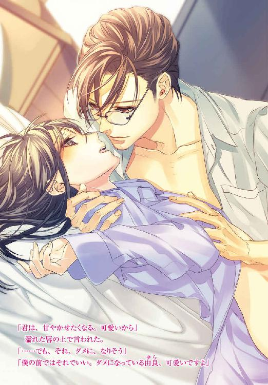
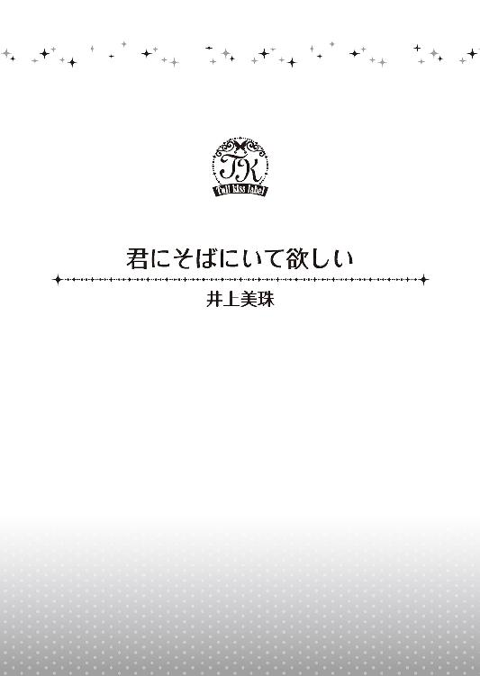
この物語はフィクションであり、実在の人物・団体・事件等とは、いっさい関係ありません。
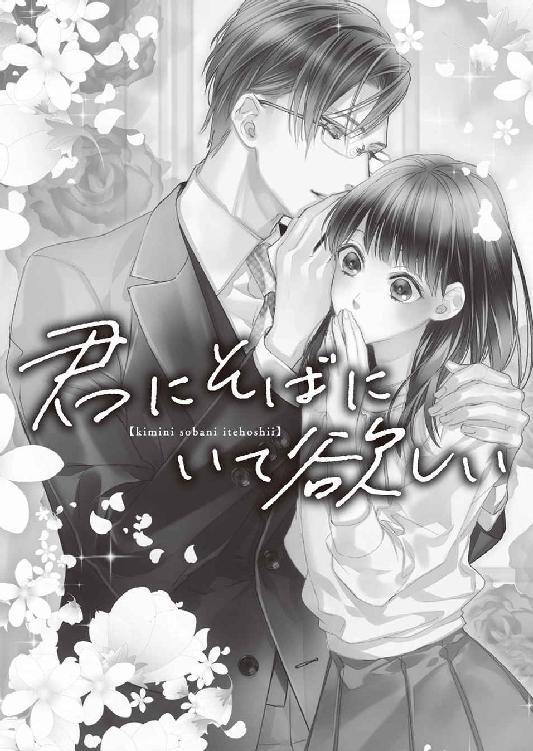
イラスト・駒城ミチヲ
１
どこかで嗅いだ事のある匂いだった。それはいい匂いで、思わず蝶のように近づきたくなる匂い。けれど人工的で、自然にはありえないような、そんな感じがした。
その匂いに鼻を寄せると、不意に肩が温かくなる。体が柔らかなものと、重いものに包まれた感じがして、こっそり薄目を開ける。ああ、人の肌だ、と思った。
次の瞬間、人の肌？ と思い、パッチリと目が覚める。
「え......？」
柔らかなものは、肩にかけられた毛布。重いものは男の人の長い腕だった。見知らぬ天井と、見知らぬベッド。天井の具合から見ても、ラブホテルでない事は確かで、誰かの自宅だとわかる。目の前には綺麗な鎖骨が見える。長い腕に肩を抱かれ、まるで愛しい人を抱きしめているかのようだった。たぶん一晩中、このように肩を抱かれて眠っていたのだろう。長い腕から少しだけ抜け出すと、よく知っている顔が目の前にあった。
「一色部長!?」
市木由良は見知った顔に驚く。隣に眠っていたのは、上司、一色青だった。珍しい名前なのでフルネームで覚えている。しかも、平社員の由良には手の届かない存在で、相手にされない存在。
カッコイイ男、優しい男、高学歴、高身長、高収入の男。一色は社内でもかなり女性人気が高い人。目鼻立ちが整っているのはもちろんの事。笑みを浮かべると優しい顔になり、普通にしている顔はクールでストイックそうな端整な人になる。由良は、笑みを浮かべた顔が好きなのだが、社員のほとんどはクールな彼がしびれるくらいカッコイイ、と言う。
また、モテかたが半端じゃないため、今年のバレンタインチョコは机の上に置いてあるものはすべて丁重に返却し、直接持って来た女性社員へは、礼を言いながらすべて断っていた。
由良も今年はチョコを一色の机の上に置いたが、多分夜遅くこっそり置いたからだろう。また、誰からのチョコかわからなかったのもあると思うが、返されずに済んでホッとしていた。朝にはデスクの上からなくなっていたのだ。
『たくさん貰うけど、いつも食べきれないんです。誰かに食べて貰うのは駄目だと思うので。だから申し訳ないが、今年はいりません』
それに対し、ブーイングも起こったが、我関せずのスタイルは、いっそ気持ちよかったほどだ。あとから、確かにそうだよね、と納得する社員が多く、特に男性社員の一色への支持率を上げた。
温かい一色の腕は、由良の身体をしっかりとホールドしていた。少し重くて、思わず強引に抜け出すと、下半身が痛かった。足の関節も痛いが、一番痛みを感じたのは、身体の中心のあらぬ部分。
「い、痛い......」
そうして、実際に昨夜というか今日は、痛さに涙が出そうだった覚えがある。痛みを必死で耐えたのを覚えていて、その痛みがなぜかという事を思い出すと、顔が熱くなってしまう。由良は全部覚えていた。一色が隣に寝ている理由も、あらぬ所が痛い理由も。
一色が目を覚ます。左目を開けて、右目を開ける。そして小さく伸びをすると、茶色の目で由良を見た。
「おはよう」
いつもと同じ、低めの声で挨拶をされた。その声音は冷静だった。
起きた相手をまじまじと見る。相手は裸、自分も裸。由良は手近にあった布団を引き寄せ、自分の魅力のない身体を隠す。
そうして裸の一色は、手探りでサイドチェストの上にある眼鏡を探し、耳にかけた。普段は柔らかくセットされた前髪が下りて、いつもより若く見える。眼鏡をかけた相手はまぎれもない上司の一色で、由良は裸のまま緊張した。平社員の由良はあまり話した事がないし、ほとんど話しかけられない。一部の平社員が、一色と話しているのを見かけるが、由良はどちらかというと大人しい方で、上司になど自ら話しかけられなかった。
「おはようございます」
由良が挨拶をしたあと、上半身を起こす一色の胸は、意外と厚かった。おまけに腹も出ていないどころか、やや筋肉質。腕もほどよい筋肉がついていて、細身に見えるスーツ姿からは想像がつかなかった。いつもきっちりとネクタイを締める首から顎のラインも綺麗で、由良は目をそらすしかない。
こんなにスタイルが良かったのか、と思ってドキドキしてしまう。
「市木さん、これから深酒はよした方がいいですよ」
昨日は金曜、送別会というものをするにはちょうどいい週末だった。短い期間だったが、課長だった人が異動するため、会を開いたのだ。
昨夜から今日にかけての事を思い出すと、顔から火が出そうだ。一色はまったく悪くない。悪いのは自分だ。由良が酒で潰れて、方向が一緒だから、とタクシーに一緒に乗った。そのあと車に揺られて眠ってしまって、目が覚めたら一色の家だった。どんなに揺さぶっても起きなかったらしく、ソファーに座っていた。十一時半だから泊まっていきなさい、と言われた。
「身体は平気ですか？」
「だ......大丈夫です」
由良の言葉にフッと笑って、顔を覗き込む。
「泣きそうだったくせに？」
由良はさらに顔が熱くなる。きっと赤くなっているだろう。
そんな由良の頬を大きく温かい手が撫で、唇に音を立てて軽くキスをした。昨夜というか今日は、もっとすごい事をしたのだが、素面でキスなんか、と片手で顔を覆った。
そんな由良を見たあと、また微かに笑った気配。一色は小さく伸びをすると、ベッドから下りる。由良は目のやり場に困って、視線をそらした。惜しげもなく裸のまま立つから、否応なく全身が見えた。後ろ姿だけれども。
服を身に着ける音がして、昨夜着ていたアンクルカットパンツだけはいた長身が襖の向こうに消えた。
どう見ても、一軒家の佇まいの家。やや大きめのベッドが置いてあるが、下は畳だ。
由良は自分の服を探した。すると、昨日の服は上着からスカートまで、きっちりハンガーにかけてある。カーテンレールにかけてあり、服を取るかどうか迷った。一色がかけたのだろう。本当に申し訳なく思う。上司に平社員がこんな事をさせてしまっているからだ。周りを見れば、一色の部屋は本当に綺麗だった。
スーツ着用の義務はないが、それに準ずる格好を由良は心がけている。スーツを着ているのは、男性社員くらいだ。もちろんスーツ着用義務は男性もないのだが。
やっぱり服を取りに行こうと、ベッドから下りようとしたところで、きちんと服を着た一色が戻って来て柔らかなバスローブを、由良の肩にかけてくれた。
「シャワーは先に譲りますよ。湯船に入る人？」
「はい」
「よかった、今溜めてるから」
由良はバスローブを身に着けると、下着がない事に気付く。ごそごそと探すが、ないようだ。
「何してるんです」
「いや、あの。下着がないんです」
どんなに探してもなかった。すると一色は、ああ、と言って親指で後ろを指す。
「今、洗濯中です。もうすぐ乾きますよ」
「え？ どうしてですか？」
いつ洗濯機を回したのだろう、と思う。もしかしたら一度起きて、またベッドに戻って来たのだろうか？
どうしてって、と言いにくそうにして、首に手をやる。そのまま視線を合わせず、理由を言った。
「セックスの時、汚れたからですよ」
聞くんじゃなかった、と由良は思った。そして、昨日の事を思い出す。
「......そうですか、すみません。えっと、じゃあ、ないんですね。今は」
由良の言葉に、ため息をついて、もう一度襖の向こうに長身が消える。由良はしっかりバスローブを着て、一色が消えた襖を開けた。すると、手に女物の、袋に入ったままの下着を持って、彼は立っていた。
「これでいいですか？」
コンビニに売っているような下着は、デザイン性はなくとも十分だった。だが、なぜ一色はこういう物を持っているのか、と由良は疑いの目を自然に向けていた。彼女がいるとしか思えなくて、そのまま口に出してしまう。
「彼女がいるんですか？」
「いませんよ」
即答した一色は、由良の手を取り、強引に下着を渡す。
「じゃあ、何でこんなもの持っているんですか？」
「連れて帰る時にコンビニに寄ったんです。君は自分の家の場所を言わなかったから、泊めるしかない。必要だと思って、これを買ったんですよ」
「............そう、ですか」
「そうですよ」
きっぱりと言われて、申し訳ない気分だ。誰かのためにあるものではなく、由良のためにあるものだとわかって、どこかホッとした気分になってしまった。
一色は大きなため息をついた。見上げると、やや呆れたような顔をしていた。
「変に勘繰らないで、はやくさっぱりして来なさい。こっちです」
言われるままに、一色のあとに続く。歩くと、痛くて、昨日の行為を思い出す。痛がっていた由良を、優しく抱きしめた長い腕。その腕を、由良は思いっきり引っ掻いた覚えがある。一色の痛そうにしかめた顔。
「あの」
「何ですか？」
バスルームに入ると、戸棚からバスタオルを出して渡される。
「腕、痛くないですか？」
一色は少しだけ目を細めると、小さく嘆息する。
「覚えているんですか？」
「た......多少は」
言葉に詰まりながら、確かに覚えている、と心の中で思う。もちろん、肌の感触も、リアルに覚えている。
何も言わない一色に、どうしたらいいのか、と思いながら見上げる。
眼鏡の奥の綺麗な茶色の目が、ジッと由良を見ていた。瞬きをするその仕草さえ、由良の心を騒がせ、本当にどうしたらいいのかわからないのに、目が離せない。
一色の顔が近づき、キスをされるのかと思って目を閉じると、その目蓋に優しいキスをされた。さらにドキドキと心臓が高鳴り、一色に聞こえそうなくらいだった。
柔らかい唇が離れ、ゆっくり目を開けると、大きな手で由良の頭が撫でられる。
「痛くありませんよ」
にこり、と笑顔を向けられる。
「ゆっくりして来なさい」
由良から手を離して、一色はバスルームを出て行く。
人に向ける、いつもの優しげな笑顔。仕事自体は厳しいが、優しい笑顔と態度で理想の上司と言われる一色。彼が怒っているところは見た事がない。それはあまり接さない、由良でも知っている。
優しい人。
そんな人を、昨夜、酔いに任せて、そして......。
その先の色々な事まで、走馬灯のように思い出してしまう。一色の、まるで恋人にするような仕草や行為に、心臓が壊れそうだ。
「思い出すな、恥ずかしい！」
由良はシャワーを浴びるため、バスローブを脱ぐ。目の前にある鏡を見ると、胸の辺りと鎖骨、腹部や二の腕に、点々と赤い痕跡があって、またも昨夜を思い出す。
「何やってんだか。相手は将来有望の、一色部長だよ？ 高嶺の花だってば」
独り言を言いながら、バスローブを脱衣籠に置く。高嶺の花、と言った自分の言葉に、由良はおかしさを覚えた。高嶺の花とは女性に形容される方が多いからだ。
でも、高嶺の花というような言葉が、一番しっくりくる。
誰もが望んで落ちない一色部長、と誰かが言っていたのを耳にした時、言いえて妙だと思った。
広い脱衣室から出て、一歩浴室へ入ると、その広さに驚く。
しっかり溜まった湯船に身体を浸すと、やはり下半身のあらぬところが痛くて、やってしまったのだ、と由良は思う。初めてだった、という事実に、一色は驚いただろう。由良だって驚いている。
「さっさと、捨てたかったけど。でも、私......」
由良は、自分がした昨夜の行為に、落ち込むしかなかった。
そして、一色は大人なのだ、と思った。
平社員の、ほとんど話した事もない女を抱いたけれど、平然としている。おまけにアフターケアをきちんとしてくれて。そして、由良が無理矢理強いた行為を、許してくれている。
昨日の事を、ずっと思い出し、由良は自己嫌悪に陥っていくのだった。
２
湯船につかりながら、足を引き寄せて膝へ額を乗せる。
一色と出会った時を思い出しながら。
一色青という上司に初めて会ったのは、入社一年目の夏、納涼会の時だった。
当時の彼は、まだ課長になって二年目だったと思う。
☆
────入社して約三ヶ月程度。
就職難と戦いながらどうにか勝ち取った勤務先は、外資系の一流企業。まさか、こんな大きな会社に入れるとは思いもしなかった。しかも、配属された先は、インテリアを扱うデザイン事業部、というところだった。
そこはメーカーのほか、オフィスビルやマンションの開発業者に向けて、内装のデザインや企画を提案したり、デザイナーやコーディネイターとの打ち合わせが主な仕事で営業色が強い。商品の制作を企画のコンセプトに合わせデザイナーに持ちかける事も多い。
その傍ら、ファニチャーレンタルの手配、販売も同時に行っており、展示会、販売会と言った企画も多く、頭も神経も使う部署。
多岐にわたる慣れない仕事に目を回すのは当たり前の事。一体どうしたらいいのか、どうしたら仕事を覚えるのか。どうしたら挨拶回りが上手くできるのかを考えると、頭がパンクしそうだった。
しかも、デザイン事業部、とあってスーツ着用が義務づけられていない社内は、男の人も女の人も華やか。
『デザイン事業部は時には営業もするし、接待にも行ったりするから。もっと服装に気をつけて、身だしなみも綺麗に。お化粧ももう少し華やかにした方がいいわ』
要するに、もっと綺麗に可愛くしなさい、と先輩から言われた時には、オシャレなたった一人の同性の同期に、服を選んで貰うくらいだった。
「由良って、可愛いのにもったいないよねぇ」
言われて、ただ控えめに笑った。
「そうかな？ そう思えないけど」
「いや、可愛いよ。清純って感じで。私は、会ってちょっとしか経ってないけど、由良の優しい気遣いとか、綺麗な字とか、好きよ。同期で良かったって思ってる」
その言葉が嬉しかった。
「来栖さん......」
「だからさ、未來って呼んでよ！ もう三ヶ月経つんだしさ」
そう言って、肩をポンと軽く叩く彼女は、同期の中で一番仲が良くなった人。同じ部署というのもあるが、美人で華やかで、オシャレな彼女には若干気おくれしてしまう。
もう三ヶ月経つのに、と言われれば、いい加減に由良の方が失礼になるだろう。
「今日のその浴衣も、すごく似合ってるよ？」
「......み、未來が選んでくれたから」
思い切って未來、と呼んでみると、未來は嬉しそうに笑った。
「だって、色白だし、だから余計に、ピンクの浴衣が似合うっていうか。可愛いよ」
未來に選んで貰ったピンクの浴衣は、レトロ柄で少し奮発したが、確かに自分に似合っていると思う。
「ありがとう」
「いいえ！ しかし、この荷物重いよね！ 高崎君はさっさと先に行っちゃってさぁ......女の子がビール持ってるんだから、持ってくれればいいのに。気が利かないやつ！」
高崎優馬は未來と由良の同期で唯一の男性だった。モテそうな感じで誰にでも優しく好かれる人だ。
「それにさ！ 今の課長？ 会った事もないのに、その課長さんとやらが浴衣で納涼会っていいよね、って言ったから女性社員は浴衣なんでしょ？ もう迷惑！ まだ新人で、お金もないのにわざわざ浴衣買わなきゃいけなかったんだよ？」
未來の不満モードは明るくて面白い。思わず笑うと、もう！ と言って頬をふくらます。
会社の納涼会は毎年同じ月に行われるらしい。それもデザイン事業部だけの事だから、人数もさほど多くない。でも、納涼会やイベントではやはり新人は下っ端なので、買い出しはすべて任されていた。
浴衣で納涼会と言った本人と、入社して三ヶ月が経つのに、由良達新人は会った事がなかった。というのも、長期出張中であり、アメリカにある本社で仕事をしているらしい。当初は一ヶ月だったのが二ヶ月に延び、三ヶ月に延びたのは、その課長が有能だから、という話。
しかも課長は日本にいない間も、日本での仕事も少しずつだがこなしているというから驚く。でも普通は、課長がこんなに留守なのはめったにない事だろう。不思議に思って聞いてみると、先輩女性社員が笑顔で誇らしそうに答えた。
『一色課長は、格別なの。仕事できるし、厳しい時もあるけど、フォローが上手いっていうか、優しいっていうか......出張行くとね、できるから本社の人が返さない、って噂なのよ？』
綺麗な先輩達が、時々零すのは、課長がこのまま本社勤務になってしまうのではないか、という事。そして、そうしたらいやだ、という気持ち。
会った事がないから想像がつかないが、かなりのイケメンらしい。また、社員の憧れそのものなのだとか。それに日本支社の社長も一目を置いており、課長になってまだ二年目だというのに、そろそろ部長に昇格、という話も出ているらしい。
「でも、私は、似合う浴衣を選んで貰ったから、このイベントも感謝したいけどな」
未來は由良の言葉に眉を下げて、もう、と言って笑う。
「そう言われると、戦意消失しちゃうなぁ。たしかに、こんな事なければ、浴衣なんて着ないしね」
ふふ、と笑いながら袋を持ち直す未來は、ため息をついた。
「しかし！ 重い！」
眉をしかめて未來がもう一度袋を持ち直すと、後ろから低くていい声が聞こえた。
「持ちましょうか？」
重い！ というセリフに返事をするようだった。振り向くと、由良の視界には青いネクタイと、青のベストが目に入る。視線を上にやると、由良のずっと上の方にある顔が見えたのだが。
「えっ？」
先に声を出したのは、未來だった。
「二人とも、デザイン事業部の新人......でしょう？ 来栖さんと、市木さん」
未來も由良も、固まってしまっていた。身長が高いその人は、スーツの上着を左腕にかけ、またその手にはオシャレなブリーフケース。首から上を見ると、目鼻立ちが整っていて、すごくクールな印象を受ける。どこかの俳優、と言っても過言じゃないほどだった。
おまけに、上着を脱いで白いシャツと青色のベストだけだから腰の位置が高いのがわかるし、細身だがしっかりとしている骨格もわかる。首の辺りもスマートで、ネクタイがよく似合っていた。
スタイルが良くて、顔立ちが端整なその人を見ると、心が一瞬で騒いだ。
こんなに素敵な人がいるのだ、と思わずコクリと唾をのみこんだ。
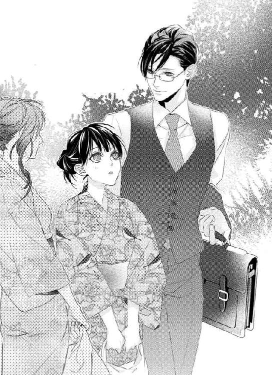
「や！ イケメン！」
未來が口元に手を当てて、開口一番にそう言った。でもそれだけじゃない、何だかオーラというか、雰囲気がある人だ。
心の中ではそう思う事はできるが、もちろん口にはできない。
未來の言葉に苦笑した彼は、未來の手から缶ビールなどが入っている袋を取った。
「ありがとう。......市木さんも、持ちましょうか？」
まるで、イケメンと言われ慣れているような印象だったが、嫌味じゃなかった。じっと見ていた視線を外し、由良は彼から少し距離を取った。
「......い、いえ！ 大丈夫です！」
すごく、何でも整っている人で、オシャレなブリーフケースだと思っていたが、よく見ると何だか高級そう。どうして由良の名前を知っているのか、とさらに一歩後ずさった。会社の人だろうという事はわかるのだが。
そんな由良を見て、瞬きをした彼は苦笑した。
「ああ、申し訳ない。初めまして、課長の、一色青です。君達の事は、配属前に写真で何度も見たので、声をかけました。女の子には、その荷物、辛いでしょう？ 僕が持ちます、市木さん」
そうして手を差し出されたが、すぐには渡せなかった。すでに、未來の荷物を持っているからだ。
「いえ、二つも持つと、重いので。大丈夫です、私は」
右手に持っていたのを左手に持ち替えながら言うと、その左手から荷物を奪われた。
「せっかくの浴衣が着崩れます。気にしないで、僕は男なので力はありますから」
にこりと笑って、行きましょう、という彼の背中を見る。細身なのだが、広い背中で、思わず目を奪われる。行き交う人も、女性はチラ見していた。
「かーっこいい......何か、男として、理想的な感じの人よね？ そう思わない、由良？」
「......あ、うん」
二人で背中を追いかける。
彼に追いついた未來は、隣に移動し、何事か話しかけていた。さすがコミュニケーション能力のある美人だ、と何度も瞬きをして、二人の背中を見た。
しかも、美男美女でお似合いだった。背も高い未來だから、彼の隣にいて、遜色がない。
「私とは、違う人種の人達、だなぁ」
ため息をついて、二人を見て。その背中を追いかけて。
ずっと遠い人なのだと、その時認識をしたのだった。
☆
さっさとお風呂から上がって、身支度を整えて帰らなければ。ゆっくりして来なさい、と言われてもゆっくりなどできなかった。
他人のテリトリーに慣れていないのもあるが、何よりも一色のテリトリーだと思うと緊張してしまう。
シャンプーやボディソープさえ使うのも気が引けたが、そこは必要にかられて、使用した。
「日本のじゃないみたい......黄緑色だ」
割と小さい容器で手に出して髪の毛につけると、すごくいい匂いがした。
「フルーティーだ。いい匂いなの、好きなのかな......部長もいい匂い、するし」
一色がいつも使っているシャンプーを使っている、という事実を感じると、顔が熱くなってしまった。一色はいつもこの匂いのシャンプーで髪を洗って、同じところに置いてあるボディソープを使っている。自分はきっと今、一色と同じ匂いになっているのだと言う事に、ドキドキしてしまう。
頭を振って、さっさとしないと、と思いながら手早く髪の毛も、身体も洗った。
身体を拭いて髪の毛を拭いて、新しい貰ったショーツを身に着けた。着替えの服を持っていなかったので、バスローブに袖を通す。
浴室から出ると、一色はリビングにいて、テーブルの上を拭いているのが見えた。それから食器を並べているのが見えて、いつもと違った一面を感じる。
「早かったですね」
「はい、ありがとうございます」
バスローブを着た自分が恥ずかしくてしょうがなくて、由良は小さくなってしまう。
「あの、服、取りに行ってもいいですか？」
寝室にかかったままの服を早く取りに行きたかった。
「どうぞ」
勝手に取りに行ったらいけないような気がして、断りを入れたのだが、あっさり返事をされて笑みを向けられた。寝室の襖を開け、中に入ると、シーツは乱れたままだった。少しくらい整えて、ベッドから出ればよかった、と自分の配慮のなさに恥ずかしくなる。
昨日の事を思い出させるようなそれに、由良は目をそらして、ハンガーにかかった服を取る。ブラジャーも一緒にかけてあったので、バスローブを脱ぐと、まずそれを身に着けた。そしてインナーを身に着けて、スカートに足を通した。スカートのホックをとめる前に、と由良は布団に手をかける。
その時にドアが開いて、慌ててスカートを引き上げてウエストを隠した。
「な、何ですか？」
中途半端なところを見られたが、何食わぬ顔で、一色はベッドのシーツを剥いだ。由良はそれを見ながらスカートを少し引き上げて、ホックをとめる。
「シーツ、剥ぐんですか？ すみません、私が！」
急に動くと、あらぬところが痛いと思いながら手伝おうと手を出すと、一色が止めた。
「いいですよ。急に動くと、痛くないですか？」
わかっている風に言われて、顔を赤くすると、一色はクスリと笑った。
「女性の初めては、痛いからね。動かないで座っていなさい、と言いたいけど、ちょっとこっちに来なさい」
手招きされて、シーツの山を抱えた一色について行く。
先ほどの言葉から、初めての人とした事あるんだ、と思った。一色のような魅力的な人なら、そういう人が何人いてもおかしくないと思える。同期の未來は、どういうセックスするのかなぁ、なんてつぶやいた事があるくらいだ。
そんな彼、一色とつまりは、そういう事をしてしまったのだが。経験がなさ過ぎて、恥ずかしくて。何をどうされてしまったか覚えていても、頭の中で整理ができない。
顔を赤くしながらもついて行った先は、先ほどのバスルーム。そこには一人暮らしには大き過ぎるほどの洗濯機がある。それにシーツの山を洗濯機の上に乗せた。
それから、由良の手を引き、洗面台の前に立たされる。
「何ですか？」
後ろを見ると、髪の毛を触られた。
「あっち向いて」
鏡の方を指差され、向くと、すぐそこに置いてあるドライヤーをコンセントに挿す。音とともに、ゴアッと熱気がかけられる。
「アチッ」
「髪くらい乾かしなさい。いつもこうですか？」
呆れたような口調に、由良は、はい、と返事をする。いつも乾かさないで寝てしまうし、濡れたまま髪をセットするのが常だ。ドライヤーはあるが、家でかけた事はほとんどない。要するにそういう事はズボラなのだ。
さすがに冬はドライヤーをかけるけれど、もう暖かくなって来ているので、最近はまたしなくなった。
一色の長い指が、由良の髪に触れながら梳くようにして、ドライヤーの風を当てる。男の人の指に髪の毛を梳かれるのは初めてだ。根元を乾かす時に触れる、綺麗で優しい指使いにもドキドキしてしまう。
何といっても、憧れの上司で部長という一色に、こんな事をさせる部下は由良だけなんじゃないかと。
それに、一色が後ろに立って髪の毛を乾かしている事実や、首筋に触れるこの指が由良に触れた事も思い出してしまう。
この綺麗な手や指が、由良の身体を撫で、優しく触れた事。それに感じて声を出した事を思い出すと、とても恥ずかしい。あんな声を出すなんて、一色はどう思っただろう。
しかも髪くらい乾かしなさい、いつもこうですか？ と言われた言葉を思い出すと、由良をズボラな女だと思ってやしないだろうか、と違った意味で恥ずかしくなってくる。
いろいろ考えているうちに、髪の毛が乾いたらしい。
ドライヤーのスイッチが切られると、鏡越しに一色と目が合う。
「ありがとうございます」
慌てて視線を外し恐縮して頭を下げると髪の毛にブラシをかけられた。あ、と思っていると、髪の毛を横にかき分け、後ろの首の中心に触れる。つっと、指が触れるその感覚に身体が反応して、肩をすくめる。
顔を上げると、また鏡越しに一色と目が合って、身体が反応していたせいもあり、心臓が早くなる。顔が赤くなっている事だろう。さっきから一色と鏡越しに目が合うので、余計にそうなってしまう。
由良の身長は、一色の肩より少し下くらい。背の高い一色の手が由良の首筋に絡み、身をかがめて耳の後ろに唇を這わせる。
息が止まってしまいそうで、どうにか浅く息を吐き出した。
「いい匂いがしますね」
何も答えられずにいると、首筋を撫でて、由良から手を離す。
もうすでにドキドキしっぱなしで、身体が変な感じ。まるで、昨夜のような疼きも感じる。
「朝食、食べて来なさい」
耳の後ろにある唇が、声を出したので、肩を少しすくめてしまう。は、と息を吐き出し、後ろを見て、聞き返す。
「え？」
「朝食です。作ったので」
由良は一色に朝食を作って貰ったという事実に恐縮した。
「あ......そんな事まで。す、すみません」
頭を下げると、頭を撫でられた。
「何を謝る必要があるのか。食べない？」
「い、いえ！ 食べます」
「無理しなくていいですが？」
「そんな事ないです！ 食べたいです！」
言うと、またくしゃくしゃと頭を撫でられた。
「じゃあ、食べて来て」
「はい」
コクリと頷き、顔を上げると、一色がシャツのボタンを下から外していた。一瞬止まってしまうと、彼は由良を見る。
「どうかしましたか」
冷静な声で、シャツのボタンを外すのをやめない。シャツを手早く脱ぐと、先ほど見た魅力的な体が現れる。昨夜、一度見た身体。絶対イイ身体している、と未來が言った通りの、男の人らしい、ほどよく筋肉のある身体。昨日の事もあり、見るだけで変な気分になりそうだった。
「いえ、食べて来ます」
由良は回れ右をして、バスルームを出て行った。後ろ手にドアを閉めると、息を吐き出す。
一色は、優しい人だ。みんなが言うよりも、もっと優しい人だ。
気を遣って貰っている。
「私なんかと、こんな事になったから......」
テーブルの上には温かい食事。日本の朝食、という感じだった。
何だか申し訳ない感じだった。優しい人だから、由良にここまでしてくれているのだ。
「ごめんなさい......一色部長」
いくら憧れていたとはいえ、酔いに任せて、帰りたくない、なんて。
「バカみたい......帰りたくないって、バカな女の典型みたい......引っついて離れない私の事、どう思って......抱いたんだろう？」
帰りのタクシーの中、一色と二人っきりになり、帰りたくないと言って泣いてしまった。そうして一色の腕を抱きしめて、離さなかったと思う。
思い出すと、迷惑で恥ずかしくて、申し訳ない。一色はどう思っただろうか。
自己嫌悪。
それしかなくて、由良は自分のバッグを見つけて、財布を確認する。
もう、居たたまれなくて、どうしようもなくて。
悠長に食事をとる気になれない。
あんな風にしたら、誰だって好きでもなくたって、と思う。
『そんなに引っつかれると、困ります。その気がなかったら、早く、離れなさい』
いやそうだった。いやだったかも。
多分、お情けで、抱いて貰えた。
目が、潤んで、早くこの場を、と思う。
玄関へ行き、靴を履いて。
由良は、一色のテリトリーから、逃げた。
３
────部下に手を出すなんて、初めての事だった。
キッチンの換気扇の下、タバコを咥えて火をつけようとする。なのに、ジッポーにオイルが入っていない事を忘れていたため、何度もカチカチして、結局最後には安いライターで火をつける事になった。
彼女がいるのは、バスルーム。そのドアを見て、ため息とともに煙を吐き、タバコを持った手を額に当てる。
しばらくそうしていて、タバコを一気に吸う。今日は休日であり、何も食べさせないで帰すのはいやだったし、彼女と話をしたかった。
『帰りたくないです』
この一言で、もうすでに自分の心は揺らいでいたのだろう。口では離れろと言っても、本能的には無理だったと思う。
「ずっと意識して見ていた女が、ああやって来るのは反則だ」
はぁ、とため息をついてまた額に手を当てると、タバコの煙が目に染みたので、灰皿にそれを押しつける。
いつ頃から意識していたか、覚えていない。いや、覚えていないというか、きっと最初からだろう。初めて会った、あの夏の頃からだ、と反芻する。
桃色のような淡い色の浴衣が色白だから似合っていた。やや警戒するような見上げる目を覚えている。人見知りをするのだな、と思ってその後しばらく見ていたら、優しい笑った顔や、黒々とした目がハッとするほど綺麗で、知らず見惚れていたのを思う。
大して美人ではない。でも、その表情や伏し目がちな目にたまに見上げられると、いつもドキリとしていた。彼女は部下だしこういう感情はダメだ、そういう関係になってはいけない、一線を越えないように、と務めて接していた。
「なのに、誰も上げた事のない家に上げて、抱いてしまうとは......我慢してたのかな、割と」
よっぽど親しい男友達を家に上げても、女は誰一人家に上げた事などない。いつも付き合っている人とはホテルを使うのがほとんどで、たまに彼女の家に上がっても、自分は上げた事はないのだ。
そこも一線を越えてしまっていて、自分のボーダーラインが曖昧になっている事を感じる。が、口に出して言っていた通り、我慢していた、のだろう。それに、心から欲しいと思える人に出会ってしまった。
抱いてからはより、強く。
タバコをもう一本、と手を伸ばしたところでやめた。
食べて、話をしたら、車で送って行こうと思った。
彼女と交代でシャワーを浴びる前に、食事の支度に取り掛かる事にした。
市木由良は、入社三年目の若い女性だ。身長が低めだから、年齢より少し幼く見える。三月末辺りが誕生日の早生まれで、二十四歳だったと記憶していた。
冷凍庫を開けて、冷凍されたご飯を取り出し、レンジへ放り込んだ。冷蔵庫を開け、卵と豆腐、それから油揚げを取り出したあとに、もう一度ため息。
「市木由良......か」
鍋に水を入れてＩＨのスイッチを押す。
市木由良はいい子だ。入社一年目当時から、一生懸命で、気が利いて、笑顔を絶やさない。
目立って仕事ができるとは言わないが、こつこつと地道な努力をして、自分なりにデザイン事業部という特殊な場所で頑張っている。
由良は必要な社員だと思う。彼女がいれるコーヒーはインスタントなのに、何だか美味しい、と言う社員だっている。彼女に、細やかな書類の仕事をさせると、期待以上の事をする。対人関係は苦手なようだが、笑顔を絶やさないから、常に好印象。説明が下手でも、何だか上手くいってしまう。
控えめな感じの顔立ちに、丸い目が可愛い、と取引先にも上々な評判だ。柔らかい雰囲気がそうさせるのだろうと思う。彼女を連れて行くと、営業が上手くいく確率が多いと言われた事もあるのだ。実際、彼女と同じ現場に行き、それを実感した事がある。
優秀ではなく、特に目立ったものがないのに、どの社員にも可愛がられる存在。
市木由良という女性社員に出会い、こんな社員も必要なのだと、心から思っていた。
出会った頃の印象とほぼ同じだが、何事も受け入れる強さも感じて、より一層彼女に惹かれていくわけになるのだが。それが、何度も自分を律する羽目になって行くとは思いもしない。
『一色部長は、イケメンというよりも......ハンサムとか、そういう言葉が似合う気がする』
言われた言葉の意味は、すぐに理解できる。ハンサムには、多々意味があって、顔が美しい、だけではない。素晴らしい、という意味もある。英語をきちんと理解できての言葉だとわかるそれは、彼女の教養の高さも感じた。
彼女は青と目を合わさない。コーヒーも、どうぞ、とそっとおいて行く。うつむきながら、誰とも違う言葉を言っていた由良は、いつも一瞬だけこちらを見てサッと去って行った。
一色青、という名前は女のようであまり好きではないのだが、綺麗な名前だと、由良が言っていたのを聞いた事があって、何だか気分が良くなった事がある。
人とは違う形で、青を褒めた彼女に、照れくさいような気持ちと、好感が持てた。そして彼女は、必要な社員であるとともに賢いのだと感じた。
手早く卵焼きを作りながら、間違いなく出来のいいそれに眉を寄せる。
一人で生きて来た時間が長いため、ある程度の生活スキルができている。料理は普通の男よりもきっとできる方だろう。
眉を寄せたのは、由良がこの料理の状態をどう思うか、である。以前に、男の青の方が家事ができるので、そこが無理だと別れた女性がいたからだ。
しかし青は、朝はきちんとした食事を食べたいのだ。だから毎日味噌汁は食べるし、作る。
「どう思うかな？」
苦笑して、手早く朝食を作り終えて、ため息。
由良は物音から察するに、シャワーを終えたようだ。
「どうしようか......」
髪の毛をかき上げ、今日何度目かのため息。
目頭を揉みながら思うのは、彼女を遊びで抱いたとか、勢いで抱いたとか、決してそういうのではない事。
昨夜の由良はいつもより酒を飲み過ぎていた。青の身体にもたれかかり、帰りたくない、と言ったあと悲しそうな顔をしていた。というか泣いていたのだ。
『帰りたくない。帰ったら一人だし、今日のいやな事、きっと思い出します』
デザイン事業部の課長は、まったく畑違いのところから来た社員。青より一回り年上で、総務部から異動して来たのだ。急な人事で彼も大変だったと思うが、ただデザイン事業部には合わない気がしていた。
由良は、特に彼のお気に入りで、いつも何かしらセクハラをされていた。他の女性社員にもセクハラを相談されていた事もあり、何度か注意したが、単なるスキンシップと言う。また年下の、若い上司に言われた事など、聞きたくない風だった。
あと一週間ほどで課長は元の部署に異動となる。昨夜は金曜日で送別会には絶好の日だった。由良は課長の隣に座らせられ、結構な酒を飲まされていた。少し遅れて出席した青は、どうにか遠ざけたが、遅かったのだ。
周りの社員が注意しても、聞かなかったという。由良はいろんなところを触られたと聞いて、彼をその場で呼び出し注意したが、元の部署に戻る事に対し、嫌味を言われて終わりだった。
思い出してイライラして、ライターでタバコに火をつける。二回ほど吸って、タバコの火を消した。
「帰したくなかった、僕も悪いな」
タバコのにおいを消すために置いてあるフレグランススプレーを手に取り、頭から吹きつけ、服にもそうした。
愛用しているのはオピウムという香水で、やや香りが強いため知り合いの調香師に頼んで薄くしている。最初はいまいちだった匂いも、ずっと身に着けていれば気に入ったものとなった。
とりあえず料理を皿に盛って、茶碗にご飯を盛りつけた。そうしている間に浴室が開いて、由良がこちらを見ているのに気付く。
「早かったですね」
声をかけると恥ずかしそうにうつむき、返事をした。
「はい、ありがとうございます」
バスローブを着たままだから恥ずかしいのかもしれない。風呂に入ったせいか血色がよくて、昨夜の事を思い出してしまう。
色白だと常々思っていた肌は上気したように薄桃色になり、その素肌の感触に若さを感じたのを思い出す。
肌の感触は吸いつくようだった。誰も触れた事のない肌だとすぐにわかったのは、彼女の反応でだ。
触れるたびに小さく鼻にかかった息を吐く甘い声をもっと聞きたくて、何度も滑らかな素肌を撫でた。部下だとわかっていても、それよりも惹かれている女に触れている事に、葛藤しながらもっと愛したいという気持ちになった。
由良を抱いているという事実により興奮し、堪らない気持ちになったのを覚えている。
「あの、服、取りに行ってもいいですか？」
少しじっと見ていたからか、バスローブをかきよせてそう言うのを聞いて、青は微笑んで返事をした。
「どうぞ」
彼女の服はすぐにわかるよう、寝室のカーテンレールにかけてある。
その恥ずかしそうな仕草はそそられる。昨夜もそうだった。初々しく顔を恥ずかしそうにそらす仕草とその細い首には、何度も男の部分を刺激された。
半ば焦らすようにショーツを脱がせたから、彼女の下着は洗濯をしている。きっと、手渡したショーツをはいているはずだ。
着替えが遅いので、そっと襖を開けてみると、彼女が懸命に布団を直していた。きちんとホックをとめていないから昨夜コンビニで買ったショーツが少し見えていた。そこを昨夜は何度も撫で、腰骨の辺りから臀部を揉んだ。痩せているのにふわりとした感触が心地よかった。細い腰が揺れ、震えていた事を思い出す。
魅力的なそこを出しているともう一度触れたい気分になってしまう。だが、彼女は初めてを経験したあとだ。触れるわけにはいかない。
襖が開いた事に気付いて、ウエストを隠し、慌てている様子に内心、苦笑する。
「な、何ですか？」
スカートを引き上げホックをとめるのを見てから、何も言わずに青はベッドのシーツを剥ぐ。
昨夜の名残が残っていたのを見せずに、全て丸めた。
「シーツ、剥ぐんですか？ すみません、私が！」
「いいですよ。急に動くと、痛くないですか？」
まだ身体が痛いだろう事はわかっていた。顔を赤くするのを見て、可愛らしさを感じ、笑みを向ける。
「女性の初めては、痛いからね。動かないで座っていなさい、と言いたいけど、ちょっとこっちに来なさい」
シーツの山を抱えて、先ほどから気になっていた由良の髪の毛を見る。乾かしていないそれを見て、このままでは風邪を引くと思ったのだ。
シーツの山を洗濯機の上に乗せた。そうして由良の手を引き、鏡の前に立たせて、ドライヤーを手に取った。
「何ですか？」
振り向いて問いかけるのを聞いて、髪の毛に触れて鏡を指さす。
「あっち向いて」
ドライヤーをコンセントに差し、由良の髪の毛に熱風をかける。
「アチッ」
下から熱風をかけたせいで熱かったのだろうが、そのおかげで白いうなじが見えた。
「......髪くらい乾かしなさい。いつもこうですか？」
「......はい、すみません」
細くて綺麗な首筋。ここは何度も指で撫でて、唇を這わせた場所だ。身体を震わせながら、鼻にかかった息を吐き出すそれが可愛かった。
この白い肌に痕がついたらどうなるのだろう、と思っていたら痕をつけてしまっていた。服で隠れるかどうか際どいところだが、多分大丈夫だろう。
ドライヤーのスイッチを切ると、鏡越しに由良と目が合う。恥ずかしそうに視線を下に向けるのを見て、白いからか頬骨の辺りにそばかすが薄ら見えている。たまに薄い化粧だから気付く事もあるけれど、素顔だから少し目立つ。
「ありがとうございます」
恐縮したように頭を下げるから、素顔の由良が見れないので、髪の毛にブラシを当てる。
顔を上げると、薄らとそばかすが浮いた白い顔。髪の毛を横にかき分け、その頬と黒い目を見ながら指を這わせる。肩をすくめて、頬がほんのりと赤くなるのが見えた。顎の下に触れながら身をかがめて耳の後ろに唇を這わせる。
背が小さいと思う。パンプスを履いても自分の肩を超えないのではないかと思うが、この腕にスッと収まる感じがいい。
「ぁ......」
小さく零れる声は、まだ青しか聞いた事がないのだろう。
頬に手を伸ばし、唇を寄せたいと思うが撫でるだけにする。これ以上触れたら、止まらなくなってしまいそうだったからだ。
「いい匂いがしますね」
最後に、首筋を撫で、手を離す。
昨日は部下である課長の隣にいたからだろう。タバコ臭かったが、今は青が使っているシャンプーの匂いがしてホッとする。
日本にはないシャンプーとボディシャンプーだから、いつもの自分と同じ匂いなのだが、由良が使うとまた違っていた。彼女の方が甘い香りになっている。初めて男の家に泊まり風呂に入っただろう。そう思うと、自分のモノのような気がしてしまう。
昨日抱いた余韻が、青の中に酷く印象的に残っているからだろう。
きちんと乾かしてやって、ドライヤーのスイッチを切ると、申し訳なさそうに頭を下げる。
「ありがとうございます」
すみません、ではなく、ありがとうございます、という言葉に満足して笑みを向けた。
「朝食、食べてきなさい」
「え？」
案の定聞き返されたので答える。
「朝食です。作ったので」
「あ......す、すみません」
今度はすみません、と頭を下げられた。
「何を謝る必要があるのか。食べない？」
申し訳なさそうな顔をしている。空腹ではないのかもしれないし、朝は食べないのかもしれない。
食べないのか？ と聞いたのがいけなかったかもしれないが、由良は恐縮して返事をする。
「い、いえ！ 食べます」
「無理しなくていいですが？」
「そんな事ないです！ 食べたいです！」
無理をしているのだろう、と思いながら頭を撫でる。どちらにせよ二人分作ったのだから残しても、食べて欲しいと思った。
「じゃあ、食べて来て」
「はい」
頷いたのを見て、青はシャツのボタンに手をかけた。自分も風呂に入るためだ。
そうしたらこちらをじっと見ている視線とぶつかる。
「どうかしましたか」
手早くシャツを脱ぎながら聞くと、由良は目をそらした。まるで慌てたようなそんな感じがして、男の裸を見るのは慣れていないのだと思った。
そうされるとこっちも照れてしまいそうだ。
「いえ、食べて来ます」
バスルームを出て行く細い背中を見送る。
脱いだシャツが、腕に当たり痛かった。彼女から引っ掻かれた時にできた傷だ。
そこで、かなり深いため息。
「身体から、彼女相手に......バカだな」
いつも笑顔で、美人ではないけれど可愛くて。
傍にいるなら、ああいう人がいい。傍にいてくれるのなら、小さくて細くて、いつも笑顔を浮かべている人がいい。
入社一年目からずっと見ていた。ゆっくりと、確実に惹かれて行ったと思う。
帰りたくない、という彼女を自分の家へ帰す事はできたはずだ。彼女の住所も、部下に電話をして聞けばわかっただろう。きっと自分の家を目の前にしたら、彼女はすんなりと帰ったはずだ。そうして何事もなく、また次に会社で会う時はただの上司と部下でいられた。でも、飲み会での出来事や、帰りたくないと言う由良の気持ち、そして青自身の気持ちは一つに繋がったかのように思えた。
由良が青に憧れの気持ちを持って、惹かれているのはずっと知っていた。そして青もまた由良に惹かれていたが、自分の部下には手を出さないという信条が、心を律し続けていた。だが、このまま信条という言葉に縛られてしまい、自分の気持ちを無視し続けていいのか、青は自分自身に問いかけた。
由良と二人きりになるチャンスは、多分昨夜をおいてなかっただろう。方向が一緒なのは知っていたが、彼女は飲み会のあとは必ず電車に乗って帰っていた。
バスルームでシャワーを軽く浴びてから、湯船に入る。湯は一度抜いたらしい。配慮なのだろう。こういう心遣いや細かいところに気付くところも彼女らしい。
「僕が帰したくなかった。ずっと上司と部下という関係は、いやだった。酔っていた彼女は可愛かったし、手に入るチャンスだった」
なのに下手を打った、と思いながら湯で顔を洗う。
「上司の顔ばかりしていたから、驚いただろうな......でもフイにはできなかったんですよ、市木さん」
濡れた髪をかき上げ、もうここまで来たら、と思う。
青は不可侵にしていた由良に、触れてしまった。そして、あの吸いつくような白い肌や、細い首、細い腰、そして彼女の身体の中、その熱さと狭さを知ってしまった。
「好きな人の身体は、最高だって言うけど」
彼女は部下だという気持ちはまだ心でくすぶっている。でも、今まで付き合ってきたどの女よりも、由良の身体は最高だった。ささやかだが柔らかい胸も、抱くとふわりと柔らかい感触も、全てが。
もう、手放せないと思うほどに。
しばらく、無になり、それから身体や髪を手早く洗って、身体を拭き着替えて。
髪を軽く乾かしたあと、ドアを開けリビングに行くと、手つかずの朝食。
寝室の中に入っても、もちろん誰もいなかったし、玄関にパンプスがなかった。
「何も言わず、帰るのか？」
今日何度目かのため息。
話をしたかった。
勢いで抱いたわけではないし、遊びでもない。そんな事、まず部下相手にできないし、青は節操がない男ではない。
ゆっくりと、時間をかけて、好きだと思える人になった。
由良の性格上、ゆっくりと付き合いをした方がいいと思っていた。ただ、上司なので、見ている間に胸が痛みだしても、簡単にアプローチする事はできなかった。何より彼女の目に、青はいい上司としてしか映っていないのがわかっていた。
昨夜のあれは、本当に帰りたくなかっただけで。ただ甘えていただけだったのかもしれない。
なのに、部長という肩書の上司が雰囲気でキスを仕掛けた。細くて小さい彼女の上に、身長差がある男が組み敷いたら、逃げ場はなかっただろう。
「セックス......って、ここまで後悔するもんだったか？」
髪の毛をかき上げ、換気扇の下にあるタバコとライターを手に取る。一本取り出し、火をつけて、それを吸って。
いつもは朝一本吸ったら、帰って来て吸うくらいなのに、もう今日はすでに三本目だ。
昨夜の高揚感も、久しぶりに感じた快感の瞬間も、青は経験のない事だった。好きな人を抱いているあの時は、気持ち良くて自分本位に動いただろう。身体を多少辛くしてしまったし、彼女は酔っていた。もしかしたら由良は昨夜の出来事を後悔しているのだろうか。
「後悔しているんだったら、泣きそうだな」
あの優しい子だから、きっと青を許して何事もなくするだろう。でも、本当に後悔しているのだったら、どうしたらいいのだろうと思う。青のこの気持ちの行方は。
「いまさら、引き返す気はないっていうのに」
ため息とともに白い煙を吐き出し、額に手を当てると、また煙が目に染みた。まだ半分残っているところで、タバコの火を消し、青は自分の胸が痛んでいる事に気付く。
きちんと避妊はした。避妊具をつけるもどかしさを知ったのは、昨夜が初めてだった。何年か放っておいた避妊具が、きちんと機能してよかった。そこだけは、何とか感謝して。
青は瞬きをして、はぁ、と息を吐いてもう一本タバコを取り出してしまう。だが、吸おうと思って、やめた。いくら何でも、いつもより吸い過ぎだと思ったのだ。
タバコを箱に戻したところで、洗濯機のピーッという音が聞こえて、青は瞬きをして、ため息を吐く。
「下着、忘れて行ったな、市木由良」
一体どうしたものか、と思いながら、さらにため息をつく。
明後日は出社する。
彼女は出社をこのくらいで拒否するような人ではない。
「月曜、呼び出すか」
どうせ、彼女には仕事の話があった。それに、処女を奪って身体に負担をかけている。せめて休ませてあげたいと思った。青が彼女の中へ入った時の痛そうな顔は、思い出してもかわいそうだった。
「無理に奪って、大人げなかった。でも、そうしたかった」
ため息をつきながら、髪の毛をかき上げ、シーツの洗濯に取り掛かろう、と青は浴室へ向かった。
彼女は下着だけでなく、ピアスも忘れて行ったらしく。
「市木さんらしいな」
コットンパールのピアスが床に落ちていた。
たぶんいつも身に着けているものだ。耳に髪の毛をかける仕草をする時、いつもちらりと見えている。色白で優しく笑う控えめな彼女に、よく似合っているといつも思っていた。
それを手に取り、微笑んで、由良の下着を取り出した。
シーツ類を洗濯機に入れたあと、ピアスと下着を一つにまとめて、とりあえずバスタオルを入れる棚にしまうのだった。
４
いつもは、出社二時間前に起きる。
でも、今日は二時間半前に目覚めた。
いつものＴシャツと短い綿パンツ姿。起き上がって、ペタンと座ったまま感じるのは、初めての感覚。
「中に、まだ入っているみたい......」
昨日は昼も眠って、夜も眠った。ほとんど食事もせずに、泥のように、という感じ。疲れていたのは、慣れない事をしたからだ。
「一色部長......来るよね？」
一色青という、綺麗な名前の上司は、エリート社員。まだ三十三歳なのに、部長という肩書だ。彼はそれを鼻にかける風でもなく、時には厳しく優しい、誰もが憧れる理想の上司。
「ずっと、見てるだけで、憧れて思うだけで良かったんだけど......」
そんな人が、美人でもない小さくて痩せっぽちな自分の上に重なり。たいして大きくない胸に触れ、細長く整った指先が、身体の中に入り。
「思い出すな！ 由良！」
頭を自分で叩いて、首を振る。顔が熱くなるのを止められない。
思い出しては駄目だ、と言い聞かせる。あれは一夜の夢である、と。
しかも、なぜ彼は由良を抱いてくれたのかと思う。
「美人でもなくて、背も小さくて、痩せ気味で......仕事だって、見た目でいいところなんてないのに、どうして」
言い出すときりがなくて、自分で言いながらさらに落ち込むので、もう考えないようにしたいのに。ずっとこの考えがループしてしまう。
きちんと出社しなければならない、でもこの感覚を逃がせない。どうしても、あの人がまだ、体の中にいる。
「どうしよう......」
座ったまま考えても、感覚は消えないし、痛みは消えないのだ。
だから由良は行動をする。
もちろん出社するために。
☆
出社は、いつもの朝より辛かった。
足の関節は何だか痛いし、立っているのがきつい。
どうにか出社して、デスクに座るとすごくホッとした。と同時に、アノ場所が痛くて。
大きくため息をつくと、肩をトントン、と叩かれる。
「おはよう、未來」
「うん、おはよ。ねぇ、ちょっとこっちに来て」
腕を引かれたので、立ち上がって未來について行く。彼女は今日もオシャレにしており、顔立ちが綺麗なので、白い服がよく似合う。
腕を引かれて着いた先は、誰もいない給湯室。
「ねぇ、もしかして、だけど......失礼だけど、聞いていい？」
「......？ うん、何？」
「由良、誰かとやった？」
「え!?」
いきなりの言葉に、頭が真っ白になる。どうしてわかったんだろう、と思って。
「そんな......してないよ？」
「じゃあ、どうして由良の首の後ろ......キスマークあるの？ それに、歩き方、時々ぎこちないよ？」
キスマーク、と聞いて由良はとっさに首の後ろを触った。
「大丈夫、見え隠れしている感じだから、襟の詰まった服をしばらく着ればいいよ。今日は、私のストール貸してあげるから、寒いって事で一日巻いてて。......それから、歩き方はキスマークでわかったくらい......気にしなくていいと思う。......男の人とエッチしたでしょ？ ねぇ......適当な人と、しちゃった？」
そんな事していない、と思いながら上手く言えず首を振る。
心配そうに眉を下げた未來は、由良の首にストールを巻いた。
「とりあえず、これで一日凌いで？ 歩き方、気をつけて。初めての時って、何か、腿の内側が筋肉痛、って感じだし」
言われた通りの症状があるので、顔が熱くなってしまった。
そんな由良を見て、視線を外した未來は、ため息をついてから、また由良を見る。
「由良、何かあった？ 由良がはずみでそういう事をする子じゃない、って......金曜日の、課長のせい？」
「そんなんじゃないの。ごめん、ありがとう、教えてくれて。気をつける」
課長のせいで、というのは当たっている。でも、それだけじゃない。
未來の言う通り、由良はどちらかというとあまり自分に自信がなく、彼氏もいた事がなくて、真面目過ぎる部分があると思っている。
課長に酔わされた由良は優しい一色の声や言葉に甘えて、彼と一夜を過ごし、迷惑をかけてしまった。
そう、絶対迷惑だっただろう。恥ずかしくて情けない。
「気付いてくれてありがとう。今度、ちゃんと話すから......」
「由良、大丈夫？ そんな事、しない子だって思うから、心配で......」
キスマークは一色がつけたものだろう。首の後ろなんて、気付かない。
自分から迫るような真似をして、馬鹿な女丸出しだった。
しかも、一色の自宅から逃げるように帰ってしまった。一色は出社しているだろう。腕時計を見るとそんな時間だ。
「大丈夫。未來には、ちゃんと話す。だから、今日はちょっと待って」
心配しているから聞き出そうとしているのだ。でも未來は、食い下がった。
「まさか、レイプ、とかじゃないよね？」
「違うよ！ それは、違うから......ちゃんと、私は同意していたから。相手はどんな気持ちだったか、わからないけど......」
「何それ？」
あからさまに怒った顔をしたのを見て、もうこの話はやめたい、と思った。
「未來、私......納得して、その人としたから。私だって、もう二十五の大人だし」
由良は成人した女性だ。確かに、由良の言い方も悪かった。未來が心配して怒るのもわけないと思う。
「誤解しないで欲しくて。私の言い方が悪かったし。その人、ちゃんとした人だから......仕事、しよう？」
未來は納得いかない顔をしていて、でも仕事をしなければならない時間なので、はぁ、とため息をついてから由良を見た。
「そうね。由良、ごめん。私も言い過ぎたかも。でも、由良は私の友達だし、親友だと思っているし......何かあったら必ず言って。いい？」
「わかった。私だって、未來の事親友だと思ってる。だから、今度ちゃんと、心に整理ができたら、話す」
眉を下げた未來は、何度か頷いて、ため息をついたあと先に給湯室を出て行く。
未來が巻いてくれたストールに触れて、それから首の後ろに触れる。
「キスマークなんて、あったんだ......」
否応なく現実を突きつけられ、由良もまたため息が出てしまう。
一色はすごく優しかった。初めて経験する身体を、高めてくれた。身体が高まるという事は知っていても、実際に知るのは初めてだった。
大きく息を吐いて、それから給湯室を出ると、同期の高崎優馬から声をかけられた。
「ゆらっち、一色部長がデスクに来るように言ってた。ゆらっちの、マイナーデザイナーズの家具や小物を扱ったアレ、通ったらしいよ？ よかったじゃん」
あまり企画が得意ではない由良が、まだ有名ではないデザイナーの人達と出会って、考えたもの。企画は考えついたら出して欲しい、というのが会社の方針だ。今まで何度か出したが、通った事がなかった。
部長の呼び出しと、いきなり企画が通った事に動揺した。
「ゆらっちのアレ、俺もいいと思ってた。俺達と同世代多いし、チャンスが欲しい人達だし。それに会社の売り上げが上がれば、一石二鳥かもしれないから。とにかく、部長のところ、行っておいでよ」
冷たい汗が背中を伝う。部長である一色の家から黙って帰ったのは、土曜の事だ。何か言われるだろう、と思いながら自分のデスクへ行き、一応タブレットパソコンを持って、半透明のパーテーションで仕切られた一色のデスクへと行く。
パーテーションで仕切られただけの空間だが、まったく、周りからは見えないのだ。ほんの少しだが社員のデスクと部長のデスクは離れているので、会話もほとんど聞こえない。
「失礼します」
由良は軽く頭を下げてパーテーションの中、一色のテリトリーに入る。入社三年目だが、数えるほどしかここに入った事がない。
「おはようございます、部長」
うつむきがちに言うと、おはよう、と低くていい声が返ってくる。顔を上げると、にこりと笑った一色の整った顔。いつもその笑顔を見るたびにドキドキしている。初めて出会った夏の日からずっとだ。
「市木さんの企画が主任や他の社員も面白そうだという意見があってね。こちらも開拓をするつもりで、若手の新人デザイナーを起用しようと思っています。さしあたって、今度の会社主催の展示会の一部を君にまかせようかと思っています」
「はい......ありがとうございます」
「企画リーダー、そろそろやってみてもいいと思うんだけど......どうかな？ 市木さん」
企画リーダーと言われて、思わすタブレットを強く握ってしまった。そんな事した事ないし、上手くやれないのではないかと思う。
由良は割と緊張するタイプであるし、きっと先輩達も企画チームに入るだろう。やってみます、とすぐに返事をできなかった。
呼び出されたのは、ただ仕事の事だったのにホッとした反面、やはり一色は由良とのあの夜の事を、忘れたいと思っているのだろう。今日も、口調も厳しくならず優しく、素っ気なくせずに接してくれている。ああいう事をしたのに、大人だ、と思う。
これだけ素敵で優しい人なのだから、由良なんか相手にするはずがないのだ。
「市木さん？ リーダーは、重荷かな？」
微笑んで聞いてくる一色に、どう返事をしたらいいか戸惑いながらも、口を開く。
「高崎君や来栖さんは小さな企画をやったりしてるけど、私は初めてなので......それに、私は先輩達を使うなんて事、できませんし......」
「誰にだって初めてはある。だから、展示会の一部を、君に任せたい。気負わずにやって欲しいと思ってます。それに、君の企画は君達世代のデザイナーだから、来栖さんや高崎君をつけようかと思っている」
言っている事はわかっているけれど、すぐに首を縦に振れなくて。
タブレットの手元を見ていると、一色からため息が聞こえた。
「君にしか任せようと思ってないよ。まずは、君が考えているデザイナーを厳選して下さい。展示品の内容も早めに考えて、展示スペースを確保する事。時間は少ないけど、君にとっていい経験になります」
きっぱりと言われて、由良は今度こそ頷いた。いつまでも人の手伝いばかりではいられない事は、自分がよくわかっているから。
「はい......デザイナーをまず厳選します」
「うん、よろしく」
「はい」
返事をすると、由良の企画書らしいものをこちらに向けられる。
「企画書、もう少し詳しく、簡潔明瞭に。デザイナーを厳選したら、企画書に添えて、主任か僕に出して下さい」
企画書を取ろうと一色に近づいた際、一昨日の朝を思い出した。なぜ思い出したかというと、あの朝、ベッドで感じた匂いが微かに届いたから。すごくいい匂いというか、香りというか。微かに、ふとした時に感じるくらいだから、ほんの少し香水をつけているのだろうけど。
前にも、一色とこうやって面と向かった時に感じて、大人の男の人だ、とドキドキした。でも金曜の夜は、この香りと彼の長い腕に抱かれていたのだ。
思い出して、ずっと傍にいたくなるような、もっと、と思うような匂いに心臓が高鳴る。
「はい」
深呼吸をして、どうにか返事をして企画書を取ろうとすると、スッと企画書が引かれる。
一色を見ると、由良を見て微笑んだ。そして少し抑えた声で、話し出す。
「下着、忘れてるよ？」
大人な匂いに心臓が鳴っていたところだったのに。言われた言葉に、顔が熱くなってしまう。
一色の家に、由良はショーツを置いたまま帰った。彼が購入してくれたと言う、コンビニのショーツをはいていたからだ。
このままうやむやにしても良かったのに、と思いながら口を開く。
「......しょ、処分、しておいてくれますか？」
由良も声を抑えて言った。なのに一色は微かに笑って聞き返す。
「処分？ どうして？」
どうして、と言われても困る。だってアレは、いわゆる一夜の過ちのようなものだ。由良のような女とそういう事をする人ではないだろう。一色は、誰もが認める素敵な男性だ。
「その方がいいと思うからです。部長だって......そうでしょう？」
タブレットを胸に抱いて目を伏せて、企画書を、と思う。
手を差し出して、一呼吸おいて言った。
「企画書、やり直しますので......」
だが、企画書を渡してくれない。由良は困った顔をしていたと思う。でも一色は、にこりと笑って、企画書を自分の前に置いた。
「取りに来なさい。今日は早く帰れるから、僕の家で食事でもどうかな？」
何を言っているんだと思う。由良の勘違いでなければ、家に来て、と誘われた。
誘われるような女じゃないのは、自分で一番わかっている。可愛いと言ってくれる未來は、きっと女子目線で可愛いと言っているのだと思う。今まで、どんな男の人からも誘われた事がない。
だから困惑する。
迷惑ではなかったのか、お情けではなかったのか。お酒のせいではないのか、ただの気まぐれではないのか。
いろんな思いが由良の中を巡ってしまう。
「返事は？」
一色の目は綺麗な形をしている。目は大きい方だが、切れ長である。一色の目が好きだという女性社員だっているくらいだ。
そんな目が、由良をじっと見て離さない。
「困ります......というか、私......あの時は、申し訳なくて......」
「何にかな？」
由良を見ながら苦笑している一色は、その表情も魅力的でカッコイイ人だ。こんな人が世の中にいるなんて、と思うくらい。
「部長は......私が、かわいそうだっただけです。お互い、お酒、飲んでいたし。私の方は酔い過ぎで......だから、はずみで......迷惑を、かけてしまって」
タブレットを落としてしまい、慌てて拾おうとする。動揺し過ぎて、手が震えていたらしい。
「僕は酔っていなかった。酒は一滴も飲んでない」
タブレットを拾おうとする時に言われ、一色を見上げる。
由良はかなり酔っていた。だから、一色もお酒を飲んでいると思っていた。でも思っていただけで、酔っ払っている由良にはそれがわからなかったのだろう。
「はずみで、君はするタイプ？」
彼は席を立ちタブレットを拾って由良の手に渡すと、デスクの上に置いていた書類を手に取り、まだ座ったまま動かない由良の手を取り立たせる。
「違うでしょ？ 君は、初めてだった」
わかっている、と言う風に言われて、由良はうつむいた。
本当に恥ずかしい事をした。バカだったし、変な事も言っただろう。
「僕もはずみでしない。むしろすごく考えて、するんだ」
言いながら書類を渡される。
一色の言葉に、由良は顔を上げた。そうすると彼が由良の目をまっすぐに見つめていた。
綺麗な彼の目にじっと見られると、緊張と胸の高鳴りが酷くなる。はずみでしない、すごく考えてする、という言葉には、由良には都合のよい言葉にしか聞こえない。
目をギュッと閉じて、一色の視線から逃れると、書類が少しだけ重みを増す。
目を開けてみるとその書類の上に、銀色で穴が開いたタイプのカギが滑り落ちて来た。
「家、覚えていますか？」
カギを見つめて、あまりの事に驚いて、とりあえずゆっくりと頷く。
「仕事に戻りなさい。せめて、七時には仕事を終わらせるように」
ほんの少しの間、動けなかった。
一色は念を押すように、言う。
「聞こえませんでしたか？ 仕事に戻りなさい」
「......はい」
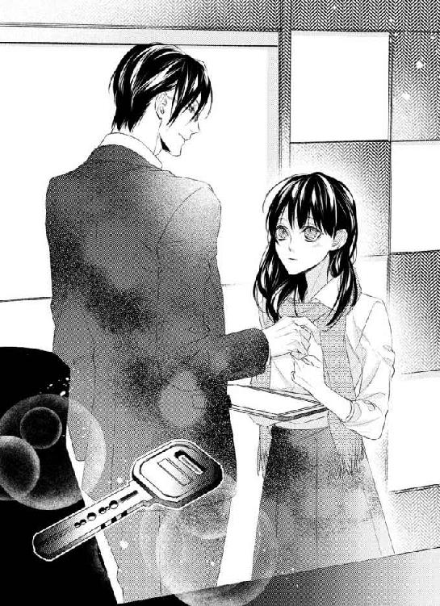
由良は、銀色のカギを握りしめた。
そして、タブレットと書類を強く握る。
自分のデスクへと戻って、それから銀色のカギをバッグの小さなポケットに入れる。
「ゆらっち、どうだった？」
優馬が声をかけて来た時、かなりびっくりして肩をびくっとさせた。
「あ、ごめん！ 驚かせた？」
「ううん、大丈夫......企画通ったみたいで、もっと企画書を簡潔明瞭に、って言われた」
笑顔をどうにか浮かべて言うと、優馬は声を出して笑った。
「その大事な企画書！ しわくちゃになってるじゃん！」
知らないうちに握りしめていたらしい。
「あ、ほんとだ。気をつけないとね」
どうにか笑顔を作ったが、変になっているかもしれない。
「ゆらっち、頑張れよ」
サムズアップされて、笑顔を向ける。
そうしてドキドキして、企画書の皺を伸ばした。
カギを渡された事。家で食事を、と言われた事。
おまけに企画が通ってしまって。
いろいろあり過ぎて、由良の頭はグルグルしていた。
はずみでしない。むしろ考えてするんだ。
その言葉はリフレインのように頭に響いていた。
５
携帯電話の番号くらい、上司なのだからわかっているのだろう。
ＳＭＳで送られてきたメール内容は、簡単なものだった。
『今日は七時過ぎになりそうです。カギを使って家の中に入っていて下さい』
ちょうど一色の家の前に着いた時に、そのメールが届いているのに気付いた。
一色の家は、一軒家。作りがマンションっぽくないと、泊まった翌朝目が覚めた時に思っていた。広い三和土がありガラガラ、と音を立てる玄関。これだけで、もうわかるようなものだが、とにかく外に出てみてびっくり、一軒家だったのだ。周りが背の高いマンションやビルだったので、余計に驚いたものだ。
多分カギは作り変えたのだろう。防犯性のある穴がポコポコと開いたカギだ。
家の周りにはグルッと白い壁で高めに囲いがしてある。玄関の部分だけ背の高い竹でできた囲いがあり、中が見えないようにしてある。ちょっとした庭には、小さな木が植えられていて。
日本の家という感じの平屋で、古民家のようだ。家の中は綺麗で、キッチンや壁などはリフォームしてある感じだ。
「都心に一戸建てって......」
周りは高層ビル。徒歩十分もかからない程度の、都内主要駅の近く。すごくアクセスが良くて、しかも家の横には駐車場がある。シャッターが閉めてあるからわからないが、きっと車が一台入っているのだろう。
「さすが部長職って感じかな......」
はぁ、と息を吐いて、家の前に立っているのも何なので、小さな鉄製の門を開けて中に入る。実際玄関の前に立ち、カギを取り出すと、それを使う気にはなれなくて。
「勝手に、入れないよ......」
玄関の前に座り込んで、それからため息。
あの夜は、こんな家だったという事を見たのに覚えていない。
それだけ、大嫌いな課長に飲まされたからだった。
☆
「君は、おとなしくていいねぇ、市木さん。可愛いよ」
言いながら腕を撫でられる。時々その指先が、胸の先を撫でるように触れたり、その側面を押したりする。
「私、トイレに、行きます」
このいやな課長にはいつも飲まされて、こうやって触られる事が多い。それは、由良が何も言わないからだろう。
「俺も一緒に行こうかなぁ」
本気で気持ち悪くて、立ち上がって足早にトイレへ行く。
トイレへ行ったあと、頭がクラクラしていた。量的にはそんなに飲んでいないし、アルコール度が低いのを飲んでいた。しかし、たいしてアルコールに強くない由良には効果覿面だった。
「ああ、もう、いつもどうして？」
由良は愚痴のように零した。いつも、横に座らせられ、身体を触られる。周りは助けようと注意する。でも、課長という肩書を武器にして、それを跳ね除ける。本当に最低な人だと、思うのだ。
今日は課長の送別会。彼は異動して一年もいなかった。デザイン事業部には合っていないと社員全員が言っていたし、何より女性社員へのセクハラが酷く、クレームがある。
そのせいか、元いた部署である、総務部の課長に戻る予定だ。
「由良！ 大丈夫!?」
駆けつけて、背中を撫でてくれたのは、同期の未來だった。
「もう、あいつ！ 部長が来ないのをいい事に！ 一色部長がいてくれたらこんな事ないのに......こんな日に、外せない会議なんて......どれくらいかかってるんだろう？」
「仕方ないよ、仕事だし。それに、もう、時間的にお開き、よね？」
酔い過ぎてクラクラしている。ため息さえ熱くてどうやって帰ろうか、と思う。
「まだ一時間しか経ってないから......由良、私の隣にいて。ね？」
頷いて、とりあえずトイレを出て行く事にする。
違う席に座れば、と思いながら元の場所に戻ると、一色が来ていた。
「あ、部長来てる。良かったね、由良！」
「うん......」
座敷の席には不似合いなほどの一色のスーツは、一目でいいものだとわかる。ブラックのスーツにブルーのストライプシャツ。襟だけ白いところがオシャレで、ネクタイは同じブルー系でまとめている。
そろえて脱いである綺麗なウィングチップの靴は、一色の靴だろう。
上着を脱いだ一色は、その下にベストを着ている。いつもカチッとした感じのスーツ姿。
憧れの彼を見るだけでドキドキするのに、目が合って笑みを向けられた。由良は慌てて赤い顔をしたまま頭を下げる。
そうして、課長の隣から未來の隣へと移動すると、課長は酒を持って由良の隣に再度座った。
「離れるなんて、酷いじゃない、市木さん」
そうして肩を抱いて来た。それから膝の間に手を入れた。
はっきり言って気持ち悪くて怖くて。グラスにビールを注がれて、飲むように言われる。
「課長、由良はもう結構飲んでますから」
未來が言ってくれたのだが、課長はフッと鼻で笑った。
「じゃあ、もっと飲ませてお持ち帰り、しちゃおうかなぁ。あと一週間だしねぇ、いい思い出欲しいよねぇ」
ビールをゆっくり飲む。ビールは好きじゃない。だって、苦いから。
「そんなちびちび飲むと、また注いじゃうよ？」
眉を寄せて、泣きそう、と思ってビールを一生懸命飲んだ。こんなのアルハラだし、セクハラだし、もういやだ、と心から思った。
「柴田課長、お疲れ様です。市木さん、飲み過ぎかな？ 顔が赤い」
テーブルを挟んで一色が目の前にいた。由良のグラスを取りあげ、ビールを空いているグラスへと捨てる。そうして課長の前にグラスを差し出した。
「僕にも注いでくれますか？ 柴田課長」
言われて渋々という感じに、一色のグラスにビールを注ぐ。由良のグラスだったそれは、すでに一色の物になってしまっている。
「柴田課長、八ヶ月間、デザイン事業部での勤務お疲れ様です。慣れない業務に、僕もフォローが上手くできずに申し訳なく思います。元の部署でも、頑張って下さい」
そう言って乾杯を促すので、課長もグラスを合わせた。
「みんなもお疲れ様です。あと少しだけど、楽しもう」
グラスを掲げるとみんな乾杯をする。
一色は容姿がいいだけではなく、カリスマもあると思う。みんなが、彼の方針や考えに賛同する。仕事に厳しい面もあるが、そこも高評価で。
「市木さん、宮部主任がビール飲みたそうだ。注ぎに行ったらどう？」
「勘弁ですよ、部長！」
「まだ飲めるだろ？ せっかくの飲み放題なのに」
笑いながらそう言うのを聞いて、由良はもう一度行きなさい、と言われた。
主任のいる場所は、課長から一番遠い場所。一色は、由良を逃がしてくれた。しかも、お茶を濁さないような言い方で。
逃げようと思えば、逃げられたと思う。きっと由良にも隙があったのだと、自己嫌悪。
上司に迷惑をかけてしまって、と思いながら由良は主任にビールを注ぎ、その周りの同僚達と話すのだった。
☆
同僚と話しながらも、チビチビ飲んで、それからさらに酔っ払って。
足元は何とか大丈夫なものの、結構なクラクラ具合だった。
「方向が一緒みたいだから、僕が送りますよ」
「そうなんですか？ じゃあ、由良、お願いします」
「来栖さんも気をつけて帰って。美人だから、襲われないように」
「嬉しいなぁ！ そう言って貰えて！」
「事実ですよ。じゃあ、また月曜日、会社で」
「はい！ お疲れ様です！」
話を聞きながら、一緒に帰るのは未來じゃないのか、と思った。じゃあ誰だろう、と座っている場所に沈んで行くと、よいしょ、と引き上げられた。
「すみません中目黒────まで」
行先を告げる声に聞き覚えがあって、中目黒なら由良と方向が一緒だ、と思う。
「ありがとうございます......すみません、私......」
「いいですよ。大丈夫ですか？ 市木さん」
部長の声だ、と思いながら返事をして、そのまましばし寝落ちてしまった。
次に意識をぼんやりと取り戻した時に、身体を揺さぶられる。でも夢心地で、目を擦った。
「歩けますか？」
「何とか......」
答えながら身体を支えるそれに気付いたのは、玄関を上がってリビングに着いた時だった。
「あれ......？」
ソファーに座らされているのに気付き、ここまでボーっとしてついて来たのだと思い出した。揺さぶったのは誰か、ここまで連れて来たのは誰か。
一瞬で気付いたのは、ブラックのスーツの、上着を脱ぐ後ろ姿を見たから。
「あ......一色、部長？」
「ん？ ああ、やっと意識を取り戻した？」
リビングから移動して、和風の引き戸をカラリと開けてどこかへ行ってしまう。酔った頭は、もちろんクリアじゃないが、どうしてここに来たのか、と思った。
考えているうちに先ほどの引き戸が開いて、ラフな格好の一色が姿を現す。ネイビーのＴシャツに、楽そうなアンクルカットのパンツ。スリッパを履いている足は裸足だった。
「あの......？」
「もう、十一時半だから、これからタクシーで帰るのもいいけど、深夜料金で高いでしょう。泊まって行きなさい。ただし、君のベッドはソコだけど」
ソファーを指さされ、首を振る。
「いや、あの、どうにか、帰りますので！ すみません！」
慌ててそう答えるけれど急に立ち上がると、めまいがした。きっと、酒のせいだろう。
一色の家に、泊まるなんて。そんな事できないと思った。
ドキドキし過ぎてそれどころではないし、由良は部下だ。泊まっていいわけない。
グルグル考えていると、目の前に水のペットボトル。受け取ると、由良の隣に座った一色は、自らもペットボトルのキャップをひねって、水を飲んだ。
「市木さん、かなり酔ってた。帰りたくないって泣いてたんだけど、覚えてない？」
そんな事を言ったような気がした。いや、確かに言ったのだ。
「タクシーの運転手もあの空気に困っていたな、きっと。僕は離れなさい、って言ったんだけど、君は抱きついて離れなくて、眠ってしまった」
「......すみません。困らせてしまって」
少し思い出した。一色は、きちんと言ったのだ。
『そんなに引っつかれると、困ります。その気がなかったら、早く、離れなさい』
一色に抱きしめて欲しい、と言ったのだ。セクハラをされて、いろんなところを触られて、すごくいやだった。男の人に嫌悪感をこれからも抱いてしまいそうなほど。
でも、近くにいたのは憧れの一色だった。だから、どうなってもいいですから、とバカな事を言った。
我ながら酒の勢いはすごい。あんな事を言えるのだから。
「水、飲みなさい。何だか呂律、回ってない」
「はい、ありがとうございます」
確かに酔っ払いらしい話し方になっている。どこまでも迷惑をかけて、思い出せば思い出すほど、バカな事ばかりしている最低女、と自己嫌悪。
言われた通りに水を飲んでいると、笑みを向けられドキドキする。
「布団持ってくる。ちょっと待ってなさい」
立ち上がる一色に、由良は首を振って口を開く。
「あの、大丈夫です。私、深夜料金かかっても帰ります。ソファー、汚したりしたらいけませんし......」
純粋にそう思って言った。もしかしたら、眠れなくて寝返りばかり打って、髪の毛が散らばったりするといけない。それに、もしも熟睡して、口から涎なんか出したら大変だ。この高そうなソファーが汚れてしまう。
一色がクスッと笑ったのが聞こえて、由良は申し訳なくてうつむいていた顔を上げた。
「汚すような事、するわけ？ そこで？」
言葉に詰まる。一色の声が、違って聞こえた。それに、その言い方が何だか引っかかるような。大人で、そういう事をするような感じに聞こえたのだ。
「いえ......ただ、これ以上ご迷惑は......」
さらにうつむきながら言うと、一色は手にしていたペットボトルをテーブルの上に置き、再度由良の隣に座った。
一色が隣に座る事なんて今までない事だった。一色の、いつも控えめなフレグランスの香りが、微かに鼻孔をくすぐる。それがドキドキを更に倍増し、お酒の効果も手伝い、由良の心臓は壊れそうだった。
「君は部下だし、迷惑だなんて思ってないですよ」
「いえ、すごく迷惑を、かけてます。タクシーの中で寝ちゃったり、帰りたくないとか言っちゃってますし......家に上げていただいて、お水も......だから帰った方が......」
酔いながらも恐縮して小さくなってしまう。酔っ払った頭は、まだ酩酊状態。しかも呂律が回っていない感じで、何だか恥ずかしい。
「そのままの状態で帰せませんよ。きちんと一人で帰れるか、わからないし」
一色が苦笑して由良を見る。こんなに近くで顔を見られた事がない。きっとお化粧だって剥がれているだろうから、耳にかけていた髪の毛を下ろして何度か手櫛で梳く。
「でも、あの、今はこうやって、起きてますから」
前髪に触れながら、緊張し呂律が回っていないながらも、言葉を出す。
帰った方がいい、と思うのに、上手く動けないのは一色が隣にいるせいだ。ああ、どうしよう、と思っていると隣でため息が聞こえた。
さらに申し訳ない気持ちが高まる。
「市木さんが帰りたくないって言ったように、僕も君を帰したくなかったんです」
「......え？」
小さく聞き返すと、一色が水を飲んだ。パチリと瞬きをしてしまったのは、水を飲む顎から首のラインが目に入ったから。いつもきっちりネクタイを締めているその辺りが、酷くセクシーに見える。
いつも未來が一色の首元が綺麗だと言っていて、それはよく知っているのだが、こんなに間近で見た事がないから、さらにドキドキして。もうきっと心臓は壊れるだろう。
「帰ったら一人だし、今日のいやな事きっと思い出す、って言ってた。僕は、思い出させたくないし、帰したくないと、思った」
一色は整った綺麗な目をしている。じっと見つめられると、まるで吸い込まれそうだ。こんなに見られるなんて思いもしない。
それに、一色はもう二度も帰したくない、という言葉を由良に言った。たいして美人でもない由良に言うセリフじゃないと思う。
「だって、あんなに触られて、私......男の人って、酷い、って思って」
何かの聞き間違いかも、と思いながら一色から目をそらして、髪の毛を耳にかける。さっき下ろしたのに、と思ってもう一度髪の毛を直した。
「......そうか。僕も男なんだけどな。こうやって傍にいるのは、いやかな？」
苦笑しながら一色が由良の髪の毛を耳にかけた。それにびっくりして、瞬きをして見上げる。
顔を上げると、また目が合って離せなくなる。
「そ、それは......わからない、っていうか......そんな事は、ないですけど」
一色は何だか由良をまるで女性として見ているようだ。髪の毛を耳にかけてくれたそこを、由良は手で触れる。まるで耳が心臓になったかのように熱く脈打っている感じだ。
「君はね、市木さん。家に来るかと聞いたら、行くと言ったんだ。だから、タクシーの運転手相手に居たたまれない気持ちを抱えながらも、家に上げたんです」
一色が由良を見つめている。近くにいたらこんなにも見惚れるのだと、いやというほど実感する。
ペットボトルを持つその手さえ、指が長くて綺麗な爪をしていて。
そんな一色が由良をじっと見ながら、口を開く。
「タクシーの中での事、あまり覚えてないんだな......帰さないと言ったのに。タクシーの運転手が何度も咳払いをしてた。降りる時、あまりイチャつかなくてよかったとか言われて」
少し声を出して笑った一色は、由良に視線を戻す。
瞬きをして、浅く息をする。大きく息ができないのは、胸が詰まっているせいだ。
綺麗な彼の目で見られると、胸が詰まるばかりか、掴まれたようになってしまう。顔が火照って熱くて、心臓は鳴りっぱなしで。
どうして一色は、由良をこんなにまるで、好きな人を見るような目で見るのだろう。絶対にありえないのに、一色が、こんな目で見るなんて。
なのに、期待をしてしまっている由良がいる。
「ここで寝るのがいやなら、ベッドでもいいです」
先ほどよりトーンが低い声だった。
何となく、身体に重みがずしっとかかるような、そんな声。お腹の底から心臓になったような、そんな感じが由良の中をめぐる。
返事ができない。瞬きをして彼を見上げると、綺麗な目に捉えられているようで目が、離せない。
ここで寝るのがいやなら、と言われて、首を振る。
何だかさっきから言葉が変だ。こんなのおかしい気がするのに、由良は思っている言葉と違う言葉を言った。
「迷惑じゃないですか？」
まるでベッドで寝る、と言ったような言葉だ。それでどうするのか、由良も大人なのでわからないわけじゃない。でも、一色と、なんてまだ信じられない。
「いいえ」
微笑む一色は、明らかに男の人だ。でも、由良が憧れてやまない男の人。
「今日の事、忘れたいです。いろんなところを触られて。男の人が本当にいやになりそうで」
「そうですか」
微かに笑って答える一色は、一度目を伏せて、それからまた由良を見る。
声はいつもより低いまま、でもその声を聞いていたい。一色は由良のペットボトルをやんわりと奪って、テーブルの上に置いた。
視線が、由良の足先から上へと動いて、距離が縮まった。
一色の、フレグランスの香りも近づいて、胸が痛いくらいに鳴る。
「どう、触られましたか？」
言いながら、一色の大きな手が由良の膝に置かれ、その手がスカートの裾を少しずつ上げながら、内腿へと這わせられる。
耳元で聞こえた声は、低いままにゆっくりした囁くような口調だった。一色の目を見ると、目が離せないようになってしまうのは、彼が由良をそういう目で見ているから。
あまりにも男の人の目で、由良のスカートに触れ、たくし上げていく。
「......っ、部長」
課長から触られた場所と同じところに、一色の手が触れている。
なのに嫌悪感ではなく、何か熱くこみ上げるものを感じる。一体これは何だ、と思う。
彼の顔が近づくと、ふわりと鼻孔をくすぐるいい匂いがした。先ほどから感じていたスパイシーな匂いが強くなった気がする。酒の効果でクラクラしていた由良は、さらにこの香りで心地よく酔いそうで。
由良の腰を撫でる体温にも、心臓が高鳴ってしまう。
「細い腰だ。ここ、触られましたか？」
そこは、何度も揉むように触られた。泣きそうな気持ちを思い出し、顔を歪ませながら頷く。
撫でていた大きな手が由良の腰を引き寄せる。身体が一色に寄りかかってしまい、顔を上げるとすぐ近くに綺麗な顔があった。
大きな手が頬を包んだのを感じ、綺麗な顔から目をそらす。そうすると、やんわりと顔を戻されて一色の目がこれ以上ないくらい間近にあった。彼の茶色の目が、瞬きをするのさえ見える。これ以上ないくらい、俳優でもこんなに整った顔はないと思うほどだ。
目蓋が震える。目を閉じるタイミングがわからない。きっとキスをされる、と思う。互いの唇がこれ以上ないくらい近づいたところで、一色が微かに笑って由良の目蓋に優しく触れた。
「目を閉じて」
言われるままに目を閉じる。そうすると唇を撫でる指を感じて、それから柔らかい感触が由良の唇に重なった。
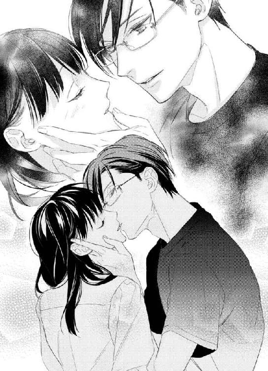
彼の唇が、由良の唇を啄ばむ。キスをするのは初めてで、それが一色だと思うと、心臓が壊れそうなくらいに高鳴る。
「......キス、初めてです」
由良の言葉に笑った彼は、さらに唇を啄ばむように重ねた。水音を立てるそれに、慣れないながらもついて行く。
「初めてのキスは、どうかな？」
唇を軽く重ねたまま言われ、目を開けると軽く唇を吸われた。
「......柔らかい、です」
言ったあと、顔がカァッと熱くなってしまう。何を言っているんだ、と思いながら顔をうつむける。温かい手が由良の頬を包み、顔を上へ向けた。
「柔らかいだけ？」
唇をゆっくりと重ねるのに合わせて目を閉じる。優しく唇を啄ばみ、軽く吸うようなキスから少しずつ深いものに変わって行く。
「......っ！」
息ができなくて唇を開けて息を吸う。そうするとその唇が開いた隙間に、柔らかく湿ったものが唇の中に入って来る。舌なのだとわかったのは、しばらくしてから。
こんなキス、怖くて慣れなくて、どうしたらいいかわからない。絡む舌に答えられない。
唇が角度を変える時に、どうにか息を吸った。でも足りなくて、心臓も高鳴っているからか、由良の息はすぐに上がってしまう。
「ふ......っあ」
息を吸う合間に信じられないほど甘い声が出た。怖いながらもキスが気持ち良くて、彼の舌にたどたどしく答える由良がいる。
身体から力が抜けて、ソファーに崩れ落ちそうになると同時に、唇も離れる。手をついたのに、その手に力が入らなくてソファーに仰向けになってしまった。
由良の息は上がっていて、一度息をのんだあと、唇を少しだけ舐めると、そこは濡れていた。一色とのキスでそうなったのだと思うと、身体の奥が変に脈打ってしまう。
一色もまた、少し息が上がっているようだ。彼を見ると、いつもと違って色っぽい感じがする。髪の毛をかき上げる仕草まで。いつもはきっちりスーツを着た、ストイックでクールな人なのに、今日は熱さを感じる。
「帰りたいですか？ ソファーがいやなら、ベッドで寝ますか？」
前髪をかき分けられながら、そう言われた。
由良の腰に触れる手は温かく、優しい。時々内腿を撫でるその手も、すごく優しくて温かい。
「帰りたくない、です」
「そうですか」
「......ベッドで寝ても、いいですか？」
「もちろん、僕もそうしたい」
頬を撫でられながらキスをする。そうしているうちに、由良の身体が浮き上がった。抱き上げられるのは初めてで怖くなり、一色の肩にしがみついてしまう。
帰りたくない、と言ってしまった。
こんな事、絶対にないと思う。
由良に、起きるなんてないありえない。
心の中でそう言っているうちに、背中にベッドの感触。目を開けると、一色の顔が近くにあって、心臓が跳ね上がる。
彼の手が、由良のブラウスのボタンを外して行く。すべてを外すと、前を開いて首筋に手を這わす。身体が自然と硬くなり、震える。
「何もしなくていい。そのまま寝てなさい」
一色の身体が覆いかぶさる。その重みに、全身が心臓になったみたいだ。
「あ......っ」
さらに身体を硬くすると、耳元でクスッと笑い声。
「何もしなくていいけど、できれば、力を抜いて。優しくするから」
優しくするから、という声が響いて唇が開く。
首筋に埋められた一色の顔。それが徐々に下がって行く。背中に手を回され、胸を覆うものが緩くなる。
彼の温かい手が、胸を覆っていた下着を上へと押し上げて。
顔を上げた彼と目が合う。
大きく息を吸うと、その視線がゆっくりと下へとさがり。
誰も触れた事がない、由良の胸が、優しく唇に飲み込まれて行った。
６
由良は痩せている方だ。体型と同じく、胸が小さい。まったくないわけではないが、仰向けになると胸のふくらみが小さくなる。
送別会で課長に触れられた胸は、今、別の男の人の唇に飲み込まれている。
その人は、由良のささやかな胸を舌で舐めて、先端を吸った。
感じた事のない、何とも言えないズキンとするようなものが、下腹部を這い上って来る感じだ。
「あ......一色、部長......っ」
スカートのホックの部分をはじくように外されると、ファスナーを引き下ろされ、脱がされて行く。膝のところまで下げられたかと思ったら、胸にキスをし、乳房からゆっくりと唇が離れて彼が起き上がる。
「......っ！」
彼がスカートを完全に脱がせて、由良の膝に口づけるのを見た。片方の膝に口づけをしたあとは、その反対の膝にも同じようにキスをする。膝の内側にキスをしたところで、息をのむと一色と目が合った。
「ぁ......」
小さく声を出すと、由良を見つめながら唇が膝から上へとキスをし、這い上がって来る。彼の唇は由良の肌を食むようにキスをした。その間に大きな手は由良の腰を撫でる。腰を撫でていたかと思うと、再び由良の胸を揉む。
一色は、それらの行為をすべて由良を見ながら、そうするのだ。心臓が高鳴ってしょうがないのに、唇が足の付け根にキスをして、軽く歯を立てる。
ゆっくりとキスをされながら肌を堪能しているように見える。どうしてこんなに愛しげにしてくれるのだろう。時々一色の息遣いも聞こえ、それが少し忙しない物だと気付き、またさらに心臓が持たないほど、跳ね上がった。
由良は、大人の男の人が、服を脱がせこんな事をするなんて、知らなかった。知識ではあるけれど、実際にされるのと知るのは違うのだ。
「部長......ダメ、です」
「何がですか？」
微かに笑って一色は由良のショーツに手を通し、骨盤を撫でた。
ブラウスとブラジャーはかろうじて由良の身体に身に着けられている。しかし、スカートを脱がせて、ショーツを脱がせたらほぼ裸になってしまう。
「それを脱いだら、私......」
言いながら顔をそらすと、一色の顔が近づき、キスをされる。すぐに深いキスになり、由良はついて行くのに必死だった。だから意識がそれたのだが、大きな手が由良のショーツの中に入り、足の間を覆うようにして撫でるのを止められなかった。
「んん......っ」
自分でも触れた事のない場所に、一色の手が触れている。何度も手が足の間を行き来して、時々指でソコの尖った部分を撫でた。そうすると身体が跳ねるように反応して、自分の身体じゃないみたいになる。
撫でているだけかと思うと、尖った部分を指先で摘まんだ。
「あっ」
喘ぐように息をすると、ショーツの中から手を出し、布の上から中心を撫でるように触れる。そうすると由良の下着が濡れた音を立てて、恥ずかしいくらいだった。
「は......っ」
耐え切れずに顔を横に向けてキスを自分から解く。そうすると一色の濡れた唇が耳を食み、その後ろを舌が撫で上げるように舐められた。こみ上げるような、震えるような感覚が、身体に広がって行く。
声にならないような声が出て、広い背中を覆うシャツを掴んだ。喘ぐように息をすると、頬にキスをされながら、大きな手が胸を覆う。その間も、足の間に這わせられた手は、由良のソコ全部を揉むように撫でるように、動いていた。
「もう、ダメです......あ......怖い」
由良の胸を撫でる手は温かくて大きくて。抱きしめる身体は、大きくて。
「何が怖い？」
大きく息をすると、ささやかな胸が上下するのが見えて、恥ずかしい。
おまけにそんなに動いてないのに、息が忙しなくなっている。
「恥ずかしくて、私......何だか、変です」
何を言っているんだ、と思いながら、息を整える。息が上がって、上手く言えない。
「身体が、震えるし、お腹のところ、何だかズキズキするような......」
「それは感じてるんだよ、市木さん。怖くない、普通だから」
一色から優しく耳元で言われて、そうなのか、と納得したあと、もっと恥ずかしい気持ちになる。一色を心もとない目で見上げると、唇に小さなキスをされる。
「そのまま、僕に抱かれていればいい」
その言葉に顔が熱くなる。由良の表情が変わったのが可笑しかったのか、クスリと笑って、頬を撫でたあとキスをして、頬を撫でた手は由良の胸へとまた移動する。
小さな胸が大きな手に揉まれている。きっと、その手には物足りないだろう。もう少し胸が大きかったら、一色の手に少しは、と思う気持ちがないわけではない。
でも、その気持ちを消すかのように、由良の足の間を撫でていた指が、由良の身体の中へ入ってくる。
「は......っあ！」
一つだけ入ってきた指は、由良の身体の隙間をゆるゆると動き出した。痛くはないけれど、そういう事をされると、身体のズキズキした感じが強くなって、由良はついて行けない。なのに胸を揉み、キスをされ、一色の唇が胸を食むと堪らなくなる。
そうしているうちに、指が増えたので由良の中の圧迫感が強くなる。それどころか、濡れた音が耳に響いて来て、身体の反応だとわかる。
「こんなの、や......指、抜いて下さ......っ」
上手く言えなかったのは、指が由良の中を撫でたからだ。腰がビクリと反応するのを止められなかった。
「初めてなら、指で少しは慣らさないと」
かすれたような低い声が、息を吐くようにそう言った。
「でも......っ、変な音聞こえて」
泣きそう、と思いながら言うと、指が深く入り、中をぐっと押し上げる。
「あ......っ！」
ズキズキ疼く感じが強くなり、体が震える。
「こうやって反応して濡らしているのに、いやだとか言われても、僕はやめませんよ？」
一色の手がショーツを性急に脱がせる。ソコを隠すものがなくなって、彼の目に晒されているだろう。なのに、さらに見えるように開かされ、指が何度も動いて、その動きが少し早くなる。唇がまた胸へと寄せられ、そこを撫でるように舐めた。
「ふ......っん」
信じられない甘い声が出る。由良の中を指がグッと押すと、腰が震えてこみ上げるような感覚が、一杯になって、何も考えられなくなる。息を吸う時に、さらに甘い声が出て息を詰める。
腰が反るように動いて、頭が真っ白になるような、真っ赤になるような感覚。
忙しない息だけが耳に聞こえて、重ねられた唇がリアルに感じた。
閉じていた目を開けると、身体を起こした一色がシャツを脱ぐところだった。初めて見る大人の男の人の身体は、筋肉がほどよくついた雑誌のモデルのような、綺麗な身体だった。
一色は、やっぱり全てにおいて、ベストな人だとわかる。顔立ちが整っているだけではなく、身体も整っている。身長が高く、仕事もできて、部長という役職についていて。
こんなに素敵な人、見た事がない。
そんな人が、由良の膝を開き、足の間に自分の身体を入れる。目が離せなくて、困るくらい。どうしてこの人とこんな事を、と思う気持ちはあっても、それが考えられない。
ベッドの傍にある小さな棚の引き出しに手を伸ばし、そこから何かを取り出すのをボーっと見ていた。まだ身体がピリピリしたように、先ほどの感覚が残っていて、そこで由良は目を閉じて大きく息を吐く。
膝を撫でられ、足を開かれたところで目を開けると、一色の身体が由良の腰に近づく。
「力を抜いていて」
力なんて抜けている。でも、今から何をされるかなんて、予想できなかった。
お酒の効果と、先ほどの心地よくて痛いような感覚に、身体が支配されているから。
だから、由良の隙間に硬いモノが当たり、それが身体の中に入って来るとは思わなくて。
「あ......？」
硬いモノは、一色の身体の一部。確かな質量で、由良の中を埋めて行くのは、一色自身。
初めて受け入れる男性のそれは、狭い由良の中をゆっくりと侵入して来る。
近くにあった一色の腕を強く握り、爪を立てた。
「ん......っい」
痛い、とただ思う。でもそれを口に出したらいけない気がした。
由良は彼に抱かれる事を了承していたし、よくわからないながらも、体温を気持ちいいと思っていた。それに、一色という憧れの存在とこんな事になるのは、もうこれきりだと思っているから。
一回でもいいから、初めてだから。
そう思いながら一色を受け入れる。大きな彼のモノは、由良の中をこれ以上ないくらいいっぱいにした。揺すりながら腰が由良の身体に当たるのを感じて、全てを受け入れたのだとわかる。
「痛い？」
目に涙を溜めていたが、泣きたくなかったし、そうしたら迷惑だと思っていた。
とりあえず、痛いのは本当なので頷くと、一色は微笑んだ。
由良は、力を抜くように息を吐いて、眉を寄せ目を閉じる。
「我慢してる？」
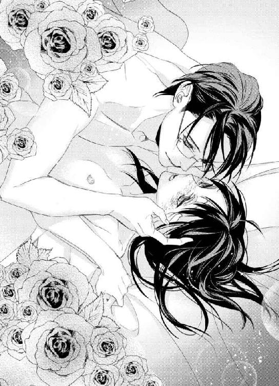
それには答えずに、詰めた息を吐くと、大きな手が頬を撫でた。
瞬きをして目を開けると、目の前に一色の整った顔があり、唇を食むようにキスをされる。
「これ以上ないくらいに狭くて、君の中、気持ちいい」
唇の上で、はぁ、と息を吐き、低い声で言われる。その様子に、由良の腰は疼いた。痛くてたまらないのに、緩く腰を揺するそれに、感じている気がする。
「君は、こうだったのか、市木由良」
少しかすれた低い声。いつもの、硬いような声と違う声だ。
その彼の何かに耐えるような表情も、整った顔をしているから、すごく色っぽく見えて。官能的だった。
「君を、抱いてよかった」
その言葉に腰が震える。目を一瞬細めた一色が、目を閉じて笑みを浮かべた。
「少しでも感じているなら、動いてもいいかな？」
由良は答えられず、一色の腕を撫でた。そうすると、そこがほんの少し傷ついている事がわかり、その痕から爪で傷つけてしまったのだとわかる。
「腕が......すみません。痛く、ないですか？」
由良の言葉に、可笑しそうに笑った一色は、由良の唇に小さなキスを落とした。
「痛くありませんよ」
そうして腰が揺すられる。ゆっくりと由良の中の一色が動く。
硬くて大きいモノが由良の中を愛しているうちに、腰が震えるような感覚がよみがえって来る。
「いいね、初めてで感じてるみたいだ。僕はもっと、動いてもいいかな？」
奥をグッと突かれた時、甘い声が出る。
「あ......っ」
その声を出したあとは、一色の腰の動きが早くなって行く。腰を動かしながら胸への愛撫を再開した。小さな胸が大きな手に揉まれて、乳房の先端がピンと張って感じる。
ただお互いの忙しない息を感じ、小さく甘い声を上げるのを抑えきれずに。
一色の言う通り、何もしないで彼の体温に抱かれ続けた。
初めて由良の身体を愛してくれた人は、優しくしてくれた。
これ以上ないくらいに。
☆
玄関の前に座り込みながら顔を赤くして、大きくため息をつく。
一昨日の出来事だ。由良の中に彼が入って、愛し合ったのは。
まだその感覚は残っていて、痛みもまた残っている事から、夢ではないのだとわかる。
そして今のこの状態も、夢ではない。
銀色のカギを見つめながら、首を振って立ちあがる。赤いポストは昔からあるようなデザインだが、綺麗だった。きっと手入れしてあるのだろう。そこにカギを入れて、由良は一色の家を後にしようと思った。
いつの間にか雨が降っていた。傘を持っていない由良は、家の敷地から出ようと小走りになる。小さな鉄製の門までたどり着こうとするところで、タイミングがいいのか、傘を差した一色がいた。
しばらく止まって、一色を見ていた。彼は門をカシャン、と開けて中に入って来る。
「市木さん、濡れますよ」
微笑んだ一色を見て、由良はうつむく。傘を差し掛けられて、背を軽く押された。
「中に入ろう。風邪を引く」
玄関前について、傘をたたむのを見ながら、口を開く。
「私、帰ろうと思ってまして......」
「僕が遅かったから？ 申し訳なかったね」
「そうではなくて......」
傘の水を切りながら、手を差し出された。
「カギはどこかな？」
「......ポスト、に」
由良の言葉にため息をついてポストを開けると、玄関のカギを開ける。
「話をしたいんですよ。帰らないで、市木さん」
言いながら引き戸を開けて、由良の手を軽く引く。強引ではなく、優しいやり方だった。だからか、由良は玄関の中に一歩足を踏み入れてしまった。玄関が閉められて、カギをかけられる。
靴を脱いで家に上がるのを見ていると、一色が手を差し伸べる。
「上がって下さい、市木さん」
「......はい」
パンプスを脱いで、家に上がると一色は浴室の引き戸を開いて、タオルを出して手渡される。
「そんなに濡れてなくてよかった」
また手を引かれてリビングへ。ソファーを指さして、一色が微笑んだ。
「座って待っていて。急いで帰ったから、ありあわせのものになるけど、すぐ作るから」
そう言って、スーツの上着を脱ぎながらこの前と同じように、引き戸を開けて行ってしまう。しばらくして戻ってきた一色は、一昨日と違うＴシャツに、グレーのスウェットパンツ。
アンクルカットのパンツよりもより足の長さが強調されている。
「あの、食事なんて、大丈夫ですから」
「お腹空いてない？ 僕はすごく空いてるから、食べたいんだけど」
でも作って貰うのは、と思う。というより男性の一色が料理ができるのは知っていても、黙って見ているわけにはいかない気がする。
「じゃあ、お手伝いします、部長」
「いや、今日は座ってて。今度手伝ってくれる？ 本当に簡単なんだ。冷凍しているものを解凍して焼いたりするだけだから」
言いながら手早く手を動かすのを見る。無洗米なのだろう、鍋に米を入れてセットしたあと、火にかける。冷凍庫から取り出したのは、魚らしかった。
「塩サバ食べれる？」
「はい」
「よかった」
それも手早くグリルで焼く間に、お米がカタカタ言い出したので弱火にしている。そうやって炊くと早くでき上がるのを由良も知っていた。よく由良も、早くご飯を食べたい時にする手だ。蒸らす時間があるといいだろうが、それよりも早くしたい時は五分程度蒸らすくらい。
一色が手馴れているのを見て、こういう事が好きなのかな？ と思う。でも、そういう風に見えない。会社で見る一色は、いつもスマートに仕事をこなし、部下に指示を出すのも的確な人なのだ。こんな風に自炊する姿は新鮮だ。
あっという間に食事ができ上がったのを見て、由良は面食らう。
「三十分経ってませんよ？」
「待たせているから。もっと待っていいんだったら、手の込んだものができるけど。だから味噌汁は今日の朝作ったもので我慢して」
目の前には温かいご飯と、塩サバをカリッと焼いたもの。味噌汁と、簡単な野菜炒め。完璧な定食のような感じで箸を添えられてしまい、何もしないのが悪かったように思える。
「手際いいんですね」
「一人が長いから、必要に駆られてね、覚えました。両親もいないし、兄弟もいなくてね。二十歳からずっと、この暮らしですよ」
手を合わせて、いただきます、と言いながら箸を手に取るのを見て、慌てて由良も同じようにした。
「ずっと、一人なんですか？ 二十歳の時から？」
「そうですよ。父と母は海外の仕事から日本へ帰ってくる時に、飛行機ごと行方不明です。それからいろんな手続きには苦労したけど、どうにか大学を卒業して、今の会社にいるというわけ。周りに頼る大人もいなくてね。成人していたのが救いだったけど、心が一気に老けました」
カリッと焼けた塩サバは美味しい。ご飯と合うのだが、箸を止めてしまう。
「本当に、それからずっと一人なんですか？」
「そうですね」
「寂しかったり、悲しかったり、したでしょう？」
由良だったら、きっと泣き暮らすだろう。いきなり一人になり、周りに頼る人がいなくなってしまったら。
この人は部長で上司だけど、思わず言ってしまう。
「それなりに、慰めてくれる人はいたので」
「そうなんですね。良かったです。誰かがいたのなら、ホッとしました」
味噌汁を飲む動きが止まって、一色がむせる。
「大丈夫ですか？ 部長」
味噌汁を置いて、何度か咳をしたあと、傍に置いてあった水を飲んで一息吐く。
「何だか、前から思っていたけど、君は不思議なところがあるな」
「え？ 不思議って......私、そんなに、変わった子ではないです......けど」
不思議と言われてさすがに、むうっ、と思いながら言うと彼は笑って、由良を見る。
「そういう純粋なところが、不思議だな、と思うだけですよ。悪気はないです。そんな君を可愛いと思ってましたからね」
言葉に心臓が跳ね上がった。だって、可愛いと思ってました、と一色が言ったのだ。
地味な顔立ちの由良が、そんな事を言われるなんてなかったのだから。
それに、ここまで近くにいて、ここまで一色と話す事なんて、今までなかった。本当にいいのだろうか、ここにいて、こんな風に話をして、と思う。味噌汁を飲みながら、眉を下げて一色を見ると、彼はもう食事を終えるところだった。
だから、由良も食事のスピードをアップする。
「ゆっくりどうぞ」
食器をまとめて立ち上がるのを見て、あ、と声を出す。
「私が、洗います。洗い物は、得意ですから」
「それより、いつも通り食べなさい。君が遅いのは、知っていますよ」
由良は食べるのがゆっくりな方。みんな食べ終わっているのに、由良は半分近くいつも残っているのだ。
ぴしゃりと言われて申し訳ない、と思いながらご飯も魚も味噌汁も、いつも通り食べる。分量もちょうどよくて、しかも和食は久しぶりだったから美味しい。そう言えば、この間は勝手に帰ったが、その時用意されていたご飯も、和食だった。
ご飯を食べるのが遅いのを知っているなんて、恥ずかしい。頑張って早く食べて、食器をまとめてキッチンへと思って重ねていると、金属音が聞こえた。視線を向けると、次にカシュッと音を出しながら、タバコに火をつける一色の姿。
食器をキッチンに持って行くと、一色が煙を吐いた。
「そこに置いていていいよ」
「はい......あの、タバコ、吸うんですね」
「出勤する前と、帰った時、それから寝る前に一本ずつね。匂うから、離れてなさい」
堂に入ったタバコに火をつける仕草と、吸う仕草に見入ってしまう。長い指にタバコを挟むそれも、その匂いも、何だか大人の男の人を感じる。
キッチンに身体をもたれさせて、目を伏せてタバコを咥えて考えているような姿。銀色のジッポーで火をつける時の慣れた手つき。ジッポーを置く時の手......一連の動作が綺麗に見えた。まるで由良の知らない男の人のようだ。
「でも、そのタバコ、いい匂いです。バニラみたいな感じ」
「でもタバコなので、匂いが移りますよ？」
人差し指と中指で挟んでタバコを見せる仕草も、何だか素敵だ。苦笑しながら言う、その表情も。
「そうですね、髪の毛は洗わないと、タバコの匂い取れません」
「そう、風呂に入らないとね」
にこりと笑ったその顔は、由良が好きな顔。クールで端整な顔だけど、笑顔になると優しくなるから好きだ。
「部長はいつも、お風呂に入って出勤ですか？」
タバコの匂いと言うけれど、一色からはいつもそんな匂いはしない。
「いつもタバコの匂いしなくて。いい匂いがします。すごく、何だかスパイシーだけど、甘いような、フッと感じるような......」
由良を見て苦笑した一色は、少し困ったような顔をしてタバコを吸った。
「いつも朝っぱらから風呂に入ってないよ」
顔を横に向け、由良にかからないように煙を吐いたあと、近くにある灰皿にタバコを押しつける。そうして手に取った、小さなスプレーが由良に向かって吹きつけられた。しかも頭からかけられて、それから少しだけ服にも吹きつけられた。
「あ......」
パチパチ瞬きをして、この匂いは、と一色を見上げる。由良と同じようにスプレーをするのを見て、そのスプレーの中身がいつもの一色の匂いだとわかった。
「原液を少し薄めて使ってます。好きですか？ これ」
「はい、すごく」
笑みを向けて返事をして、こんなに近くにいる一色を見て我に返る。
同じ匂いを由良に吹きつけて、こんなに近くで話すような人ではないのだ。誰もが憧れる素敵な上司で、美人だと有名な社員が告白したのだが振られたという話だってある。その社員は由良から見ても、誰から見ても美人だった。
『あんなに綺麗なのに、何で振られたんだろう？ 性格もいいって話なのにな』
同期の高崎優馬がため息をつきながらそう言ったのを覚えている。男の人の目から見ても、その彼女は美人だという事だ。
なのに、美人でもない由良である。仕事もそんなにできるタイプではなく、いつも異動届を提出しているが、なかなか異動できなくて。デザイン事業部で頑張っているけれど、華やかな部署は合わない気がしている。
「ご飯、ごちそうさまでした。すみません、本当に」
いろんな事を少し反芻しながら、気後れして由良は一色と少し距離を置こうとする。が、逆に腰を引き寄せられてしまった。
「この前も思ったけど、細い腰ですね」
片方の腕が引き寄せていたかと思うと、もう片方の手も由良の腰に巻きついて、由良は一色の腕の中にすっぽりと収まった。
正面から一色に抱きしめられて、身体が密着している。
「髪から、少しタバコの匂いがする」
髪に触れて、一色はそこに唇を寄せた。心臓が跳ねる。
「あの......？」
赤い顔をしている由良にクスッと笑うと、耳元で囁かれた。
「洗って行きますか？ フレグランスだけじゃ、匂いが取れない」
髪の毛は洗わないと、と言った由良の言葉をからかうような甘い言葉だった。
「それは......っ」
焦って声を出すと、耳の後ろを彼の指が撫でる。
「冗談です」
顔が近づき、目蓋が震える。唇が、由良の唇にゆっくりと重なり、啄ばむように唇を吸われる。そうしたかと思ったら下唇を挟むようにして、今度は上唇も同じようにされて。少し苦いタバコの味が、由良の唇に感じる。
身体に巻きついた手がゆっくりと由良の腰を撫でて、甘い声が出そうになる。
唇の開いた隙間から、ゆっくりと温かい彼の舌が入って来る。舌を絡めると、タバコの味が先ほどよりもまして、一色とキスをしているのだとさらに実感して。
「ん......っふ」
とうとう甘い声が鼻から出てしまう。恥ずかしい気持ちがあるのに、やめてくれないキスに多分身体は感じていた。一色のシャツを握って、腰を撫でる温かい手が心地よく感じる。
ゆっくりと唇を離すと、唇が濡れているのがわかる。それを拭うように、水音を立てて唇を吸われ、キスが終わる。
いつの間にか、彼に寄りかかるように背伸びをしていた。少し身体を離し、一色を見上げると、優しい目で由良を見ていた。
「魚の味がした」
笑みを浮かべながらそう言うのを聞いて、カァッと顔が熱くなる。
歯磨きもしていないのだから、それは当たり前だ。さっきまで魚の骨と格闘しながら食べていたのだから。
慌てて口元を隠すと、その手を取られる。
「すみませ......っ」
謝る言葉をのみ込むように、また軽く音を立ててキスをする。
「可愛いね、君は」
頬を撫でられて、その反対の頬にキスをされる。
こんな事をされる自分ではないはずなのに、という思いが強くて。
でもドキドキする心も、惹かれる心もあった。
一色の料理ができる意外な顔も、タバコを吸うという知らなかった顔も。食べる仕草も、タバコを吸う仕草も、ずっと見ていたいと思えるほど、由良は心惹かれている。
でも、どうしてこんな事をするのだろう、と眉を下げる。
「どうして、こんな事、するんですか？」
「どうして？ ......君は誤解しているよね？ 市木さん」
「誤解？」
何の誤解だ？ と思っていると、背中にも手を回されて、一色の腕の中に閉じ込められる。身を震わせて、身体を預けた。
「迷惑ではないし、謝る事もない。かわいそうだと思ってもいない。好きな人がどうなってもいいと言って、腕に落ちて来て、何もせずにはいられなかった」
目を見開いて、一色を見上げる。そうすると、彼は微笑んで由良の頭を撫でた。
「部下だからって、我慢していたけど。欲しいので、しょうがなかった。きちんとこの事を言うつもりだったのに、君は一昨日、帰ってしまって。でもいろいろ考えて、頭を巡らせて、やっぱり君が欲しいと思ってね」
頭を撫でていた手が、頬を撫でる。
「先に身体を抱いて、申し訳なく思っている。でも、君がもし僕を少しでも好きなら、付き合ってくれませんか？」
夢だと思えるほどの言葉。本当に夢なんじゃないかと思うのだが、由良を抱く一色の身体は温かい。金曜の夜感じた身体の温かさと同じだ。
その体温で温められた一色の香りにクラクラする。ずっとこうしていたい気持ちになるような、そんな匂いだ。
「君の身体、最高に気持ち良かった。市木由良はこんな身体なのか、って年甲斐もなく堪能したよ。好きな人の身体は、一番だと思った」
痩せていて、胸もない由良の身体は面白味もないと思う。
それでいて、本当に由良は綺麗でもなくて、凡庸な女で。
一色のように仕事もできて、容姿が良くて、優秀な人が惹かれるような女ではないのだ。
「わ、私の、どこが、そんなにいいのか、わかりません......」
「教えて欲しい？」
一色が笑って、由良の背中を撫でた。頷くと、笑みを浮かべて言った。
「それは、ゆっくり教えます。付き合って、くれませんか？」
ここで返事をしたら、由良は一色の彼女、という立場になる。こんな自分が、と思うが一色の言葉を信じるなら、彼女になっていいという事だ。
一色はいい人だ。どんな人にも優しく、時には厳しい。それが由良には眩しく映る。
返事をしていいのかと、迷いがあった。でも由良は、一色が好きだった。ずっと見ていた人が、付き合ってくれませんか、と言っている。
「はい」
由良は目を閉じてうつむいて、身体を縮める。返事をした自分が信じられないが、ほんの少し、自分に正直になりたいと思った。
「目を開けて、僕を見て」
言われた通り、目を開けて一色を見ると、微笑んだ。
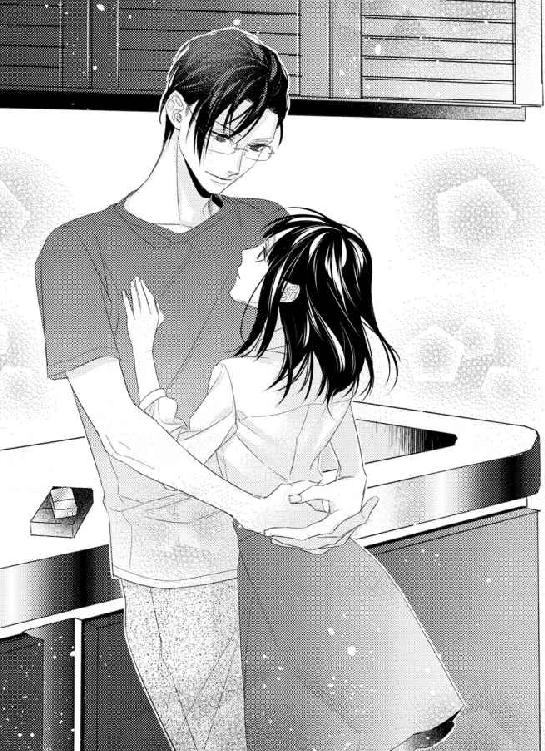
「僕は君の、その優しい黒い目が、好きなんです。笑ったら、もっと好きです」
そうして一色はキスをした。
軽くキスをしたあと、由良の目蓋にキスをする。
「これからは傍で、笑って、由良」
初めて名前で呼ばれて、傍で笑ってと言われて、どうしたらいいかわからない。
一色の気持ちは本当なのか。
でも本当だといいと思いながら、由良は一色の腕に抱かれて深いキスをされるのだった。
７
────付き合う事になって、四日経った。
会社に行くのはいつもの事で、今まで仕事の事しか考えなくて、いつもあれしてこれして、と組み立てながら電車に乗るのが常だった。それは、由良の仕事のスピードが遅いからだ。
でも、最近はそれに加えて、他の事も考えるようになった。
「市木さん、却下です」
「え？ あ、すみません。デザイナーの選出が悪かったですか？ それとも、企画書自体が......？」
一回で通るとは思っていなかったけれど、やはり返されると若干怯んでしまう。
「両方です。女性デザイナーだけ、とあるけどその理由がわかりません。どこを焦点に置いているのかわからない。女性をターゲットに集客するつもりですか？ もしそうなら、もっと君が見て欲しいと思う物を置き、理想の部屋作りをし、それらを配置する楽しさを連想させなければいけません。そう思っていても書いていないだけで、そうするつもりなのかな？」
一気に言われて、由良はメモを持って来なかった事を後悔した。一応、企画書を持って行った時点で、写真も必要だと思い、タブレットＰＣを持っていたけれど。
「すみません部長。部長の言う通りで、例えばこんな感じで、と思って写真を......これです」
タブレットを差し出すと、部長である彼、一色が受け取った。
写真を見て、それからすぐにタブレットを返される。
「企画書は、そのまま企画に使えるように、と僕はいつも言っています。その方が、もう一度作り直さなくていいし、楽だからです。写真も添付して、もっと簡潔にまとめましょう。デザイン事業部はほぼ独立したような部署ですが、他の部署とも連携できるように、というのを忘れないで下さい。この企画が、他の部署に役立つ事も、あるんですよ」
パーテーションで区切られたその場所で、優しい言葉だが少々厳しい指導もされてしまった。由良は一気に仕事モードになった。メモを持って来なかったが、これからの改善点や企画書の作成の直し、今後すべき事の手順を頭に巡らせる。
「作り直します。また、提出します」
「大幅に作り直す必要はないから、月曜日に持って来てくれるかな？」
「はい」
由良の作った企画書を受け取ろうとすると、一色が指先に力を入れてすぐに渡されなかった。
「今度は全部、タブレットに入れて持って来なさい。君は書面の方が得意みたいだけど、上に提出する時は、全部データ化する必要があるから」
最近の企画書やその他の書類などはすべてがデータ化されており、いつでもパソコンがあれば取り出せるようにしてある。書面で一応作成して、という社員も多くいるが、提出する時はほとんどパソコンデータであり、タブレットで見られるようにしていた。
「あ......はい、そうですね。すみません」
指摘されて、確かにそうだと心の中で省みながら頷く。
そうして、書面で用意した由良の企画書がようやく渡されて、一色が由良に笑みを向けた。
「市木さん、これも」
そうして渡されたのは小さな二つ折りのメモ。首を傾げてそれを開くと、とある場所と時間が書いてある。顔を上げると、一色が手を差し出した。
「覚えました？」
こくこくと頷くと、それ下さい、と言ったのでメモを渡すと、即座にシュレッダー。
「では、待ってます」
これは、デートのお誘いだとすぐにわからなかった。待ってます、と言われてしばらくして、やっとわかった。
「あ、はい！」
「じゃあ、仕事に戻って。企画書は早めにね」
「は、はい」
頭を下げて、パーテーションの中から出る。さっきまで厳しい事を言われたのに、その次にはデートに誘われてしまった。
社内では、今まで仕事の事しか考えていなかった由良だ。もちろん、同僚と話す時や、同期の未來と話す時は他の事を考えるけれど。でも、ほんの些細な事だったのだと今は思う。
しかも、部長の一色から誘われていて、この前の付き合って欲しいというその言葉さえ、まだ信じられない出来事だというのに。
「由良、企画書どうだった？」
不意に未來から声をかけられ、ちょっとびっくりした。別の事を考えていたから。
「あ、う、うん、やり直し。タブレットに入れて持って来て、って言われちゃった」
「そっかぁ。一色部長、企画には手を抜かないもんね。言い方穏やかだけど厳しいっていうか、でも、いいよね？ 的確でシビレル感じ」
未來は何度か規模は小さいながらも、企画を成功させている。もちろん同期の優馬もそうだ。でも、由良だけは、彼らを手伝う立場に満足していた。もちろん、主任などからは由良ももっと積極性を、と言われるのだが。由良にしてみれば、手伝う方が性に合っている。営業に関しても誰かのお供くらいがちょうどいい。
消極的な自分だから、初めての企画に緊張する。
でも、それ以上に誘われた事に緊張する。
時間も場所も指定されていたから、着替えるとかそういうのは無理。普通に、紺色のスカートに、大きな襟の同じ色のシャツブラウス。アクセサリーも今日は身につけていない。
何とも地味な格好で、一色の隣に並ぶのは躊躇われる。今日も彼は隙のないスーツ姿だった。
「由良？」
「あ、うん。企画書の直し、月曜日にって言われたんだった」
笑顔で返すと、未來もまた笑みを向ける。
「私、由良の企画手伝うように一色部長から直接言われたんだ」
「え？」
「同期の方がいいだろう、って。それから、若いデザイナーばかりなんでしょ？ だから、今回は私と優馬。私、由良の企画楽しみなんだ。会社のコネ使って、好きな雑貨があったら取り置きとかできそうって思ってね」
ふふ、と笑いながら言う未來は、とても可愛くて美人だ。
一色はいろいろ考えてくれていたのだろう。由良が、仕事をしやすいように、と。
「ありがとう。頑張るね」
「うん、絶対成功させようね」
一色が未來に話を入れていたのを聞き、どうして一色は未來ではないんだろう、と思った。
未來の方が美人で気さくで、誰とでも打ち解けられる。一色と話す時も、もちろん女子なので嬉しそうに頬を染めている。未來も彼氏がいなくて、一色みたいな人が彼氏だったら、と何度も言っているくらいだ。
なのに、美人でもないどこにでもいるような、古風な顔立ちの由良をデートに誘う。
「早く企画書を仕上げるね」
「うん」
自分の仕事に戻ると言った未來は背を向ける。未來のデスクは由良と少し離れている。その後ろ姿を見るに、ああ綺麗だな、と思う。
デザイン事業部らしい、鮮やかなブルーのスカートと真っ白なノースリーブのブラウス。そのブラウスの襟にはビジューがついている。足元はオープントゥのパンプス。もちろん、その爪には手も足も控えめだけどジェルネイル。
由良は自分の手を見て、何もした事がないな、と思う。短い爪を見ながら、自分のデスクへ行き、座ったあとはため息。
パソコンの黒い画面に映る自分の顔を見る。
せめて化粧直しをしないと、と思うのだった。
☆
外回りと、企画書の詰めをやったりして、どうにか時間通りに仕事を終える事ができた。
それから化粧室へ行き、脂取り紙で押さえた後、ファンデーションを軽く乗せる。チークも直したいが、持って来ていないため、あまりファンデーションを乗せないようにした。本当なら単色塗りのブラウンのシャドウも直したいところだが、これも持って来ていないため、にじみだけを少し指で直した。
ピンク色の口紅を塗り直して、一応化粧直しは終わりだ。
「こんな事なら、いつもフルメイクが直せるように持ち歩けばよかった......」
まさか、仕事のあとにデートに誘われるなんて思わないからだ。でも、付き合うという事は、これからこういう事もあるのだろうか。そうだとしたら、ちゃんとメイクをして、せめてアクセサリーを、と思うが。
「ちゃんとしたアクセサリーなんて、持ってないし......」
自分が男の人と付き合うなんて思っていないから、こんな事考えた事がなかった。はぁ、とため息をついて、とりあえずバッグを持ち直して化粧室を出る。
「由良！」
呼ばれて振り向くと、未來がいた。由良を見て、首を傾げて近づいてくる。未來も退社するのだろう。バッグを持っていた。
「由良、もしかしてデート？」
「どうして？」
「だって、化粧直ししてる。いつか、話すって言ってくれたけど......もしかしてこの前の、キスマークの人？」
上手く言えなくて、由良はうつむいたけれど。とりあえず頷いた。
「悪い人じゃない？」
聞かれて、もう一度頷く。
「ちゃんと、話すから。今日、会う約束してて......」
「そう。わかった。企画書の事もだけど、ちゃんと話しようね？」
「うん」
何だか後ろめたかった。こんな気持ちを抱えたくないのに、と思いながら由良は未來に笑みを向ける。
「また月曜日にね」
未來に背を向けると、待って、と呼び止められた。
「デートなんでしょ？ ネックレスくらい、つけて行って」
そう言って、未來が自分の首からネックレスを外し、由良の首につけてくれた。小さい石が一粒だけついたネックレスは、未來のお気に入りだ。
「あ、でも、これは未來のお気に入り、でしょ？」
「いいから。今度、一緒にアクセサリー買いに行かない？ ピアス、可愛くて安いのいっぱいあるから。ネックレスも、こんな感じだったらリーズナブルだけどきちんとしたのあるし......ね？」
未來の心遣いが嬉しかった。
「うん、ありがとう」
「じゃあ、またね。今度話してくれるの、待ってるから」
横を通り過ぎる未來は、振り返って手を振ってくれる。由良もまた手を振り返して、彼女と別れた。
場所は、会社から離れた青山で、オシャレな店が多い場所だ。きっと食事をするのだろうと思う。
由良は電車に乗って、目的の場所へ行く事にした。
その間も、メイクがおかしくないだろうか、と考えた。服だって、すごく地味で、オシャレな場所に似合わない気がして、ため息が出た。電車に乗っても同じで、どこかコンビニなどでチークやアイシャドウを買おうかと思ったくらいだ。
いろいろ考えながら移動していると、すでに約束の時刻になろうとしていた。
ヤバい、と思って急いで階段を下りる。
待ち合わせの場所には先に一色が着いていた。由良は慌てて時計を見るが、まだ五分ほど前だったのでほっとする。
落ち着いたところで、瞬きをして遠目に彼を見る。
今日の一色はやや光沢のあるネイビー系のスーツだった。会社で見た時も素敵だと思ったが、改めて見ると余計にそう思う。スリーピースのスーツは、背が高くスタイルのいい一色にはよく似合っている。
ただブリーフケースを持って立っているだけなのだが、人目を引いているのがよくわかる。
行き交う女性は振り向く。携帯電話を操作している若い女の子も顔を上げて、彼を見た。一色は立っているだけで絵になり、端整な顔立ちでもあるから見惚れてしまうのだろう。
「声、かけられない」
由良は駅の柱の裏に回り深呼吸をした。思い切って行くべきだろうと思う。だって、一色は待っているのだ。時計を見ると、すでに約束の時間になっていた。
バッグから鏡を取り出し、自分の顔を見る。
「やっぱり、チークくらい買ってくればよかった......」
ファンデーションを直して、口紅を塗り直しただけでは、と思いながら首元に光るネックレスを見る。
未來が貸してくれたネックレスを無駄にしてはいけないと思う。でも、あんなに素敵な人に、由良のような地味な女が、お待たせしました、と声をかけるのも気が引ける。
けれど一色は、由良を好きだと言ってくれた。その言葉を信じたいし、もっと気持ちを強く持って行きたい。そう思いながら鏡をバッグの中にしまう。
未來に借りたネックレスに触れ、勇気を貰って、一歩踏み出す。
駅の柱から顔を出して一色を見る。気が引けるほど、素敵な人が人待ち顔で辺りを見ていた。ゆっくりとだが確実に近づくと、彼が由良を目で捉える。
にこりと笑ったその顔に、どうしようもなくドキドキしながら一色の傍に行く。
「すみません、お待たせしてしまって」
「そんなに待ってないから。先に出たと思ったんだけど、化粧直してた？ 唇、可愛いですね」
唇が可愛い、と言いながらそっと口元に一色の親指が触れる。
「ネックレス、会社ではしてなかった」
首元にもそっと触れられ、息が詰まる。こんな事、恋人のする事だ、と思って。付き合っているのだから当たり前だとは思うが。由良には初めての事ばかりなので、心臓が煩い。
「未來......あ、来栖さんが貸してくれました。デートでしょ、って」
「ああ、そう言えば、彼女がしていたのと似てるな。君はこういうの持ってないの？」
「そうなんです......私、全然オシャレじゃなくて」
言っているそばから何だか落ち込んでしまう。由良はまったくオシャレじゃない。どうにか、服は少しばかりオシャレになったけれど。もう少し、興味を持たなければ、と思う。
「シンプルで、君の服は好感が持てるよ。どこに行っても通用する、綺麗な服装です」
今日の服は地味な色だと思う。もう少し、明るい色を、と思う時がある。
「そうでしょうか？」
由良はうつむき気味に笑みを浮かべる。
「来栖さんが今日来ていた服は、取引先なんかではＮＧです。肩は露出してるし、カーディガンを羽織っても、スカートの色が少し明る過ぎて、やや丈が短か過ぎ。でも君は、ラインの綺麗な服を着ているし、シンプルでちょうどいい。ただ、ネックレスは彼女のでＯＫですね」
そう言ってもう一度由良の首に軽く触れて、手を離す。こんなところでそうされるとは思わなくて、心臓がキュッとなる。
「来栖さんより、由良の細い首の方が良く似合う」
オシャレな未來よりも、由良の方が褒められた。絶対に、普通だったら言われない事だと思う。
「でも、未來は、すごくオシャレです」
「仕事に、すごくオシャレが必要かな？ その時に見合った服装は必要だと思う。君は、合格ですよ」
そうしてにこりと笑いかけられた。いつも、こうだったら心臓が本当にもたない。
「ところで、由良は食べたいものは、特にないですか？」
さっきから由良と呼び捨てられている。本当に彼女らしい扱いに、どうしよう、と心の中で戸惑う。憧れの一色だから、好きだと言う気持ちが高まってしまう。
「あ......えっと......」
やっぱり食事だ、と思いながらいろいろ考える。が、もちろん、この辺りの店なんて知らないので、由良は一色を見上げる。
「お任せします」
「そうか......じゃあ、豆腐、好き？」
オシャレな店が並んでいるような場所だ。多分、フレンチやイタリアン、またはバルなどが多いように思える。しかし、一色は豆腐と言った。
「好きです、けど......」
「ん？」
「こんなオシャレなところに、お豆腐料理のお店なんて、あるんですか？」
「それが、あるんです。行こうか、由良」
由良、と呼び捨てられる事に慣れない。どうして由良と呼ぶのだろう、と思う。この前まで市木さん、だったのに。
「部長、私の事、名前で呼ぶんですね」
「だめ？ その方が、プライベートな感じがするけど」
確かにプライベートだから、由良でもいいのだけど。一色に呼ばれると、ドキドキするのだ。
「だって、あの、私呼び捨てられた事ないので。......特に、男の人には」
言っていると手を取られる。手を繋がれて、腕をやんわりと引かれながら歩く。
「そう。でも。外に出れば、僕は君の上司じゃないから。僕も呼ばれるのは、名前がいい」
顔を上げると、一色の綺麗な目とぶつかる。こんな風に目が合うと、さらに心臓が高鳴ってしまう。こんな風に言われるのはどうしてなのか。
だって、一色という人は、由良みたいな女が傍にいるには不釣り合いに思えるからだ。
「でも、部長は、部長なので......」
「でも、僕は部長という名前ではないので」
由良と同じ口調で言うと、笑みを浮かべた。
一色は由良の事を好きだと言って、こうしていろいろと由良の心を侵食していく。慣れない事を慣れさせるように。
「仕事と混同しそうです......それに、慣れてしまったら、仕事中に呼んでしまいそうですから」
由良が一色と身体の関係を持った事。それに、こうやってお付き合いが始まった事は、きっと社内には秘密だろう。由良はうっかりしたところがあるので、部長と呼ばなければいけない場面で、名前を呼んでしまいそうだ。
「じゃあ、意識して、使い分けようか」
意識して使い分ける、という事を聞いてパチパチと瞬きをした。それは、一色がまるで課題を課しているように思えた。
「できれば上司面は外でしたくないけど、プライベートは切り離したいので。君も大人の女性だし、意識して使い分けるくらい頑張りなさい。二人でいる時、君の前ではただの一色青という男で、君は部下ではなく、市木由良です」
上司面はしたくない、と言った一色は、まるで上司のそれだった。
言葉は柔らかく、優しいのだが、ピシャリと言うところがあるのだ。
「君がうっかりさんなのは、よくわかってます。でも、大丈夫。由良はできます」
できます、と言われたらできるような気もする。でも、いきなり名前とは、ハードルが高い。
「じゃあ、あの......い、一色さん、で」
試しに名字で呼んでみると、一色は苦笑したが、頷いた。
「まぁ、いいですよ。そのうち、名前で呼んで下さいね」
名前というと、青、と呼ぶという事だろうか。想像するだけで、無理だと思いながら手を引かれるままについて行く。握った手が熱くて、若干汗ばんでいる。こんな状態で、手を繋ぐのは普通なのだろうか。
それに、今までの彼女とか、そういう人達ともこんな風に、手を繋いだのだろうか。あまりにも自然に手を繋がれたので、いつもこうなのかと思ってしまう。
いろいろ考えているうちに、目的の場所に着いたらしく、目の前には、小さな木造りの玄関があって、その先にはちょっとした石畳。しかも、本当に目立たないから、こんなところに飲食店があるとは思わないだろう。
「ここですか？」
ためらいもなく、一度由良の手を解いて玄関を開けると中に入った。
「そうだよ。あまり知られてないけどね」
その先にはまた玄関があり、カラリと音を立てて開けると、普通の家みたいな三和木、段差がある。音を聞きつけたのか、奥から人が出て来て、いらっしゃいませ、と言った。
「お久しぶりですね、一色さん。最近お見限りでしたね」
「そう言われると耳が痛いです。個室は空いてますか？」
「もちろんです。どうぞ」
どうも常連らしい。綺麗なこの店は古民家をリノベーションしたような感じだ。所々に透かし彫りみたいな木枠をはめ込みしてあり、すごくオシャレだ。
通された個室は畳の部屋で、丸い卓袱台といった感じのテーブルが置いてある。思わずきょろきょろしてしまうのは、壁の色から木枠まで、ずいぶんと凝った作りかつ、雰囲気があるからだ。
「ここ、すごくオシャレです。和風なのに、何だかそれだけではないような感じで」
暗いわけではないが、照明もいい感じに落としてある、オレンジ色だ。デザイン関係の仕事をしている由良は、やはり興味があった。
「ここは由良の入社前に、僕がリノベーションを担当した店でね。課長になったばかりの頃、この店の常連さんから相談されて、職人からデザイナーまで僕が選びました」
「え？ そうなんですか？ すごい......」
一色は大学の建築学科を卒業していると聞いた事がある。もしかして設計もしたのだろうか。
「もしかして、設計も？」
「一部関わったよ。ここは一見さんお断りの店なので、気軽には入れないようにして、と言われて。何度も足を運んだ場所なんだ」
そうなのか、と思いながらふと、メニュー表などがないのに気付く。
「ここは、お豆腐料理の店、と聞きましたけど......メニューはないんですか？」
「料理はコースのみ、一種類しかないので。座って待っていたら、次々来ますよ」
一見さんお断りで、料理のコースは一種類のみ。普通の人が来ないようなお店であり、高級そう。しかも一色が関わって店の改築をしたという事にも、緊張してしまう。
ほどなくして運ばれてきた料理は、前菜から始まって、生湯葉や揚げ出し豆腐、あんかけ豆腐などが次々と運ばれて来る。すごく凝った料理ではなく、一般的な料理の方が多い。
「ここ、高いんですか？」
聞いてはいけない事だったかもしれないが、聞いてみたかった。こんなに高級そうな雰囲気の場所だから、きっと高い料理なのだろうと思った。多分、一色はここの食事代を持つのだろうけれど、あまりに高いのは気が引ける。
「直接聞くね」
豆腐を口に入れながら笑顔で言った。彼を見ると、大丈夫、と言った。
「高くありません。ご心配なさらず、食べて下さい」
「......ほんとうですか？」
「本当です」
きっぱりと言い切ったその言葉に、いぶかしげな思いをしながらも、由良は豆腐を口に運んだ。
「美味しい？」
「は、はい、すごく。懐かしい感じの味ですし」
「よかった。ここの料理を食べると、僕自身ホッとするんだ。優しい味だから」
常連客、と呼ばれる人が多いのだろう。その人達はきっと大人で、しっかりした人達のように思える。
これだけの店の雰囲気に、どこか懐かしい感じのする、シンプルだけど美味しい料理。
「ぶちょ......あ、えっと......一色さんは、和食が好きなんですか？」
「いや、別に」
でも、彼の作る料理は和食が多いし、今日も和食だ。
「君を見てたら、何だか豆腐を食べたいな、と思って。由良、色白だから」
豆腐というのはいつでもどこでも手に入る。今はコンビニにだって売ってあるくらいだ。そんな豆腐を、由良を見て食べたくなった、というそれは何だか自分がいたって普通だ、と言われた気がした。
どこにでもいる顔立ちで、美人ではなくて、古風な感じで。目が大きいと言われるが、実際そんなに大きなわけではなく、たぶん黒目の占める割合が大きいだけだと思う。
こんな事を考えるのはネガティブだと思うけど。
「君の身体を食べてるみたいだよね。柔らかくて、白くて、滑らか」
箸を止めて、瞬きをして一色を見る。彼は微かに笑って豆腐をまた口に運んだ。
「優しくて、ホッとする」
箸は止まったまま進まない。呼吸が浅くなっているのがわかる。上手く息ができない。
豆腐は誰もが口にした事があるもの。何もせずに食べると、味気なくて、そこまで美味しいと思わない人もいるだろう。
でも今、一色が口に運び、咀嚼し、飲み込む豆腐は由良に例えられた。
由良を食べているみたいだと、由良の目を見て、微笑みながら。
「食べないのかな？」
「......あ、た、食べます」
慌てて箸を握り直して、豆腐を食べる。
一色の言葉を聞く限りでは、由良は本当に好かれているように思える。でも一色だ、という意識があって、それがすべては信じられなくて。
「明日と明後日は、休みだよね？」
「......え？」
「今日は金曜で、明日は土曜、明後日は日曜。休日出勤もないでしょ？」
そういえば今日は金曜日だった、と思い出した。さっきまで金曜という事を忘れていた。
「そう、ですね。でも、企画書を仕上げないと......」
出勤した方が何かといいかもしれない。資料はそろっているし、パソコンもある。由良の家にもあるが、会社でやった方がはかどる気がしたのだ。
「僕の家で仕上げたら？」
「一色さんの、家で、ですか？」
「見てあげられるし、すぐできるし、一石二鳥だと思うけど」
一色の家で、というそれに顔を赤くした。
さっきからずっと、一色にはドキドキさせられてしまう。
「そんな、私......」
すぐには返事できなかった。一色の家に行くという事、書類を仕上げるという事。その二つはどう考えても、彼の家にお泊りだと言っているような気がする。今日は金曜で、明日は土曜、そして日曜だから。
「由良と、一緒に過ごしたいんだけど」
本当にどうして、こんな事を言ってくれるのだろう。でも、言われて嬉しい気持ちがある。
嬉しい気持ちと、どうして自分にという気持ちが、ずっとある。そして、もうあの夜から一週間以上経つ事を思い出し、あの優しかった一色の腕にまた、という想像もしてしまって。
「すごく嬉しいです。こんな特別なところにも連れて来て貰って、仕事も見て下さると言って貰って。でも、どうして私なのか、わからなくて......この前も言ったと思いますけど」
箸を置いて目を伏せながら言うと、一色がフッと笑った。
「顔を上げて」
言われて、ゆっくりと顔を上げると、整った顔立ちに笑みがあった。
「さっき言ったでしょう？」
「......何をですか？」
「柔らかくて、白くて、滑らかな、由良の肌を知ってしまったから。それに君は、どうして私なのかと言って、僕の前で笑ってくれないけど、君の笑顔がとても好きです」
言われるほどの笑顔ではないし、言われるほどの身体ではないと思う。
なのに一色は、由良の好きなところを語る。
「人を好きになるのに、そんなに理由が必要ですか？」
一色も箸を置いて、それから小さくため息をついた。
「部下だったから我慢してた。でも、もう僕は君に手を出してしまった。だからもう、止めない事にしたので。......あれから一週間くらいになる。もう、痛みは平気でしょう？」
痛みと言われて顔が熱くなってくる。確かにもう、ほとんどと言っていいほど平気で、違和感もない。
「ストールを巻いているうなじを見るたびに、君を抱いた事を思い出した。......君を抱きたくて、堪らない」
心臓が酷く煩い。
壊れそうになってしまう。
「い、一色部長は......私みたいなのより、もっとオシャレで綺麗な人が、いいと思うんです。私なんて、痩せてて、柔らかさなんてなくて、本当はがっかりしたでしょう？ 胸も、小さいし。たとえば、未來とか、すごく綺麗でスタイルも良くて......仕事だって、入社三年目にしてバリバリで......二人で話している時は、お似合いだと、いつも思っていました」
未來、と言ったあと、きちんと名字で言うべきだと思った。
どう思ったかわからないが、これが由良の本音だった。
「来栖さんの事は、僕は話していませんが？」
低い声で言われて、由良は一色を見る。一色は髪を軽くかき上げ、少し眉間に皺を寄せてため息をついた。それから、由良をまっすぐに見る。

「好きな人をたとえその人自身でも、悪く言われるのはとてもいやだ。僕は君が好きだと言っているのに」
本当にどうして、こんな風に思われるのかわからない。
笑顔が、と言うけれどそんなに魅力的ではないと思うのだ。
「このあと、僕の家に来なさい」
心臓も高鳴る。でも、一色が少し怒っている事に、どうしたらいいかわからない。
原因を作ったのはもちろん由良。言っている事がわからないほど、子供ではないのだが。
誰もがカッコイイ、素敵だ、全てにおいて整った男だ、という一色だから。
「教えます。身体で」
だから、こんな凡庸な由良をどうして、と。
８
────市木由良の顔を見た時、何となく、豆腐を食べたいと思った。
色白で若い肌は、記憶する限り綺麗だった。意識して身体を磨いていないだろうと思う。細いながら柔らかい部分が多く、かといって贅肉という感じではない。胸はささやかだが柔らかい。ふわりとした、食べたらすぐに溶けてしまいそうな、心地のいい身体。
思いついた店は自分が手掛けた、値段は手ごろだが一見お断りのこだわりのある豆腐専門料理店。
仕事が忙しかったのもあるが、付き合ってと言っておきながらまったく彼女を誘えていなかった。だから、由良の企画書を見た時、彼女を見て、そうだ豆腐を食べに行こう、と思った。
待ち合わせた場所はもちろん、考えていた店の近くだったが、彼女が何か食べたいものがあるのだったら、彼女に合わせようと思っていた。しかし、食べたいものを聞くと特にないらしく。すかさず豆腐料理の店へ行こうと提案したのだった。
もう彼女を初めて抱いて一週間。由良に、男としての欲求を感じている。
絶対に部下には、と思っていたのにやっぱり一度でもそれを侵してしまうとだめだった。もともと惹かれていた気持ちに、若く綺麗な身体が伴うと、欲しい気持ちしかなくなってしまう。
優しい顔立ちで、気遣いができる由良。美人ではないけれど、笑った顔がすごく好きだ。
彼女と会うまで、自信があって美人でスタイルのいい女性と付き合う事が多かった。しかし、いつも本当はもっと違うものが欲しいと思っている自分に気がついていた。
送別会の夜、ほとんど誰も家に上げた事がないのに、悩みながらも由良を家に上げた。侵してはならないと思っていた、部下に手を出すという事さえやってしまった。それは、きっと心のどこかで、彼女には自分を知って貰いたいという欲求があったのかもしれない。
暗に誘っている言葉が通じなかったのか、由良は仕事の事を言いだしたので、率直に言った。彼女と、セックスがしたかった。即物的だと言われるかもしれないが、あの優しい身体を抱きたかったのだ。
「由良と、一緒に過ごしたいんだけど」
率直に言ったら、彼女の顔がだんだんと下を向いていく。
まずい事は言っていないはずだと思う。今までと勝手が違う相手ではあるが、自分はこの子の性格を知っている。いつも自信なさげな由良が、何かいろいろ考えているのだろう、と。
「すごく嬉しいです。こんな特別なところにも連れて来て貰って。でも、どうして私なのか、わからなくて......この前も言ったと思いますけど」
思った通りの反応で、思わず笑った。
「顔を上げて。さっき言ったでしょう？」
「......何を、ですか？」
先ほど語った、由良の事について、もう一度言う。
何度も言うと、身体目当てのようだと思う。だが実際、彼女の身体は自分の手にしっくり来たのだ。
「柔らかくて、白くて、滑らかな、由良の肌を知ってしまったから。それに君は、どうして私なのかと言って、僕の前で笑ってくれないけど、君の笑顔がとても好きです。人を好きになるのに、そんなに理由が必要ですか？」
箸を置いて、ため息をつくのはしょうがない事。由良の好きなところを言う間に、彼女はうつむいてしまったから。この子にこんなところがあるのはわかっている。きっと自分がそうさせているのだろう。
先に身体から入るのは良くなかったと、反省している。気持ちを先に伝えて、付き合いを申し込むべきだった。由良相手に下手を打ったのは自分だから。
ただ、あの時の衝動は、止められなかった。
「部下だったから我慢してた。でも、もう僕は君に手を出してしまった。だからもう、止めない事にしたので。......あれから一週間くらいになる。もう、痛みは平気でしょう？」
一度抱いた身体は、初めての身体だった。だから、間を置きたかったのもあるが、何度も彼女を見るたびに、あの白くて柔らかい身体を思い出した。
気持ちはまったく向いていないわけではないのだ。身体からでも満たしてあげて、心から好きだという事を伝えたい。こちらに振り向かせたいと思っている。
「ストールを巻いているうなじを見るたびに、君を抱いた事を思い出した。......君を抱きたくて、堪らない」
言葉に赤くなっている顔を見ると堪らない気持になる。もっとこっちに顔を向けて欲しいのに、由良という人は、青が好きだと思う笑顔を見せない。そればかりか、酷く困ったような戸惑うような、そして自信がない顔をする。
「い、一色部長は......私みたいなのより、もっとオシャレで綺麗な人が、いいと思うんです。私なんて、痩せてて、柔らかさなんてなくて、本当はがっかりしたでしょう？ 胸も、小さいし。たとえば、未來とか、すごく綺麗でスタイルも良くて......仕事だって、入社三年目にしてバリバリで......二人で話している時は、お似合いだと、いつも思っていました」
好きだと言っているのに、違う女の話をされる。名前で呼んで欲しいと言ったのに、もうすでに役職で呼ばれて、がっかりした。
「来栖さんの事は、僕は話していませんが？」
知らず青は自分の声が低くなっている事に気付く。
ダメだな、と思いながら青は髪をかき上げため息をついた。
「好きな人をたとえその人自身でも、悪く言われるのはとてもいやだ。僕は君が好きだと言っているのに」
美人ではない事に引け目を感じているのかもしれない。でも、青は美人が好きなわけではない。
人の事を思いやる事ができ、周りに気遣いができて、その空気感が周りをいい気持ちにさせる人。
由良が関わると、会社の様々な契約が上手くいくのは、彼女の人となりがそうさせるのだ。そこは上司の立場を超えていつも感じている事。
引け目を感じながらも頑張り屋で、一生懸命。青は、こういう人を待っていたのだと、由良を見ながら思った事がある。部下じゃなかったら、出会った時から声をかけているだろう。部下じゃなかったら、もっと早くにその身体も気持ちも奪っている。
そんな気持ちは、由良に通じないしわからないだろう。でも、わかって欲しい。
どれだけ青が、由良を欲しいと思っているか。
どれだけ、気持ちを抑えていたのか。
「このあと、僕の家に来なさい」
瞬きをして、息を詰めたのがわかった。赤い顔のままそうされると、余計に心が騒ぐのに。
「教えます。身体で」
戸惑う顔。困った人だな、と思う。
もう部下として見れない自分がいて、本当にまずいと思うのに。
「もう食べない？ だったら、メインを待たずに帰りたい」
顔を上げた由良からの返事はない。
でも、その返事を待つだけ無駄だと思えた。
だから、店の従業員を呼び、このあとの食事は要らない旨を伝えた。
早く、由良の身体に触れたかった。
そして好きだと伝えたかった。
☆
タクシーを呼んで貰い、店の女将には丁重に礼を言って、そこを後にする。
由良の手を引くと青を見上げ、黙ってついて来た。何を思っているのか、わからないが沈んだ顔をしている。この子には笑顔が似合うのにと思う。
タクシーに乗り、しばらくしてから由良がぽつりとつぶやく。
「部長の家は、持ち家ですか？」
顔を上げたのだが、もちろんその顔には笑顔はない。
「そうだよ」
「一週間前、外に出たらびっくりして......一軒家だとは、感じていたんですけど」
開発が進んで、青の家の周りは数軒の一戸建があるが、あとは背の高いビルだらけだ。両親から引き継いだ家は、平屋の古民家。数年前、アメリカ本社から日本へと異動した時に、水回りだけリフォームした。
「高級なマンションに住んでいるのかと思っていたので、驚いて......」
「そう」
そういう話をしたいんじゃない、と思いながら由良を見ると、目が合ったとたんに瞬きをして目をそらした。
目をそらすのは気に入らない。青は由良の目が好きなのだ。黒々としていて、丸くて可愛い目をしている。その目が笑った時に細められるのが好きだった。
由良の手をとり、指を絡めて彼女の身体を少し自分の方へ寄せる。
「目をそらさないで。君の目が好きだと言ったでしょう？」
耳元で囁くと、暗い車内の中でもわかるほど耳が赤くなった。
言われて顔を上げるような由良ではないから、繋いでいない方の手で顔を上げさせると一度こちらを見て、目を伏せた。
それから由良は何も話さなかったが、青はその手を離さなかった。
タクシーの中では、と思い彼女にはこれ以上何もしなかった。が、繋いでいる手の小ささや、隣にいる由良の体温に、身体に触れたい欲求が高まってしまう。
家の前に到着しタクシーを降りたあとも、青から手を引かれている間、由良は何も言わずについて来た。やっぱり気持ちはついて来ていない、というのがわかる。でも、自分は手を離す気はなかった。
靴を脱ぐため手を離すと、彼女はようやく口を開いた。
「部長、私......失礼な事を言ったと思います。未來の事を言ったのは、すみませんでした」
「いいえ」
短く答えると、眉を下げて見上げて来た。それから目を伏せて、また顔を下に向ける。
言い方がきつくなっているのを自覚する。優しくしたいのに。
「卑屈になる必要はないよ。君は可愛い。それに、そんな思いをさせているのは僕だから。先に抱くべきじゃなかったとわかってるけど、僕も男なので」
「......え？」
「好きな人からしなだれかかれたら、我慢できるわけがない。それに、今だってもう、我慢したくないかな」
由良の肩からバッグを取って玄関の床に置く。自分のブリーフケースも置いて、彼女を壁に追い詰めて。
「君が欲しいんです」
耳元で囁くと、由良の顔が一気に赤くなるのが見えた。色が白いから、余計にそれがわかる。
「部長、あの、私......」
「僕の名前は、部長じゃない」
さらに由良の身体を壁に追い詰め、身体を近づける。逃げられなくして、由良の顎を上に向かせた。細く白い首が目に入り、唇を這わせキスをする。
そうして、目の前の血色のいい唇に、唇を重ねた。ゆっくりと挟み込み、そこを吸うと息を詰めるのがわかった。何度も唇を啄むようにすると、鼻にかかった甘い息が漏れ、唇が開いてくる。その隙間から舌を入れると、微かに身体が震えて、青の腕にすがる。
由良の細い身体を抱き込むと、簡単に腕の中に収まった。
「ん......っ」
顎が自然と上を向く。甘い声を出すのを聞いて、身体を抱き上げる。抱き上げるのは二度目だが、軽くて抱き心地がいい。
自分の靴を脱ぐのも忙しなく家に上がる。抱き上げた由良に深いキスを繰り返しながら、寝室へと向かった。舌を絡めるとたどたどしく応えるのを感じて、さらに唇を深く重ねてしまう。
「......っん」
由良の声を聞くと、もっとキスをしたくなるし、その先も甘やかしながら触れたいと思う。
寝室の襖を開け、細い身体をベッドに背中から下ろすと、唇を吸いながらキスを解いて正面から彼女を見る。
黒い目が綺麗だった。目の下が赤くなり、唇もまた同じようになって濡れている。頬に触れると息を詰めるのが見え、瞬きをするたびに黒い目がより深い色になるように思えた。
「そんな顔、僕以外に見せないで欲しいな」
「あ......私、変な顔、してますか？」
さらに顔を赤くして、少し横を向き口元を手で覆う。青は微かに笑ってその手を取り、手と赤い頬にキスをした。
「すごく魅力的で可愛い顔です」
唇に軽く音を立ててキスをし、由良の鎖骨に手を這わすと、あの、と小さく問いかけられる。
「靴、私......」
由良はローヒールの黒のパンプスを履いたままだった。
「ああ、抱き上げて来たからね」
彼女の足首に手を這わせ、持ち上げて片方のパンプスを脱がせる。
「じ、自分で」
起き上がろうとする由良の頬を撫でて、制止する。
「足、小さいな。パンプスのサイズ、ある？」
「あ、あります、二十三センチなので」
真面目に答える由良が可愛い。笑みを浮かべながら、もう片方のパンプスも脱がせた。畳の上にそれを放ると足首にキスをする。
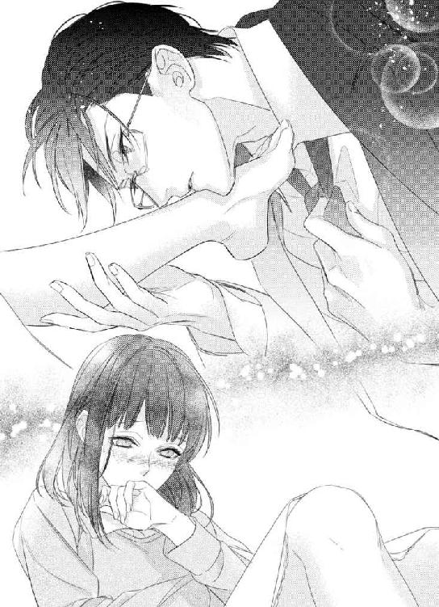
そうしながらネクタイに指を入れて、緩めると由良が息を詰めたのがわかった。首元を見て、それから青の顔を見る。その目を見ながらネクタイを解き、引き抜くと小さく息を吐いて瞬きをしながら目をそらす。
男がネクタイを解くのを見るのは、初めてなのかもしれない。むしろいつか由良に解いて欲しいとさえ思う。
「あの......私、シャワーも浴びてなくて......今日外に出たし、汗もかいたので」
顔を横に向けたまま赤くして言うそれに、青は微笑んで上着を脱ぎながら伸し掛かる。
「僕も同じだ。外に出て、人と会いました」
「でも、私、待ち合わせの時、実はちょっと走ったし......ダメです、汚いですよ！」
必死にそう言うのを聞くと、由良が男とこういう事をするのは二度目だったと思った。確かにシャワーを浴びて、綺麗にして、という気持ちがあるのだろう。
でも、こっちはそんなの待てない気持ちが強い。
「そうかな？ 君、いい匂いするけど」
首筋に顔を埋めながら、彼女のブラウスに手をかける。ボタンを外し始めると青のシャツを握った。由良の方が薄着だから服を脱がせるのは簡単だ。ブラウスの下のキャミソールを捲り上げると、オレンジ色の下着が見えた。白い肌に似合っているそれを早く脱がしたくて、背中に手を回しホックを外す。
下着をずらすと、一週間前に初めて見た白い胸が現れる。
「あ......っ」
目を閉じて顔をそらすその仕草が、困る。そういう事をされると、青の心をより煽る事をわかっていないのだろう。由良の反応すべてに、すでに身体が反応している事も、きっとわかっていない。
白い胸に手を這わせて、下から持ち上げるように揉み上げ、その先端に口づける。淡いピンク色のそこは、明らかに男を知らない肌だった。
「あ......っん」
小さく喘いだ時に胸が上下する。ささやかだが張りのあるそこが、揺れるのを見ると、もっと触れたくなる。口づけた胸と反対の胸を同じようにすると、息を詰めた。先端から飲み込むように吸うと、青のシャツを一層強く握った。
胸を堪能する間に由良のスカートを脱がし、下着とともにずらして行く。太腿辺りまでずらしたところで、彼女の足の間に自分の足を入れ、足の付け根に手を這わせた。
滑らかでどこもかしこも柔らかく、吸いつくような肌。こんな肌を隠している、いつも暗い服装が憎い。会社ではちょうどいいシンプルさだが、オフィスで脱がせたくなってしまいそうだ。
足の付け根からその間へと手を這わせて、そこを指で撫で上げると、由良が足を縮める。尖った部分を刺激すると、小さく声を出して青を見上げる。
「そこ、ダメ......です」
「どうして？」
「さ、触ったら、私......っぁ」
腰が揺れたのは、彼女の中に指を入れたから。そこは潤んでいて、青の指をゆっくりと上手に飲み込む。中を探ると、濡れた音が聞こえて来る。その間に、尖った部分も一緒に触れると、さらに由良の腰が揺れた。
「ふ......ぁ」
感じているのがわかるのは、由良の中から全てが溢れて濡れているから。おまけに胸を揉み揺らすから堪らないのか、唇を噛み枕に頬を押しつけて耐えるような仕草をする。
「気持ちいい？」
青が聞くと、一度こちらを見てギュッと目を閉じる。その仕草を見て微笑んだあと、由良の中に入る指をもう一つ増やす。するとまた腰が揺れて、小さく喘いで声を出す。
「好きな人にしか、こういう事、しない。君だってそうでしょう？ 何で、こんなに簡単に服を脱がせられるのかな？」
中の指を奥まで入れて抜くと、大きく息を吸った時に胸が揺れる。その胸に手を伸ばし、両手で触れながら、彼女の足をゆっくり開かせ、腰を足の間に入れた。
「それは......っん」
由良の胸の先端を軽く吸って離すと、甘い息を吐いた。恥ずかしそうに顔をそらして、青のシャツから手を離し、顔を覆う。
「それは？」
先を促すように言うと、顔を覆ったまま、泣いているような震える声で答える。
「ずっと憧れていた素敵な人で、好きだからです。でも、ずっと届かないと思っていたし......私、自分に自信ないし。見てても、見てるだけの人だって、思っていたのに......本当に、私の事、好きなんですか？」
由良と出会って三年目だ。ずっと見ていた、優しい顔立ちで気が利く、女性社員。彼女も青を見ていたと思う。でも、ただ自分を見ているだけだと思っている時期もあった。言葉の端々に、青を思っているような言葉を言っても、どこか真実味にかけていた。青を見ると、逃げるように去っていく時もあったからだ。
今この時に、好きだと言われる事の幸福感はこれ以上ないほど。きっと由良の性格を考えるに、精一杯言っているのだろう。そこが何よりも嬉しかった。
嬉しいと同時に、早く由良が欲しい気持ちも高まってしまう。
早く繋がりたい、と思う。
ゆっくりと覆っていた手を離すと、青を見上げた。潤んだ黒い目が誘っているように見えて、下半身が疼く。もともとずっと疼いて痛いくらいだった。だから、ベルトを外してスラックスのボタンを外し、ジッパーを下げる。
「何度も言っているでしょう？ 好きですよ。それに、付き合った女性はいても、この家に上げた女性は君だけ。このベッドでセックスしたのも君だけ」
言いながらベッドの横にあるチェストの引き出しを探る。中にあるのはコンドーム。
「でも、初めての時も、引き出しに、それ......」
泣きそうな顔をしてそう言うのを聞いて、青は笑った。
目の下を撫でて、横の髪を耳にかけながら、頭を撫でる。
「君とした時のは、三年は前に買ったものだよ。使えてラッキーだったけど......新しいのを買っておいた」
容器の蓋を剥がして、中身を取り出す。
それから下着とスラックスを一気にずらして、自分のモノにそれをつける。
「本当に？」
「嘘はつかない。女性を抱いたのは、かなり久しぶりで......だから余計に痛がらせてしまったかもしれない」
由良の足をさらに少し開かせ、腰を近づけるとそこを見て由良が瞬きをする。
「そんな、事......ないです。でも......どうして？ 部長、すごくモテてた。チョコレートだって......たくさん」
いつの事を言っているのか、と可笑しくて笑った。
確かに、バレンタインのチョコレートはたくさん貰ったが、彼女達の声や心には一度だって答えた事はない。同じ会社の部下や同僚とは恋愛に発展したくなかった。いわゆる青のプロ意識というやつだ。
でも、それを破った唯一の女性が由良だというのに、そんな事を言うなんて、と笑ってしまう。
「今年は全部返した。一人一人に断わってね。知っているくせに聞くのかな？」
由良の隙間の間で自分のを滑らせると、息を詰めた由良が声を小さく漏らす。
我ながら余裕がなくなっている。話している間にも、息が上がって早く由良と繋がりたい。
「でも、君のは、返さなかった」
は、と息を吐いて、由良が一筋涙を流す。
「名前、書いてなかったから、でしょう？」
「君は、間抜けだな......夜、こっそり置いて帰ったの、僕は見てたよ」
そう言って、由良の身体に自分のモノを当てがう。
「あ......」
「入れるよ」
予告して、ゆっくりと先端を入れる。それから、身体を押すようにして、腰を沈めて行く。
「あっ！」
「......っは」
全てを入れ切ると、由良は身体を震わせた。
繋がった瞬間の良さが堪らなくて、思わずため息をつくほどだった。
「少し待つよ」
由良の中はキツイ。今にも動きたい衝動に駆られるが、由良の身体を思って待つ事にした。
それに彼女の身体が震えて身を硬くしていたので、慣れるまで、と思ったのだ。
息を詰めた由良は青の腕の下から背中に手を回す。目が少し潤んでいるのを見て、綺麗だと思いながら目蓋にキスをして涙を拭う。
「私、本当に、信じていいですか？ 美人じゃないし......仕事もそんなにできなくて。でも、本当に、私のチョコレート、食べてくれたんですか？」
青の背中に手を回ししがみつく。だから抱きしめて、その血色のいい唇に音を立ててキスをする。
「ペカンナッツショコラ、大好きですよ？」
青が笑うと、眉を下げて由良がギュッと目を閉じた。
それから強く抱きしめて、口を開く。
「ずっと好きでした。いまでも、すごく、好きで......」
その言葉に、心に来るものがあった。さらに身体までも反応するような、彼女からの好きだという言葉。由良の中に入れた自分のモノが強く反応し、痛いほどの疼きを増した。
腰を揺すりたくて堪らなくなった。
「わかってます。動いてもいいかな？ 由良」
何度か頷くのを見て、青は腰を揺さぶる。由良の細腰に手を回すと、その腰が揺れる。中が狭くなり、思わず息を詰めるほど気持ち良かった。
「君が好きだ、由良」
動きが自然と早くなり、由良の身体を強く抱きしめ、起き上がる。
身体の繋がりが深くなって行く。
「あ......っん......やっ！」
由良の腰が揺れ、限界を感じているのがわかる。
「イっていいよ？」
青が言うと、彼女は首を振った。小さく喘いで下唇を噛んだのを見る。
この表情は自分がさせているのだと思うと、こちらまで限界が来そうだと思う。
それを自制し、彼女の身体を突き上げる。腰を強く打ちつけると、由良は青に強くしがみつき、達した。
「は......っあ！」
上から見る由良は、達したばかりで可愛い唇を開き、綺麗な乳房を忙しなく上下させていた。その様子が抑えきれないほど欲を駆り立てる。
青は乳房を揉み、由良の唇に息をも奪うようなキスをしながら、腰の動きを再開した。
角度を変えながら深いキスをして、舌を絡める。乳房を撫でては揉んで、先端を指で愛撫した。
「君は、僕に優しくさせてくれない」
キスの合間に言う青の言葉が、由良の耳に届いたかわからない。だが、その言葉通り、優しくさせてくれない由良へ、強く何度も腰を打ちつける。奥を突いたまま、腰を動かすと中が狭くなってまた感じているのがわかる。
「それに、僕に優しくしてくれないしね、君は」
「そんな事......っ」
今度は聞こえていたらしい。首を振る由良を見ながら苦笑して、軽く音を立ててキスをする。
名前で呼んでくれないし、甘えてくれない彼女は、青に優しくないと思う。
締めつけられる気持ち良さを感じながらも、細い腰を少しだけ持ち上げて、より青の方へと引き寄せた。
「あっ！」
甘い声が聞こえて、腰を撫でながら、もう一度胸に手を伸ばして揉む。何度も強く揉んだと思う。痛かったかもしれない。でも青は止められず、その胸の柔らかさを感じていたくて、そうしてしまう。
愛撫を施すと締めつける内部に、限界を感じる。
「もうイキ、そう」
小さく呻くように言う。何度か腰を揺すると由良がひときわ強く抱きつき、腰が震える。
また由良は達しそうなのだろう、と思いながら自分もイキたくて動く。由良は堪らないようで甘い声を出す。
「あ......ッダメ」
その声に煽られるように、腰を強く押しつけ、そのまま揺すった。由良の足に力が入り、青の腰を軽く絞めるように動いた。
初めは痛がっていた由良が、青とのセックスで感じているのは、嬉しかった。
もっと、感じて欲しいと思う。青の存在を。
好きな人が乱れる瞬間は堪らない。いつもの楚々とした優しい顔の由良が、青でこうなっていると思うと下半身に限界を感じる。
目のくらむような快感は初めてだ。
ひときわ強く由良に腰を打ちつけ、何度か身体を揺すりながら青は達した。
自分の息が耳に煩く、心臓はもっと煩い。
彼女の身体を強く抱きしめる腕が緩められずにいた。一つ息を吐いて由良の頭の後ろを撫でると、ようやく緩められた。
ゆっくりと由良の身体をベッドに戻し、髪の毛をかき上げる。それからやけに熱いと思ったら、シャツを脱いでいなかった。
身体を繋いだまま、シャツを脱ぐと由良と目が合った。
「どうしました？」
「いえ......あの、服、脱ぐんですか？」
「脱ぐよ。ああ、由良も脱がないとね」
笑みを浮かべて、もう一度由良の身体を抱き起こす。
「......っん」
再度繋がりが深くなり、甘い声を出すのに、また煽られてしまう。
由良の服を脱がせながら、ゴムを取らないといけないのに、と思う。しかし、繋がったままにしたのは自分のせいだ。
そっとベッドに戻したあと、由良の中から自分のモノを抜く。
それから深いキスをしながら、スラックスを脱ぐ。
「痛くなかった？」
「はい......大丈夫、です」
はぁ、と息を吐く由良のささやかな胸が揺れるのを見て、ゴムを取ったあと、下着だけを直して彼女の身体に覆いかぶさる。
「......っ」
「ああ、ごめん、苦しかった？」
首を振って、黒い目が見上げて来る。
「いえ、大丈夫、です」
息が整っていないから、苦しかったかもしれない。上下する白い胸に触れて、唇に小さなキスをする。
細いのに気持ちのいい身体。ずっとこうしていたいが、由良がシャワーを浴びていない事を気にしていた事を思い出した。自分も浴びていないが。
「風呂に入る？」
耳の後ろを撫でながら言うと、何度も小さく頷いた。
「じゃあ、ちょっと待ってて」
布団をかけたあと、風呂場へ行き、栓をしてスイッチを押す。こういう時、自動だと楽だ。
寝室へ戻ると、由良が起き上がり、身体を隠しながら服を引き寄せていた。
「服はかけておくよ」
手を差し出すと、赤い顔をして目をそらす。
「部長、服、着て下さい」
「どうせ風呂で脱ぎます。由良、服を下さい。皺になる」
服を差し出す由良から受け取り、ハンガーにかけてカーテンレールへ。ついでに自分の上着やベスト、スラックスを拾って、開き戸を開けてハンガーにかけた。
「クローゼットになってる......」
「ああ、古い家だから、多少リフォームをしてね。......何を探してる？」
辺りを見て、ベッドの周りを見る由良を見て、首を傾げる。
「し、下着が、ないから」
「ああ、布団の中かな？」
多分この辺りで脱がせた、と思いながら布団の中に手を入れると、由良の足に当たる。すぐに引っ込めるのが可愛くて笑うと、目的のものが見つかった。
「あったよ」
見せると、取ろうとするのでスイと引っ込めた。
「返して下さい」
「洗った方がいいと思うよ？」
「そ、そうですけど......」
「風呂に行かない？」
はい、と小さく頷くのを見て、細い身体を抱き上げる。
「あのっ！ 私、一人で！」
「一緒に入ろう？」
裸の由良が、かなり顔を赤くした。この子はこれも初めてだと思うと、可愛がってやりたくなる。
「お、お風呂は......一人がいいです」
「恥ずかしいから？」
また何度も頷くのを見て、由良の唇にキスをした。
「お互い様です」
腕の中で固まる由良をそのまま浴室へ連れて行く。ちょうどいいくらいに湯が張っていて、風呂の引き戸を閉めたあと、由良を下ろした。
背中を向ける由良に、シャワーの湯をかける。背が低いから立ったままでも洗いやすかった。
「椅子に座っていいよ」
ペコ、と頭を下げて椅子に座る由良の背中は白い。髪の毛を洗ってリンスをしたあと、ボディーソープで洗い始めると、身体がビクッと揺れた。
「自分で、洗います！」
「洗ってあげたいけどな」
顔を覗き込むと、赤い顔を両手で覆った。
「こ、今度、で」
今度だったらいいのか？ と聞きたい気分。恥ずかしがる由良は、普通に男の心を刺激するようだ。
自分で身体を洗い始めた由良を見て、青も自分の身体を洗った。髪や身体を洗い終わって湯船につかるが、由良は洗い終わったあとも椅子に座ったまま動かない。
「入らない？」
「部長が出たあとで」
「風邪ひくよ？」
肌寒い日もまだまだある。温まって眠った方がいい季節だ。
「大丈夫です。身体、丈夫なので」
「でも、シャワーがもったいないな。出しっぱなしだよ、由良」
苦笑して言うと、慌ててシャワーを止める。申し訳なさそうに、青を見て頭を下げた。
「すみません」
「謝らなくていいから、おいで」
首を振るのに、ため息をついて、手を伸ばす。濡れた髪に触れ、細い首を撫でた。
「じゃあ、上司命令。来なさい、由良」
黒い目をじっと見ると、目を伏せて、湯船にゆっくりと入って来る。青は由良の細い腕を引っ張った。
「あ......っ」
倒れ込んできた身体を抱きしめる。少し足を開かせ膝の上に乗せると、身体が固まって息を詰めるのが見えた。
「力抜いて」
背中を撫でると、顔をうつむける。そんな由良の唇に下からすくい上げるようにキスをして、首に手を回させると、胸から伝わる鼓動が早い事に気付く。
慣れていない身体と心を感じて、顔を覗き込む。赤い頬が可愛いので、そこにキスをした。
「部長は、彼女になった人とは、いつもお風呂、入ってるんですか？」
問いかけに、笑みを浮かべてから、首を振る。
「じゃあどうして、ですか。一人が、恥ずかしくないです」
顔を横に向けるのを戻す。優しい顔立ちの由良が好きなのに、顔をそらされたくなかった。
「君の肌を、もっと見ていたいから」
言いながら由良の滑らかな腕を撫でる。そうして、脇腹を撫でて胸の谷間に手を這わす。
「ドキドキしているね」
キスをして、胸の谷間を撫でてから乳房を揉む。ささやかだが柔らかいそこは、気持ちいい感触だ。
「それは、こうして、いるから......っ」
胸の先端を摘まむと、身体が震える。息を詰めた表情が可愛い。こんな表情を知らずにいたなんて、と一線を越えた今思う。
「僕も同じだ」
由良の手を取って、自分の心臓にあてる。好きな人と裸で過ごしている事実が、青の心臓を高鳴らせていた。
「君が好きだよ。こうして、君の身体を抱けて、幸せだ」
胸の先端を口に含む。舌で愛撫し、軽く吸ってから離す。同じように反対の胸に触れる間、手で胸を揉み上げ、柔らかさを堪能した。
「こんなの、夢みたいです。ずっと好きだった人が、こんなに近くにいるなんて」
そう言って青の胸に頬を寄せる。ベッドでの余韻なのか、自ら身体を寄せるのに、何も思わないわけじゃない。由良の言う事は、青も同じだった。
一週間ぶりといっても二度目だから、これで終わりだと思っていた。なのに、もう一度この身体を抱きたいと思う気持ちが膨らんで来る。
背中に手を這わせて、腰を撫でたあと、臀部を揉む。柔らかく、弾力のある肌に若さを感じながら、胸から唇を離し、啄ばむキスをする。すぐに唇が解け、深いキスになるのに時間はかからなかった。
「う......っん」
臀部を撫でながら後ろから由良の身体の中を探り、ゆっくりと指を入れると身体がビクリと震えた。鼻にかかった息を甘く出して、腰が揺れ動く。
「や......っ」
空いている手で逃げようとする腰を抱き、喉の部分に唇を寄せて軽く食む。
「あっ！」
由良の甘い声に煽られる。その声を出させているのは青なのだが、逆に翻弄されている気分だ。
中に入れる指を増やすと、由良の腰がさらに揺れ、中の指を締めつける。
「部長......ここ、お風呂、です」
「僕は部長って名前じゃないって、何度言えばわかりますか？」
煽られ、青の身体も反応し、感じている。もうすでに由良の中に自分自身を入れたい。
なのに、部長と言われるそれが気に食わないから、限界が来ているくせに言わせる。
「青です、由良」
「あ......っ、い、しきさん」
これが精一杯、と言うように赤い顔をし、感じ入った声で名を呼ばれた。
たったそれくらいで、自分もダメになるから仕方がない。早く由良の中へ入りたかった。
指を抜き、由良の唇に唇を押し当てながら抱きしめ、湯船から出る。抱き上げて、脱衣所まで連れて行き、バスタオルをかけてやる。
「立てますか？」
由良を下ろすと、その場に座り込んだ。忙しない息を吐き出し、赤い顔で青を見上げる。
「......無理です」
屈んで由良の頭を拭いて、そこから見上げる由良の黒い目を見ると堪らなくなり、そのまま壁に押しつけて、由良の足を開きたくなる衝動を抑えた。バスタオルにくるんだまま抱き上げ、ベッドへ運ぶ。
ベッドに下ろすと、由良は逃げるようにヘッドボードの方へ後退する。バスタオルで身体を隠しながら、青を見る目はまるで誘っているようだった。
開いたままのサイドチェストの引き出しからゴムを取り出し、気持ちを抑えて自分のモノにつける。
「一色さん......」
由良が青を呼んだ。足を開かせると、恥ずかしそうに顔をそらすが、抵抗はなかった。
腰を近づけ、由良の中へと自分のモノを押しつけるように入れる。もっとゆっくりするべきだとわかっていても、できなかった。まだ、男をよく知らない身体が、青を締めつける。
「ん......っ」
「痛くない？ 一気に入れたから」
ため息交じりに言うと、由良が眉間に皺を寄せているのが見えて、そこを撫でる。
「今、動いたら......私......っ」
唇を開き、喘ぐように息をする由良が、さらに青を締めつけた。
「ああ、もしかして、イキました？」
濡れた髪の毛を撫でると、由良が青の背中に手を回し、強く抱きしめる。
「だって、一色さんが......っ」
「風呂で触り過ぎたかな？ でも、僕も、動かないと限界ですよ？」
由良のしがみついているような身体を少しだけ離し、額にキスをして目蓋にキスをする。すると落ち着いたように息を吐いた由良が、顔を上げる。
ゆっくりと顔を近づけ、彼女が目を閉じたところでキスをした。キスをしながら腰を揺らすと、由良が甘い吐息を漏らし、唇を離した。
「......っふ！」
甘い声を聞いて、由良の身体をヘッドボードに押しつける。首に手を回した由良が、忙しない息を上げ、切ない声を出した。
「や......っ！」
由良の声が身体に響く。もっと繋がりを深くしたくて、青は由良の身体を引き寄せて、自分の膝の上に乗せて抱きしめる。
「由良」
名を呼ぶと、自分の腰に来るから重症だと思う。この身体をもっと、と思う気持ちが止められない。もういい年をした大人なのに、身体はまるでセックスを覚えたてみたいだった。
身体を少し後退させて、由良をベッドに仰向けにする。彼女の腰を掴んで、何度も腰を打ちつけた。
「ん......っあ！」
感じているのがわかる。由良の内部の締めつけもだが、腰を揺するたびに濡れた音も聞こえる。
自分以外にこの身体の反応を見せた事はないはず。
それにも下半身はさらに反応を示して、イキたいと思う。
早く解放したい気持ちはあるが、由良のこの青だけに見せる顔を見ていたい。しかし、彼女の甘い声や、身体がそうさせてくれない。
「もっと、見ていたいのに......締めつけ過ぎだ」
息が乱れる。開いた唇にキスをするよりも、動きたい。
「こんなの、君だけだ......ったく、酷いな」
声に煽られ、何度も腰を揺らす。限界はすぐに来て、由良の腰を強く抱きしめる。
最後に強く腰を押しつけた。
「......っん！」
思わず呻いてしまうなんて、初めてかもしれない。
目の前が揺らぐような、快感の瞬間が長引いている。
顔を見たくて身体を少しずらすと、由良の黒い目が余韻を感じさせ、焦点をすぐに合わせられなかった様子で。
その目をじっと見ると、由良が目を閉じて青の肩に頭を預ける。
「きつかったかな？」
頭の後ろを撫でながら言うと、一度だけ頷いた。
「気持ち良かったですか？」
これには答えない由良に少しだけ笑って、青は言った。
「僕は、最高に良かったんですけど？」
由良は顔を上げなくて、何も答えなくて。ゆっくりと由良の身体をベッドに戻して正面から由良を見る。
「ああ、良かったんだね」
由良の赤い顔と、表情を見て言うと顔を横にそらした。好きな優しい顔が見れないのは残念だが、今は良しとしようと思った。
身体の繋がりを解くと、足を閉じたのを見て、布団をかけてやる。それを引き寄せて横を向くのを見て、青はゴムを外してから、由良の身体を背中から引き寄せた。
「一色さん？」
「何？」
「寝ちゃっても、大丈夫、ですか？」
髪の毛乾かしていないけど、と思いながら近くにあったバスタオルを引き寄せる。
「どうぞ」
青が言うと、目がトロッとなり、最後に黒い目が見上げる。
「あと、酷い、って何ですか？」
言ったあと、すうっと息を吸って眠ってしまう。
「聞こえてたのか」
苦笑して、頬を撫でる。
「年甲斐もなく煽られまくって、早くイってしまって、自制が効かなくなるから、酷いって話です」
まったくどうした自分、と心の中で言う。
やれやれ、と思いながらため息をついて彼女を見ると、セックスで疲れたのだろう。頬を軽く引っ張っても身じろぎしなかった。髪の毛を軽く拭いてやっていると、規則正しい寝息が青の肌をくすぐる。
深く眠ったのを確認し、由良の頬にキスをする。
「おやすみ」
余韻はまだ残っていて、身体の奥にまだくすぶる熱はあるが、洗濯機を回しておこうと思い、ベッドを下りる。きちんと布団をかけて、もう一度青は由良の頬にキスをするのだった。
９
何となく肌寒くて、温かいと思う方に身体を寄せた。すごくいい匂いがして、顔を押しつけると、肩に温かいものを感じて、ゆっくり目を開ける。
デジャヴのような展開に、何度も瞬きをする。上を見ると、家の天井、目の前には綺麗な鎖骨。規則正しい寝息が聞こえて視線を上に向けると、彼の整った顔があった。
「一色......さん」
昨夜は部長じゃない、と何度も言われた。名前を呼ぶように言われたけれど、青とは呼べなかった。まだまだ、憧れの域を脱していない部分があるから。
『君が好きだ、由良』
一色から言われた言葉が耳に残っている。思い出すと、幸せなのと信じられない気持ちと半々ある。でも、今抱きしめられているのは現実で、由良の肩を一色の温かく大きな手が覆っている。
目の前の鎖骨に触れると、ドキドキした。一色の鎖骨に触れる事なんて、いままでない事だった。それに、こんな風に一緒に眠るなんて、と目をキュッと閉じる。
「くすぐったい」
頭上で笑った声が聞こえて、一色の顔を見上げる。
「おはよう」
「おはようございます......すみません、起こしましたか？」
大きな手が肩を撫でながら首を振る。
「もう起きる時間だから、勝手に目が覚めただけ。今日もいい天気かな......」
言いながらゆっくり目を閉じるのを見る。睫毛がしっかりとあるから、一色の目は魅力的なのだろう。男の人なのに肌が綺麗だと思った。
「シャワー浴びる？」
ゆっくりと目を開けながら言われて、昨夜は、と思い出す。
お風呂に入れられた。由良にしては大きな恋人しての第一歩で、いきなりこんなのでいいのかと思うほど。でも相手が一色という、素敵な人とだったから乗り越えられたハードルかもしれない。
そのお風呂で彼の手で触れられたあと、このベッドで抱かれた。彼が由良の中に入った瞬間、由良はこれ以上ないくらいの快感に、達してしまった。そのあと、一色が達するまで由良は感じさせられ、あまりの良さに声を抑えきれなかった。
「あ......そ、うですね」
顔がだんだん熱くなってくる。自分の頬に触れると、少し熱くなっているのがわかる。
「ちょっと待ってて」
起き上がった彼は、チェストの上にある眼鏡をかける。それから、クローゼットの引き戸を開いた。一色は下着一枚だったから、目のやり場に困る。視線をそらしている間に、彼はデニムパンツをはいて、白いシャツを羽織った。由良も起き上がったところで、淡いブルーのシャツとベージュの楽そうなコットンパンツを由良の目の前に置く。
「由良小さいから、シャツだけで事足りそうだけど」
クスッと笑いながら由良の肩にシャツをかけてくれた。
「ほら、腕、通す」
「はい」
慌てて腕を通すと、一色がそのボタンを留め始める。
「自分でしますよ。着替え、できます。甘やかせ過ぎです、一色さん」
袖は言われるままに素直に通したけれど、ボタンまで一色が留める。由良が少しだけムッとして言うと、ボタンを留める手を止めた。
「それくらい、わかってますよ？」
「じゃあ、私がします」
由良がボタンに手をかけると、一色の手がやんわりと由良の両手を掴んだ。
「好きな人を甘やかせたらいけませんか？」
由良の顔に一色の顔が近づく。当然のようにされるキスに、由良は何度も瞬きをしてしまう。そのキスが少しずつ熱を帯びて来て、唇を吸うキスから舌を絡めるキスになるまですぐだった。
「っ......ん」
ゆっくりと身体がベッドへと戻された。ボタンを最後まで留めていないシャツの上から、由良の胸を探られ、大きな手がそこを揉む。ピンと尖った先端を指が摘まむと、息が詰まり腰が揺れてしまう。
「君は、甘やかせたくなる。可愛いから」
濡れた唇の上で言われた。
「......でも、それ、ダメに、なりそう」
「僕の前ではそれでいい。ダメになっている由良、可愛いですよ」
濡れた音を立てて、由良の唇が一色の唇に覆われる。まるで由良をすごく美味しいもののように堪能し、何度もキスの角度を変えた。
そうして、ゆっくりと唇が濡れた音を立てて離れ、親指が由良の唇を拭う。
「朝ご飯、食べますか？」
もうすでに息が上がっているのに、彼は冷静にそう言った。
「それとも、続きをして、一緒にシャワーを浴びますか？」
一緒にというところに心臓が跳ね上がる。昨日のような恥ずかしさと緊張、そして彼の色っぽさにクラクラするのは無理だと思った。
「ご、ご飯です」
やや裏返った声で言うと、一色が笑って由良の身体を抱き起こす。
「じゃあ、シャワー浴びて来なさい。君の下着は、風呂場の洗濯機の中。乾燥終わってますよ」
髪の毛を耳にかけられ、頬にキスをされる。立ち上がった彼を見上げてから、由良もベッドから足を下ろす。一色の言う通り、彼のシャツは由良の膝より少し上くらいまであった。
借りたコットンパンツを持ち、先に部屋を出る一色の背中を追うように寝室を出る。一色の背中は、いつも上着で隠れているから気付かないけれど、姿勢が良く綺麗な背中だ。昨夜はこの背中に手を回した事を思い出し、知らず熱いため息をつく。
「パンでいい？」
不意に立ち止まって言われたので、由良は一色の身体にぶつかってしまった。
「は、はい！」
「疲れてる？ まだボーっとするのかな？」
苦笑した一色が由良の顔を覗き込むのに、首を振った。
「大丈夫です！ 疲れてません、から」
「そうか。じゃあ、ごゆっくり」
微笑んで、浴室の引き戸を開けてくれるのを見て、由良は何も言わず頭を下げてから、引き戸を閉めた。
そこで座り込み、ため息。
「どうしよう......めっちゃ現実だ......ずっと好きだった部長と、こんな事になるなんて、やっぱり夢みたい」
心の中でいろいろと考えながらも、由良はとりあえずシャワーを、と思う。
ドラム式の洗濯機の中を見ると、由良の下着とタオルが入っていたので、取り出す。タオルも取り出して、浴室へ入った。
きっと一色は、由良が眠ったあとシャワーを浴びたのだろう。さわやかな、彼のシャンプーの匂いがしたから。
昨夜髪の毛は洗ったから、と思って身体だけ洗う事にする。
また彼の匂いのするボディシャンプーを手に取った。同じ匂いになる事を思い、キュッと目を閉じる由良だった。
☆
トーストと目玉焼きとハムを焼いたもの、生野菜のサラダとコーヒー、という理想の朝食はすでにでき上がっていた。しかし、トーストが厚切りだったので、半分食べたらお腹いっぱいになった。それでも出されたものは、と頑張って食べていると、一色が頬杖をついて言う。
「無理に食べなくていいよ？ 小食だね。由良のは薄切りにすれば良かった」
苦笑したのを見て、確かに由良はあまり食べられない方だが、出されたものを食べないのは失礼だ。
「いえ、出されたものは、全部食べます」
トーストにかじりつくと、一色が由良のかじったトーストを口から取り上げる。
「無理に食べなくていいから」
そうして一色が由良の食べかけのトーストを食べて、コーヒーを飲む。由良はと言えば、まだ口をもぐもぐさせている。もともと食べるのが遅いのだが、量が多いのでさらに遅くなった。
どうにかコーヒーで流し込むと、一色が食器を重ねる。
「あ、片づけは、私が」
「うん、でもいいよ。僕がするから」
「いえ、私が......すみません、いろいろして貰っているのに」
朝食を作って貰い、食器の後片づけまで、と思って由良は椅子から立ち上がってキッチンへ行く。そうすると、一色が由良の身体を回れ右、させた。
「ここはいいので、バッグ取って来なさい」
「え？」
由良が後ろを向きながら見上げると、一色はにこりと笑った。
「企画書、仕上げましょうか」
企画書、と聞いて目を丸くする。
「今日は仕事をするつもりで持って帰って来ているでしょう？ だったらちょうどいい。ここに、君の部署の部長がいます。今日中に仕上げたら、明日までゆっくりできますよ？ それにね、僕は週明けすぐに、一週間出張になるから。君の仕事を見る時間はほとんどない」
目をぱちぱちさせると、額を撫でられ、早く、と言われた。
なので由良は寝室に置いてあったバッグを、と思って取りに行く。寝室に入ると、シーツがすでに剥がれていて、きっと由良がシャワーを浴びている間にそうされたのだと気付く。一色は何でも手早くできるのだな、と感心しながらバッグの中身を確認する。
「一週間、部長いないんだ......」
その事に若干気持ちが沈むが、気を取り直してバックの中を見て、仕事に必要なものを取り出した。
リビングへ戻ると、キッチンにいる彼は食器を洗っていた。由良に気付くと、ソファーの前にあるテーブルを指さされる。
「そこに広げておいて」
やっぱり洗わせている事を申し訳なく思いながら、由良はタブレットパソコンを取り出し、必要な書類と筆記用具を出す。そうしたところで一色がキッチンからソファーのところへやって来て、ソファーの下へ座った。一色が下へ座ったので、由良も並んでソファーの下へ座った。
由良のタブレットを持ち上げて、操作し画面を出す。
「まず、展示会の趣旨に合ったデザイナーを優先させましょう」
そう言って一色のアドバイス通りに由良はデザイナーをピックアップした。そして、企画のコンセプトをはっきりさせるため目を引くようなキャッチコピーを入れる事を提案され、それを盛り込む事により企画のテーマが際立つようになった。
「文章は、簡潔明瞭にね」
「はい」
でき上がった企画書は、一色が足りない部分を修正してくれた。文章のおかしい部分を見て貰い、こちらもすっきりまとめ上げて貰った。
一色の助けを借りて、二時間程度で一応形になったそれを、タブレットからパソコンへ転送する。彼は画面を見て確認し、由良を見た。
「やればできるじゃないですか。君は遅いというより、あれこれ考え過ぎだ」
「すみません......」
ふう、とため息をついた彼は由良のタブレットから会社の自分のパソコンへと、データを転送した。
尻を叩かれた感じで仕事をやっつけたのだが、自分でもこんなに早く終わるなんて驚きだ。でも、何となく要領が掴めたというか、こんな感じにやって行けばいいのだな、と勉強になった。手渡されたタブレットを覗き込みながら立ち上がり、ソファーに座ってパチパチ瞬きしてしまう。
「早く終わったら、二人の時間ができるから。こんな事、恋人限定、ですよ」
恋人限定と言われて、夢のような現実に少しだけ目が眩んでしまう。
「ありがとうございます」
眼鏡を外すのを見て、その仕草がカッコイイと思った。一色は顔立ちが整っているからどんな仕草でも、絵になって見える。
「いつもはコンタクトですよね？」
「家では眼鏡が多いよ。楽だしね。」
由良がじっと見ていると、眼鏡を手渡される。フレームレスの眼鏡は、一色の端整な顔によく似合っている。手にして見ていると、そのまま由良の耳にかけられた。
「君は視力いいでしょ？」
見つめられながら言われるそれにドキッとして、眼鏡越しに一色を見ると、ちょっと小さく見える感じだ。
「何かクラクラしますよ？」
笑顔を浮かべてゆっくりと由良から眼鏡を外す。それを持ったまま、彼は由良に軽く口づけた。
テーブルに眼鏡を置くと、今度はゆっくりと唇を重ねて、濡れた音を立てながら唇を啄ばむ。
「っ......あの、部長？」
昨夜、二度、彼に抱かれた。今も同じような雰囲気になりつつあり、まだ明るいうちから、と思う気持ちがあった。
「僕の名前は、青、だけど？」
「......いきなり、名前では呼べない、です」
「昨日は一色、と呼んでいた。せめてそうして欲しいね。僕は、さっきまでは上司として仕事を指導したけど、今は由良の恋人のつもり」
そう言って笑みを浮かべたあと、キスをしながらソファーの背に身体が少し強く押しつけられる。リビングにはカーテンが引いてあるけれど、南向きだからかとても明るい。
「......っい、しき、さ......っん」
由良の小さな胸がシャツの上から大きな手に包まれる。一色の手には小さいと思うが、彼からは何度も揉まれている。綺麗な爪を持つ指が、布を通して胸の先端を摘まんで、指先がそこを撫でる。
「私、胸小さいので......」
「だから？」
「触っても、そんなに、柔らかくないと思います」
ブラジャーは探してもなかった。だから、一色から借りたシャツの下は、素肌だ。布が擦れる感触が堪らなくて、ため息とともに小さく声が出てしまう。
「君の胸は、白くて綺麗だ」
そう言いながらシャツを上へとたくし上げて、由良の胸が一色の目に晒される。明るい陽光の中だから、はっきり見えるだろう。
「まだ、お昼です。明るくて、いや......っあ」
唇が由良の胸を飲み込むのが見えた。唇が胸を吸って、舌で愛撫される。もう片方の胸も同じようにされ、一色の手が由良の胸を揉むから堪らない。足をキュッと閉じると、何だか足の間が濡れた感触。
一色しか知らない身体は、ほんの少しの間にいろんな事を覚えている。胸に触れるだけで、彼を受け入れるような身体になってしまっていた。
「それに、ここ、ソファー」
「ベッドのシーツは洗濯中で、まだ換えていないから」
一色はもう一度ソファーの下に下りて、裾を大幅に曲げてあるコットンパンツのボタンを外す。ウエストは紐で調節できるタイプだったが、由良には大きくてウエストからずり下がっていた。
「君は細いな」
ボタンを外したあと、ジッパーを下げる事なく、コットンパンツが脱がされる。ショーツにも手をかけられ、一色の手を掴んだ。
「ま、って......」
「仕事、手伝った。ずっとこうしたくて我慢してた」
「でも......っ」
首を振ると、腰を撫でる大きな温かい手。その手を這わせて、足の付け根を撫でる。
「好きだよ、由良」
昨日に引き続き、好きだと言われて、目をギュッと閉じる。
こんなに、愛されていいのだろうか。誰もが憧れている一色が、由良の下腹部にキスをし、愛おしそうに腰を撫でて脇腹を撫でた。
昨夜もしたのに、と思う。
「昨日もしたのに、って思ってる？」
見上げた一色の目は、さっきと違う目をしている。男の人の目だと、もう由良は知っている。
由良が頷くと、彼は笑った。
「わかってるよ。でも、したくなった。好きな人が近くにいたら、男として欲しいと思うのは当然です。ずっと我慢していた人が、手に入ったんだから。それに、来週は週末までいないから、できるだけ愛したい」
言いながら由良の手をやんわりと外し、ショーツを下げていく。これ以上抵抗はできなかった。一色の言葉に熱があり過ぎて。
美人ではない由良を好きだと言い、たいして魅力的ではない由良の身体に欲情する、と言った。
「ウソみたい」
「そうか。じゃあ、現実ってわからせよう」
そう言って由良の足を開かせる。一色の綺麗な目の前に由良の秘めた部分がさらされていて、恥ずかしさで顔を赤くした。ただでさえ恥ずかしいのに、由良の足の間に一色が顔を近づけて、足の付け根にキスをする。
「や......っ」
何をされるのかわかった。知っている行為だけどされた事がない。一色の端整な顔が由良の足の間に伏せて、そこを温かい舌が撫で始める。
「んん......っ」
腰が揺れる。彼の舌は下から上へと撫で上げたあと、そこの尖った部分を舐めて、吸う。一色のシャツを掴んであまりの快感をやり過ごすと、彼の手が両足を固定するように掴む。
何度も舐められると堪らないし、一色の舌が由良の身体の隙間を撫でるようにして入って来るのを感じる。身体を震わせて、腰が揺れるのを止められない。
ひとしきり由良のそこを舌で愛撫したあと、顔を上げてソファーに片足を乗せる。デニムパンツのボタンを外し、ジッパーを下げたあと、そのポケットから避妊具を取り出す。
「それ、持ってたんですか？」
「君を抱きたかったから。悪いけど、本当に我慢してたから、もう入れるよ？」
下着を下げると、反応しきった一色が出てくる。それに避妊具をつけるのを、直視できないと思っていたのにじっと見てしまった。
「君で、こうなってるんですよ？」
微かに笑った一色の表情が、男の人のそれで色っぽくて、ドキドキする。
彼は自分のモノを持って、由良の足の間にあてがい、押しつけるようにして由良の中へ入って来る。
「は......っあ」
思わず、小さく甘い声を上げてしまう。一色が由良の中を満たして行くからだ。
由良の身体の隙間をぴったりと埋めるそれは、大きい。
「君に溺れている気がする」
ため息交じりに熱い声で言われて、一色が由良の腰を揺すり始める。由良はその背に手を回し、シャツを強く握った。
「そんな、事......っん」
「これをしたくて、君の仕事を手伝った。上司のふりが、これからできるか心配だ」
一色が腰を揺するたびに、感じてしまう。後ろはソファーだから身動きできなくて。彼が与える快感から逃げられない。中を満たす一色のモノがさらに大きくなったみたいで、由良の中を更に感じさせる。
小さく甘い声を上げて、一色の腰に手を回す。
「もう......っあ」
腰の動きが早くなり、知らず由良は腰に回した腕を強くする。
一色の忙しない息が耳に届くともうダメで、由良は自分の限界を解き、達した。
由良が達したあと、彼の動きは緩くなるが止まってくれなくて。昨夜もそうだった、と思いながら解放した余韻よりもまた快感が身体の底から上ってくる感じ。
「一色さ......っん」
「なに？」
こんなに感じさせられるのは無理、と思いながら彼のシャツを掴む。
喘ぐような息をすると、あ、と小さく声が出てしまう。
「まだ、する？」
言ったあとで、何を聞いたんだ、と思った。少し強く身体を押しつけられ、詰めた息を吐くと一色が微笑む。
「君の中にいたくてね」
彼が腰を動かすと、由良の中の彼も動く。中を出入りするそこは、時々濡れた音が聞こえている。
「由良の中、蕩けて温かい」
シャツを掴んだ手を取られ、指を絡ませる。もう片方の手も同じようにされて、緩い動きに背が少しだけしなる。
「狭いし、気持ちいい」
目を伏せ気味にして、は、と息を吐きながら言うそれを見て、心臓が跳ね上がる。絡ませた指を思わず強く握ると、彼は頬を擦り寄せてそこへキスをした。
「そんなに狭くすると、もちませんよ？ このゆっくりな感じ、君は、良くないの？」
強い刺激はなく、決定的な快感はないにしても、それが持続している。一度達した由良は堪らないのに、一色は余裕がある様子だ。
「良過ぎて、困ります。一色さんと、こうしているだけで、私は......っ」
手を繋ぐなんて思いもしない人だった。しかも、こんな風に甘く、身体を繋げて指を絡ませるなんて。
一色の指を、由良は親指で撫でた。それからそこに頬を寄せた。
「一色さん」
名を呼んで見上げると、彼は綺麗な目を瞬きした。
「酷いな、君は」
そう言って、腰の動きが強くなる。グッと押しつけられて、由良は身体が震えた。目を閉じ、小さく声を上げてしまう。
昨夜も同じような事を言われた気がする。そう、あれは、昨夜寝る前だった。
しかし、そんな事を考える暇もなく、一色は動きを速めた。背中がソファーに押しつけられるようになり、彼の身体が近づく。重みを受け止めると、由良はそれだけで感じたのか、腰が揺れた。
手を繋いだままだから、自由がきかなくて。ソファーに押しつけられた手を強く握って、彼の動きに耐える。
「ん......っあ、いっし......っきさ......っ！」
身体を強く押しつけられ、由良の隙間に彼がぴったり重なる。それが良くて、由良は喘いだ。そのまま身体を揺すられるとさらに快感が増して、ダメだと思う。
「もう......っ」
最高に身体が疼き、鳴っているのがわかる。
彼の息が耳に届き、閉じていた目を開けた。由良を見下ろす一色の表情は、ものすごく色っぽかった。端整な彼が、由良との行為がゆえに、いつもと違う美しい表情を見せている。それを思うと、由良はこれ以上ないくらい、好きだ、愛しいという思いが胸にあふれてしまう。
視線が合い、一色の顔が近づいて口づけをされた。
息も身体も熱くて堪らない。
押しつけていた腰が動きを再開して、打ちつけられる。肌がぶつかる音が聞こえると同時に、濡れた音も聞こえている。
もう焼き切れそう、と思う。
「あ......っあ！」
由良は自制できずに声を出し、また上りつめて達した。
「は......っ！」
それと同時に彼が息を詰めて、強く腰を押しつけ、動きを止める。
開いている唇に、一色が口づける。舌を絡める深いキスは、由良の酸素まで奪ってクラクラする。
ようやく唇を離したあと、泣くように喘いだ由良は一色の身体に額を押しつけた。
「抜けないよ、由良」
まだ息の整っていない一色が微かに笑いながら由良と繋いでいる手にキスをする。繋いでいた手からゆっくりと力を抜くと、一色が頬を撫でた。自由になった手で彼のシャツの腰辺りを掴んで、それから腰を抱く。
「由良、抜かないと」
一色の息遣いや鼓動が近い。困ったような声が聞こえ、由良のこめかみ辺りにキスをして、頭を撫でる。
「もう、少し......」
余韻が消えない、と思いながら由良の中にいる彼を感じる。まだ存在を示す彼のモノは、由良の隙間を満たしたままだ。
一色もまた由良の腰を抱き、中にいる彼が少しだけ動く。
息を詰めるのと同時に、ゆっくりと唇が重なって来る。何度か音を立ててキスをし、最後に軽く唇を噛んでから離れていく。
「良かったみたいだね」
笑みを浮かべながら言われて顔が熱くなるけれど。
ゆっくり頷いて答えた。一色との行為はいつも、恥ずかしいけれど気持ち良過ぎる。
「さっきの......んっ！」
一色が動いて、ゆっくりと自分のモノを由良から抜く。その喪失感に、彼の腕を掴む。
「ゴム、取らないと」
そう言って頬にキスをした彼は、自身を引き抜いて息を吐く。
「さっき？ どうしましたか？」
後ろ手にティッシュを取るのが見えて、由良は瞬きをする。ソファーに足を乗せたまま、避妊具を取るのを見て、身体がキュッとなる感じだ。足を開いたままだったから、慌てて閉じると膝を撫でられた。
「由良？ さっきが何？」
彼を見上げるとティッシュを数枚取って、由良の足を開こうとする。
「な、何ですか？」
「拭かないと。濡れてますよ、きっと」
その言葉にカァッと顔が赤くなり、一色の手を掴む。
「自分でします」
足を閉じて、苦笑した一色からティッシュを受け取る。彼のシャツ一枚で、下半身は裸という具合に羞恥を覚える。少し横を向いて足の間を拭くと、ティッシュを捨てるためのゴミ箱を近くに置かれた。
服を直した彼は由良の隣に座る。
「何か言いかけてたけど、何ですか？」
足を引き寄せながら、ソファーの下にある自分の下着を取ろうとするが取れない。そうすると大きな手がそれを拾って、由良の前に跪いた。
「あ、あの......っ」
由良の足にショーツを通して、それを膝から上へと上げて行く。
「腰を上げて」
言われるままに腰を上げ、ショーツを身に着けられた。
「酷いって、何ですか？ 私、何かしましたか？」
一色が由良を下から見上げる。綺麗な茶色の目が瞬きをして、フッと笑った。
「聞こえていたのか」
由良の膝から上を撫でながら、彼は首を振った。
「こっちの事です。気にしないで」
「でも......」
「気にしないで、由良」
言いながら頬に触れて、鼻を軽く摘まんだ。その仕草が甘くて、ドキドキする。
「今日も泊まって行きなさい。明日は、完全にフリーになったからね」
明日は日曜日。大事な仕事はひと段落してしまった。
「でも、着替えが......」
「明日の夕方には、送って行くから」
でも、と思って見上げた。それを察したのか彼はふう、と息を吐いて由良の頬を撫でた。
「上司命令です。明日まで僕と、恋人として過ごしなさい」
恋人として、と言う一色は、素敵だ。そして優しい。
でも、こうやって由良を翻弄するような、困らせるような事を言う。
「上司命令って......今は、プライベートじゃないんですか？」
由良が少し頬を膨らませながら言うと、由良の唇を彼の舌が舐めた。
「公私混同中ですよ。察しなさい」
言いながら由良の唇にキスをする。
そのキスは酷く甘くて、官能的なキスだった。
☆
『ずっと好きでした。いまでも、すごく、好きで......』
『わかってます。動いてもいいかな？ 由良』
反芻すると恥ずかしい事ばかりだった。憧れの彼と、ベッドの上で好きな気持ちを確かめ合ったからだ。
翌朝、彼は優しく由良の頭を撫で、朝食を食べさせてくれた。朝食をいただいたあと、にっこり笑った一色は言ったのだ。
『企画書、仕上げましょうか？』
熱い時間を過ごしたあとは、企画書とにらめっこ。やり直しの部分やタブレットの有効活用の仕方も指導された。一色と過ごす時間は楽しくて、企画書を指導されながらも、ＯＫを貰ったあとには甘い時間。ゆっくりと優しく抱き合って、身体を高められた。
熱く愛し合った事を思い出すと、本当に私でいいのか、と考える事が増えてしまう。
なのに幸せな気持ちが消えないのは、彼と過ごした時間が甘いからだろう。
「由良、デザイナーさんと連絡とって、ＯＫ貰ったよ？」
昨日の事を考えていると、未來から話しかけられ、夢から覚めたように、パチン、と素に戻って、声がした方を見上げた。
一色に見て貰った企画は正式に認められて、由良の初めての企画は現在進行中だ。
「由良？ 大丈夫？ 何かボーっとしてた？」
「あ、うん、そう！ ごめんね、未來。ありがとう」
未來にそう言うと、彼女は目を眇めて書類を由良のデスクに置いた。
「彼氏の事でも考えてるの？ 最近ボーっとしてる」
彼氏、と言われて戸惑う。確かに一色は彼氏になるだろうけれど、改めて考えると顔が熱くなりそうだ。
「あ、ごめんね......私、初めての彼だから......」
「ちゃんと話してくれる約束だよね？ 由良？」
未來になら、と思う気持ちがある。まだお付き合いを始めたばかりで実感がわかなかった。それに付き合っている人が一色だと言っていいのだろうか、と不安もあった。
「まだ、言い辛い？」
きちんと話すと言ったあと、未來は執拗に聞いて来なかった。だから、話すべきだと思いながら、由良は戸惑った。相手を一色だと言う前に、彼に伝えていいか聞きたい気持ちと、親友の未來に話したい気持ちがある。
未來に本当のことを聞いて貰いたいという気持ちが勝って、心配する未來に話そうと決意した。
「どんな人？」
笑顔を浮かべる未來に、由良もまた少しだけ笑って、頷いた。
「今日、帰りにでも......いいかな？ 会社じゃないところで」
「うん、もちろんだよ。ありがとう、話す気になってくれて」
未來と待ち合わせの場所を決めて、そしてきちんと仕事に戻った。
ふんわりと一色の事を思い出すと、やはりいろいろと考えてしまう。
付き合いをもっと深めたいと思いながらも、大丈夫なんだろうか、と思う。一色は由良の好きなところを語ってくれたけれど、鏡を見るたびに、そうかなぁ、と思うのだ。
でも、由良は彼の事を信じると決めた。
『ペカンナッツショコラ、好きですよ』
由良は自分の好みのチョコレートをデスクの上に置いた。それを見られているとは思わなかったが、彼はそれが好きだと言ってくれた。
それに、一色の作る料理も連れて行ってくれたところも、ものすごく合う気がして。
いつも食べさせて貰っていては悪いなぁ、と思いながらも自分の料理の腕は普通だと思うので、自信がない。というか、普通なら由良が胃袋を掴むべきなのに、逆に一色に胃袋を掴まれている気がしてどうなんだろうと思う。
それも含めながら、一色とのこれからを考えて行っていいのかと、やはり不安はあるけれど。
今日も携帯電話を見て、メールが届いているのを見て、やっぱり由良は好きになった人が自分を好いてくれているその喜びをかみしめるのだった。
☆
仕事が終わって、カフェショップで軽食を取りながら、それで、と切り出したのは未來だった。
由良はうつむいて、でもお付き合いを始めた経緯を話す。
「ずっと、好きだった人がいて、酔っ払った勢いでちょっと迫っちゃって......初めてなのに大胆な事をしたと思うけど、その人が私の事を受け入れてくれたの。だから、いまだに信じられないけど、お付き合いする事になって......」
「それって会社の人？」
顔を上げて、未來を見る。由良の事をわかっている未來には、きっと確信があるのだろう。由良は積極的ではないし、恋をするなら会社の人だと思う。
「うん、そうだけど......」
「それって、もしかして、だけど......一色部長だったりする？」
未來の言葉に内心驚いたから、平静を取り戻そうとしたけれど、上手くいかなかった。手元のコーヒーのマドラースプーンをかき回してしまい、これでは動揺していますと言っているようなものだ。
「由良のずっと好きな人って、一色部長だし......それにこの前の送別会で酔っ払った由良を送って行ったの、一色部長でしょ？」
「......私、一色部長が好きだって、言った事あった？」
そんな事誰にも言った事がなくて、誰にも打ち明けなかった。もちろん信用している未來にさえ。だって、由良のような地味な女が一色を好きだと、打ち明けられなかったのだ。
「言った事ないけど、わかるよ......由良が一色部長の事語る時、何か表現が特別っていうか......憧れてます、って感じがするし」
すごく恥ずかしくなった。いつもそんな風に見えていたのかと思うと、余計に。
それに、これでは一色と付き合っているのだと、周囲に簡単にばれてしまいそうだ。
「由良？ そうでしょう？」
未來に隠し事はできない気がして、コクリと頷く。
「もしかして、部長、由良の事、無理に......？」
「そんな事ない！ 迫った、って言ったでしょ？ 私が迫ったから、部長は私と......それに、ちゃんと同意してた。部長は、優しかった」
「でもさ、だからって......酔っ払った女の子と寝ちゃう？ あんな感じで遊んじゃう人なわけ？」
「だから！ 違う！」
少し声を上げて言うと、未來は押し黙って由良を見る。
「違うの。私が一方的だと思ってたけど、好きだって、言ってくれた」
「どこを？」
未來はもうすでに一色を良く思っていないらしい。でも、一色は、遊びで由良を抱いたのではないと、今はよくわかっているから。
「私の、目が好きだって......」
うつむきながら言うと、未來はしばらく間をおいて、ため息をつく。
「......わかる気がする。由良の目、ふとした時にすごく綺麗で、魅力的だもん」
さらに、はぁ、とため息をついてからコーヒーを飲む。それから由良、と名を呼ばれた。
「まぁ、アレよ......一色部長が由良を、っての何だかわかるかも」
「え？」
「由良、今回と前回の意識調査で、異動希望してたでしょ？ それね、一色部長がたぶん握り潰してるって......優馬が言ってた」
華やかなデザイン事業部。
由良には合わないと思っていた。半年に一回の意識調査という名目の、異動希望。由良は、もうやり切ったと思って、異動を希望した。でも、希望部署に異動できず、それはすぐに通らないからだと思っていた。
「どうして？」
「由良、ウチに必要とされてるよ？ 部長もそう思って、まだいて欲しいからそうしてるんじゃないかな......。それに、一色部長と話してる時、由良の事いい子だって言ってた。由良の柔らかい雰囲気がいいって、言ってたし。心からそう思っているようにね」
未來の言葉を聞いて、一色の言葉と繋がった気がする。
由良だけでなく、未來にもそう言っていたのなら、本当にそうなんだ、と心から思える。
一色と二度目の夜を過ごした時も、信じていいんだ、と思った。でも、より未來の言葉で、一色が由良を思っているのだと感じる事ができた。
「部長って、部下には手を出さなそうだと思ってた。どこか社員とは一線を引いている気がしたの。最初は私もいいな、って思ってたけどそれに気がついた時、あの人は上司なんだ、って自覚した。でも由良は、ずっと一色部長が好きだったよね。一線置かれてるところも気付いてたと思うけど、好きだったよね？」
改めて言われて、頷く。
そう、彼、一色はいつもどこか社員と一線を引いている部分があった。特に女子社員には、そうだった。でも、そこがストイックな感じがしていい、と言われていたりして。そんな彼を落としたい気持ちが、一部の女子社員の間ではあって。
でも遠くから眺めていて、ああいう綺麗な社員だからきっと落としたい、って気持ちがあるんだろうなぁ、といつも思っていた。そんな中で好きでいるのはタダなんだから、と思うようになっていって。
その気持ちが、この間の飲み会で、溢れてしまったのだろうと思う。
「ずっと、好きだったよ。部長は私の中で、手が届かない人だったけど、思っていたかったし......確かに酔った勢いでっていうのはいけなかったけど、でも、後悔してなくて。なのに好きだって言ってくれて、メールも一日置きにはくれるし、写真つきだし......大事にされてるかな、って思う」
いまいち上手くまとまらない言葉だった。でも、一色が由良を思っていなければ、写真つきのメールなんて来ないと思う。
由良が恋愛初心者だからそう思うのかもしれない。でも信じたい気持ちが強くて。
「信じていいと思うよ。社員とは一線を置くようなところあっても、部長、有言実行で軽くないし。最初遊ばれたかどうか、って言ったけど......本心で言ったんじゃないからね？」
「ありがとう、未來」
「別に。大事なお友達の由良が、幸せならいいの。でも、いきなり部長みたいな一流男子なんてねぇ......何かある意味大変っていうか......初めてだよね？ お付き合い」
改めて言われて、ポン、と赤くなってしまう。
「う、うん、そう」
「初めての、エッチも、一色部長、だよね？」
「......あ、あんまり言わないで」
どんどん恥ずかしくなっていく。というか、一色と付き合う事で大人の世界に引っ張られている感じなのに、改めて言われると余計にそれを感じて、顔が熱くなっていく。
「もう、デートした？ 部長最近忙しかったから、そんな暇ないかもだけど」
ふふ、と笑いながら言われるそれに、由良は頷いた。
「一度だけ、ご飯に行ったよ」
「へぇ、どこに？」
「うん、あのね......」
話せる友達がいてくれる事に喜びを感じる。
未來が友達で良かったと思いながら、由良はこの前の食事の事を話すのだった。
☆
一色の出張中、彼が日本へ帰って来るのを由良は心待ちにしていた。
会いたいと心から思うのは初めての事。一週間出張に行って来ると言った時以来、一色と触れ合っていない。付き合いを始めてまだ間もないから余計にそう思うのだろうか。
もちろん、触れ合う事にはまだ恥ずかしさや抵抗はある。でも、ほんの少しの間に、一色は由良の身体に自分の身体を覚えさせていたようだ。
会ったらキスをしたい、と思うようになってしまった自分は、やっぱりいけないような気がしていた。
週末まで出張、と言っていた一色だから、日曜辺りに帰って来るのだろうと思う。いつも出張が長引く彼だから、とため息をつく。月曜日には会えるだろう、と思いながら。
出張先から、一日置きには必ずメールを送ってくれるそれが嬉しい。写真だけの時もあるが、その時を切り取った外国らしいメールをいつも眺めていると、未來から揶揄われた。
その週末には由良の企画も進んでいて、一色が企画を手伝ってくれた事を思い出すと、寂しい気持ちが募った。以前はこんな事を思わなかったのに、どうなってしまったのだろうと思うくらいだ。
金曜日は、土日のんびりしたい、と思いながら仕事を早めに片づけた。そうして、おかずの作り置きをして、日曜日にはもしかしたら一色が帰ってくるかもしれない、と思いながら夜を過ごした。
土曜になり携帯をずっと眺めていても、一色からのメールも電話もなく、由良は一日部屋の掃除をしながら過ごした。
「昨日、メールなかった......」
これからの企画についての段取りを考えていたら、いつの間にか夜になっていて、窓の外を見る。
「一色さん、明日帰って来るかな......」
つぶやきながら携帯電話を眺めていると、いきなり着信音が鳴った。相手は一色で、目を見開いて、すぐに電話に出る。
「もしもし？」
『由良？ 久しぶり』
「はい！」
一色の声を聞いたのは一週間ぶりだった。嬉しくて声が弾んでいるのが自分でわかって、恥ずかしい。
『一日早く帰ってきた......今、家にいる？』
「はい。今ちょっと、仕事の事を考えていて......一色さんは？ 今どこですか？」
『トレジャーグランドホテルにいる。久しぶりだから会いませんか？』
誘われて、携帯電話をキュッと握り、すぐに返事をした。
「はい！ あ、じゃあ、今から支度をします。トレジャーグランドホテルのどこですか？」
『最上階のバーで待ち合わせましょう。待ってるよ、由良』
「はい、支度ができたらすぐに行きます」
電話を切って、最上階のバーと聞いてドキドキする。バーで待ち合わせなんてした事がなくて、何を着て行けばいいかすごく考えるが。
「まず、お化粧しなきゃ」
由良はドレッサーの前に座って、拭き取り化粧水を取る。
ホテルのバーだから綺麗にしないと、と思いながら化粧を始めるのだった。
☆
服は悩みに悩んで、ブルーっぽいグレーのワンピースに、薄いピンクの襟なしのジャケットを合わせて、いつもよりヒールの高いパンプスで目的の場所へ向かう。
会社に出勤してもおかしくない格好。ホテルだと聞いて、小さなお泊りセットに下着を入れて持って来た。もしかしたら、彼の家から出社するかも、と考えたりした。
しかし、ホテルで待ち合わせだからと言って、何を期待しているんだろう、と思いながらホテルの最上階へ着いた。
「景色、綺麗」
綺麗な景色が見える場所だった。一色は、と探すと、スーツ姿でカウンターに座っていた。
今日は上着を脱いで、薄いグレーのベストと、白っぽいけれどストライプが入っているシャツ。ネクタイはチャコールグレー。
いつもと少し違った、ビジネス向きではないようなスーツを着ている。どうしてそんなオシャレなスーツを着ているのかわからないが、そんな彼が大きな氷の入った、琥珀色のお酒を飲んでいる。ものすごく大人な雰囲気だ。
まるでドラマや映画の一場面を切り取ったみたい。それは彼が、端整な顔立ちだから、というのもあるだろう。声をかけづらい、と思っていると後ろからお客様、と声をかけられた。
「はい？」
「お連れの方がいらっしゃいますか？」
ずっと店の入り口付近でボーっと立っていたからだろう。こんなところで立っているのは迷惑だったと思う。
「すみません。中で、待っている人が......」
言いながら視線を動かすと、一色がこちらに気付いた。そして、席を立ってこちらに来るのが見えた。
「由良」
久しぶりに聞く声にドキドキした。思わず笑みを浮かべると、彼も微笑んだ。
「久しぶりだ」
「はい......元気でした？ お仕事、どうでしたか？」
聞くと、一色が由良の手を引く。
「先に座ろう。君こそ、元気にしていましたか？」
カウンターに連れて行かれ、一色の隣に座る。
「何か飲む？ 食事は？」
「ご飯は、仕事の確認を家でしながらちょこちょこ食べていたので......」
こういう場所は初めてで緊張する。服は大丈夫かな、と思いながらバッグを膝の上に置いた。
「マスター、彼女に何か軽いカクテルをお願いします」
一色が飲み物を頼んでくれた。何を頼んでいいかわからないので、助かった。こういうところも一色は大人でスマートだな、と思いながら彼を見る。
「今日はいつもより明るい服を着てる」
「......こんな場所に、着て来る服がわからなくて。少しオシャレな、会社でも大丈夫な服だったら、と思ったんです。変ですか？」
「似合うよ。色が白いから、明るい服を着ると、肌の色が映えて綺麗。君はいつも、色の選び方が上品ですね」
いつも色が落ち着いた服を着ているわけじゃない。たまには明るい色の服を着る時もある。未來のような鮮やかなブルーなどの服は持っていないが、たまには色味を考えて、とコーディネイトする時もあるのだ。
「良かった。今日の服に、きっと似合うと思う」
そう言って、由良の目の前に白いリボンがかかった小さな箱を置く。
「え？」
「プレゼント兼お土産。この前、小さな石のついたネックレスしてたでしょう？ あの華奢なデザインが似合うと思ってね。開けていいですよ」
手に取ったところで、薄いピンク色のカクテルが置かれる。きっと服に合わせて作ってくれたのだろう。由良はカクテルを作ってくれた人に頭を下げると、ゆっくりと白いリボンを解いた。箱を開けると、もう一つ箱が入っていて、それを開けると金色のネックレスにピンク色の石がついていた。
「わぁ、可愛い......本当に、いいんですか？ いただいて」
「もちろん。つけてあげようか？」
箱からネックレスを取り出し、由良の首につけてくれた。それに触れて綺麗な目が由良と目を合わせる。
「思った通り、よく似合う」
一色の指が鎖骨に触れて、笑みを浮かべた。それは一瞬の事だけど、ドキッとして、一気にカクテルが身体中を回ったみたいになってしまった。
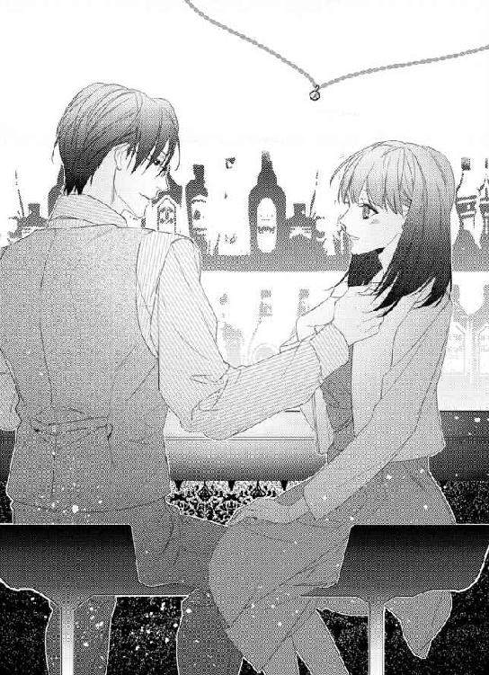
「もう酔った？ 顔が赤い」
微笑んだ一色の顔に、さらに身体中の血が回る。顔をうつむけると、一色が由良の頭を撫でた。
「今日、このホテル予約している。一緒に泊まるつもりで」
由良が最初に期待していた事がまさに起きようとしていて、何度も瞬きをしてしまう。
「その格好を見る限り......月曜の朝まで一緒に過ごしていいのかな？ 一泊延長してもいいし、僕の家で明日から明後日まで過ごしてもいいですね」
会社に出社しても大丈夫な服装を意識していた。一色にはそれがわかっただろう。
「どうですか？ 由良？」
耳元で笑みを含んで言われて、耳が熱くなる。
「私は......ぶ、いえ、一色さんの、家が......」
「じゃあ、明日はホテルで朝食のあと、僕の家に行きましょう」
カウンターの下で手を握られ、由良の手が大きな手にすっぽりと覆われた。
「部屋へ行こうか」
由良は返事が上手くできなかった。胸が大きく高鳴っていたし、一色のあの時のような低い声を感じていたから。
ゆっくりと頷くと、由良は大きく深呼吸をした。胸が苦しかったから。
「マスター、チェックお願いします」
一色が支払いを済ませるのを見て、自分の分は出さなくていいのか、と少しだけ思ったけれど。
これからの事を考えると余裕がなかった。
好きな人と、この素敵なホテルで、抱き合うという事をずっと考えていた。
☆
エレベーターで移動中、いろいろ考えた。今日の下着の色、大丈夫か。もう少し服は考えればよかったかもしれない、とか。あとはきちんとお風呂に入って来たけれど、シャワーを浴びさせてくれるのか、など。
そのどれもで頭がいっぱいで、隣にいる彼を見る余裕はなかった。
カードキーでドアを開ける彼の背中を見て、男の人の背中だと思う。この背中に何度も手を回した。今日もそうなるだろう事を思うと、息が詰まりそうで深呼吸。
一色の背中を追って部屋の中へ入ると、スーツケースが見えた。きっと、空港からこのホテルに直行し、チェックインしたのだろう。ぼんやりとそんな事を思っていると、由良は身体を引き寄せられた。
「一色さん？」
彼の腕に抱きしめられ、キスをされた。初めから深いキスで、由良は一色に翻弄される。
「ん......っあ」
いつの間にか身体が宙に浮き、由良は抱き上げられていた。キスをされながら身体が移動する。その間にパンプスが片方脱げてしまって、バッグも肩から床に落ちてしまう。
「由良」
キスの合間に呼ばれた声は、熱くかすれており、低い声。由良の身体奥底に、ずっしりと重く響いた。
身体を下ろされたのは、ベッドより近くにあった一人掛けのソファー。いつの間にか両方のパンプスが脱げていて、一色のキスに酔いしれてしまっていた。
首に埋められる彼の顔。近づくのはいつもの匂い。
「一色さん、近くにいる」
息を詰めながら言うと、耳を軽く食まれて笑った気配がした。
「寂しかったかな？ 少しは」
首筋に舌を這わされて、声が出せないので頷いた。
「一色さんの、匂いがします。すごく、いい匂い......あのスプレーの」
頤にキスをして、由良と目を合わせる。
「オピウム、という香水です。君には、常習性のような感じで、効いているのかな」
クスッと笑ったその言葉の意味は、まったくわからなかった。
その間にも、ワンピースの上から胸を探られ、少し強く揉まれた。キスをされながら、痛いくらい揉まれる両胸の先端を軽く摘ままれ、身体が震える。ジャケットを性急に脱がされて、剥き出しになった腕を撫でる。
腕を撫でている手は、どこかエッチな感じだった。一色の触れる手を見て、彼の顔を見ると、濡れた音を立てて唇を食むようなキスをする。
その間にワンピースの裾から手が入り、下着とストッキングに手をかけて一緒に脱がせる。足を持ち上げられ、片方だけ脱がせた彼はすぐに、由良の身体の隙間に指を伸ばした。
一色はしゃべらなかった。さっきまで香水の事を言ってくれた唇は、由良の鎖骨辺りにある。隙間に伸ばした指は入り口を探って、それから指が一つだけ身体の中に入って来る。もうすでに反応しているそこは、一色の指を難なく飲み込み、濡れた音を立てていた。
「一色、さ......っ」
腰が揺れるのを止められない。そんな息が上がっている由良にキスをし、空いている手が再び由良の胸に伸ばされ、性急に揉まれた。
甘い声を上げているのがわかる。鼻にかかった息が、恥ずかしい。一色の胸元に知らず手を伸ばすと、ネクタイが指に引っかかり、緩んだのがわかった。指にシャツのボタンも感じてそこに指を這わせると、首元に行きつく。
忙しない呼吸をしているのがわかって、一色も由良と同じだとわかった。
由良の中を出入りする指が奥を突くと、腰が揺れた。小さく声を上げると、一色が指を引き抜く。
「んん......っ」
目を開けると、彼の口が四角のパッケージを破っていた。中身を取り出し、ベルトを緩めて自分のモノにそれをつける。
足を開かれ、一色の片膝がソファーに乗り、彼の身体が近づく。
「は......っあ！」
一色のモノが、由良の中に入る。いつもより、性急に、我慢ができないように。
彼の息遣いが聞こえた。一色はいつも大人で、由良を感じさせる余裕があるように思えた。でも今日は、服も脱がず、由良の中を満たして腰を揺らす。
首元にある指が一色のボタンを軽く引っ掻き、ネクタイを引っ張ってしまう。しかし、ネクタイはするりと解けてしまい、縋るものがなくなった。
代わりに彼のベストを握りしめてしまう。揺すられる腰が堪らない。この前まで感じなかった部分が、どうしようもなくて、気持ち良くて。
鼻にかかった息がひっきりなしに出てしまうのが、抑えきれない。
彼の腕が由良の腰を更に引き寄せ、もう片方の手は、背中に回される。腰の動きが早くなり、さらに由良は身体の底からこみ上げるものが抑えられなくなっていく。
「あ、あ......っい、しき、さ......っん」
忙しない息は最高潮になり、由良は腰をしならせて達した。
同時に一色の腰も強く押しつけられて、動きを止める。
互いに荒い息を吐きながら、しばらくそのままになってしまう。一色は、由良の中をこれ以上ないくらい満たしたままだ。
はぁ、と熱く悩ましげな息を吐いた彼は、少しだけ由良から離れる。それと同時に、ベストを掴んでいた手の力を抜く。
「ベス、ト......皺が......」
手には一色のネクタイが絡みついている。彼は言葉を発さず、ネクタイが絡みついた手に、キスをした。手首にもキスをしながら、由良と視線を合わせる。
彼は由良の中に自分自身を残したまま、熱く甘いキスをした。
☆
夜景が見えるホテルの一室。もちろん、カーテンは全開。
由良は消え入りそうな気持ちで、一色の膝の上で顔をうつむける。
「たった一週間かそこらで......我慢利かないなんて初めてだ」
すでに息は整っている。彼は手早く自分の始末をしたあと、由良の足の間を拭いた。放心していたから、途中でそうされているのに気がついて、足を閉じた。そんな由良を抱き上げて、彼はソファーに座り、由良を膝の上に乗せて、今に至るわけだ。
「君を早く抱きたくて」
フッと笑って由良を覗き込む。由良は首を振った。
「そんな事、言われるなんて......」
うう、と困った風に言うと、彼は服の上から由良のささやかな胸に触れた。
「痛くなかった？」
性急に強く揉まれた事を思い出し、彼を見る。
「ちょっとだけ......私、小さいので、触りごたえがないから、でしょう？」
「違います。揉んだら止まらなくて。僕は、君に飢えてたんだな、と。君を抱きたくて、バーでどうにか早く部屋に連れ込めないか、考えていた」
一色は由良の胸を優しく撫でて、由良の頬に自分の頬を寄せた。
「情けない、本当。それに、何で君は今日、ワンピース？ 脱がせたくても脱がせられないし、そうしていたらもう繋がりたくてたまらないし。君の言う、素敵な上司まるつぶれです」
ため息をつく一色を見て、由良は顔を赤くした。
こんな狭い、一人掛けのソファーで。服も脱がないで、二人とも下半身だけ緩めて。
一色がほとんどしゃべらないで由良と身体を繋げたのは、それほどまでに由良の事を欲しかったからだろうか。
そう思うと、心臓が早く打ち始めて、顔が熱くなってくる。
指に絡んだネクタイに触れていると、それを一色がシュルリと引っ張る。ソファーの腕置きの辺りにかけると、由良の背を撫でた。
「今度は、脱がせて、抱いていいかな？」
ワンピースのファスナーのラインを撫でられた。由良は彼の腕に触れて、ゆっくりと頷き、顔を下に向ける。
一色の指がファスナーにかかって、ゆっくりと下ろされた。下着のホックに触れて外すと、ワンピースと一緒に、肩から下着も脱がされて行く。
一色の顔が近づく。由良の目の前で、一色の綺麗な目が瞬きをした。
「会いたかったよ。夜はまだこれから。今度は、ゆっくり、愛します」
唇をくっつけるだけのキスをして、また由良の身体が宙に浮く。
「一色さん？」
「ん？」
「す、好きです......」
顔を赤くして必死で言うと、彼は微笑んで由良の唇に、自分のそれを近づけた。
「僕もです」
唇の上でそう言われて、由良の唇が彼のに覆われる。
そうしてベッドに下ろされて、由良はこの上ないほど甘く愛されるのだった。
☆
一色が一日早く帰国したその日にホテルで会って、甘い時間を過ごし、その翌日は彼の家で一日過ごした。そして今日は、彼の家から初めて出社した。
もちろん時間をずらして出社したが、何だかそれがどこかくすぐったい感じだ。
こんなに幸せでいいんだろうか、と思うほどに。
出社して間もない時、ほぼ全員揃ったところで、一色が部下に声をかけた。
そしてその隣には、髪の毛が長い、華やかで綺麗な女の人がいた。
「紹介します。僕の同期で、森本芽衣子さん。アメリカ本社勤務している、優秀な人です。今回は、研修として日本支社で三週間ほど滞在します。じゃあ、森本さん、挨拶を」
グレーのゆったりとしたパンツスーツに、控えめなピアスとちらりと見える腕時計。そんなに派手ではないのに、華やかに見えるほどの綺麗さが際立つ。
「素敵な人だね、由良」
小さく声をかけてくる未來に同意するように、そうだね、と答えながら彼女を見る。
「初めまして、森本芽衣子です。一色君が優秀な人、と言ったけれど、彼の方が優秀です。早く本社勤務をして助けて欲しいくらいです。三週間という短い間ですが、精一杯務めさせていただきます。よろしくお願いします」
自信のある、それでいて傲慢に見えない雰囲気。
一色の事を、一色君、というほど親しい間柄なのだろう。二人は笑いあって、それから一色が口を開いたのだが、何を言っているのか耳にあまり入らなかった。
なぜかと言うなら、一色と芽衣子が並んだ姿はすごくお似合いの、社内カップル、という感じだったから。未來と並んでいた時も思ったけれど、それの比ではない。落ち着いた大人のカップルに見える。
しかも親しいらしく、二人は笑顔で話をしている。それを見ると、やっぱり由良は華やかではない、普通の女だと実感してしまう。
さっきまで幸せな気持ちだったのに、何だか一色と芽衣子を見ると、あまりにも素敵過ぎて。今日の由良はいつもより、明るい服を着ていると思う。芽衣子の方が暗い色の服を着ているのに、彼女の方が輝いて見えた。
「しかも、すごくオシャレ......」
「うん、わかる！ 洗練された感じだよね？ 私達にはない大人の雰囲気っていうか。あのパンプス、すごく高いヒールだけど、自然に歩けてるしね」
絶対に八センチはあるヒールだった。黒いパンプスで、普通のデザイン。それが一番スーツに合うのはよく知っている。
由良の服装はいつもと違って頑張ってオシャレをした方だ。ワンピースに薄いピンクのジャケット。パンプスもいつもより高いヒールを履いているが、彼女のように素敵ではない。
せめて髪の毛くらい、綺麗にアレンジできていれば、と思うのは芽衣子の髪の毛は緩さもある綺麗な纏め髪だからだ。
「市木さん、聞いていたかな？」
パチン、とネガティブな思考から覚めた。一色の声を聞いていなかったので、頭を下げた。
「すみません、もう一度お願いします」
由良の言葉に微かに笑って、じゃあもう一度、と一色は言った。
「森本さんに、君の企画を手伝って貰います。短い間ですが、お互いに学ぶ事もあると思うので。よろしくお願いします、企画リーダーさん」
言われた言葉に一瞬頭が白くなる。
一色が優秀だと言った人を、自分の下で使う事になるなんて思わなかったから。
「よろしく、市木さん。日本での仕事は久しぶりだから、戸惑うかもしれないけれど、お願いします」
そつのないその言い方に対して、由良は恐縮して頭を下げるしかなかった。
初めての企画リーダーだというのに、格上の人を使う事になるなんて、思いもしなかった。
☆
イベントが差し迫っている事もあり、しばらく一色と会えなかった。彼は始終打ち合わせや会議でやっと会う約束した週末、一色からメールで誘われた事が嬉しくて、すぐに返事をした。
待ち合わせの場所はコーヒーショップ。一色も時々ここでお茶をするのかな、と想像してしまう。彼の家の最寄り駅で、思ったより早く着いてしまったので、カフェオレを頼んで待っている事にした。
椅子に座って落ち着くと、今日の出来事を反芻した。
こんなに早く目的の場所にいるのは、芽衣子のおかげだった。森本芽衣子という人は、一色が優秀だと言ったその言葉に違いなく、仕事ができる人だった。
由良の企画は小さな企画だ。デザイナーも五人に絞り、現在スケジュールを確認中だった。が、そのスケジュール確認は、全て今日のうちに終わってしまったのだ。なぜなら、スケジュールに難色を示すデザイナーの人達に、魅力的な提案をしたからだ。
『展示即売、というのはいいけれど、展示品が売れないんじゃ元も子もないから......展示品が売れ残った場合、次の展示会に繋げたらどうかしら。今回の企画は五人で、その次の展示会は違うデザイナーでしょ？ でも、前回のデザイナーを紹介しつつ、その人達の作品も販売する。たとえ、違うデザイナー目当てで来たとしても、目に留まるじゃない？ その代わり、商品は、コーディネーターさんに選んで貰うとか......企画コンセプトもあるし......どうかしら？』
いいですね、と言ったのは優馬で、未來ももちろん同意した。由良だって、そうですね、と心から思って言ったのだが。彼女は善は急げ、とデザイナーに電話をかけまくり、全てのデザイナーに了承を得たのだ。
あとは展示する場所を決めなければならないが、それも彼女はピックアップしてくれた。仕事が早い事を褒めると、一色からどんな仕事を手伝うか聞いていたから、事前に予習していたのだそうだ。
『若い子の企画っていうだけあって、デザイナーもこれからの若手ばかりで楽しそう。絶対に成功させたいって思ったのよ』
そうして綺麗な笑みを浮かべるその人は、定時で帰りましょ？ と優馬や未来、そして由良を定時で帰るように時間配分まで考えていた。これでは誰がリーダーかわからない、と言った時も彼女は優しかった。
『私は、あなたの企画をより良くするために提案をさせて貰っただけ。初めての企画なんでしょう？ コンセプトもシンプルで、原点に返った感じで、すごくいいと思う。この進行具合だったら、予定より早めにできそうね。私、研修期間が終わっても関わりたいくらい』
綺麗な唇に笑みを浮かべた彼女は、颯爽と帰って行った。
「あんなに素敵な人が、一色部長と、同期......か」
ため息をつきながら、携帯電話の黒い画面に映った自分を見る。
さすが一色と同期で本社勤務というだけあるその人と自分は違い過ぎる。黒目が印象的というけれど、そんなに大きいわけではないし、何と言ってもいつも思うが美人ではない。
「何でため息なんだ？」
上から声が降ってきて、慌てて顔を上げる。
「あ、部長、お疲れ様です」
頭を下げると、一色は由良のすぐ前の席に座った。いつの間にか一色と待ち合わせた時間になっていた。
「いつの間にか時間でしたね」
由良が笑顔を作って一色に言うと、顔を覗き込まれる。
「で、どうしてため息ついてたのかな？」
一色に笑みを見せて、えっと、と話す。
「研修に来た、森本さん......すごくできる人で、びっくりして」
「ああ、そう。彼女はいつもあんな感じ。上に行くのも僕より早くて、本社勤務も今年で二年目かな？ 勉強になるでしょ？ 彼女の仕事運びとか」
「はい......おまけに美人で、すごいなあ、って。私にはない物ばかりだから」
「彼女にない物を君は持ってる」
きっぱりと言われて、微笑まれた。
「森本と比べる事ない。君は君でいいんです」
さらにきっぱりと言われて、面食らう。でも、その言葉が嬉しくて自然に笑顔が浮かんだ。
「ありがとうございます」
「いいえ。ところで、社外でも僕は部長のまま？」
あ、と声に出して、慣れない言葉を口に出す。
「一色さん......このあと、あの、ご飯とか行くんですか？」
一色の事を一色さん、と呼ぶのには慣れない。でも、口に出すとこそばゆい感じと、本当にこんな風に呼んでいいのか、という思いもある。
でも特別なのだと、感じる。一色さん、と呼ぶ女性社員はいないからだ。
いないから、と思ったところで一人だけ今はいる事を思い出す。
綺麗な、森本芽衣子という、一色の同期。彼女は一色を気兼ねなく、一色君、と呼んでいた。
「どうしようか？ とりあえず、ウチに来ない？」
誘われて、自然に頷いてしまう。
しかし、頷いたあとに一色が疲れているのではないかと思って、口を開く。
「でも、一色さんここのところずっと、忙しかったでしょう？ 会議もですけど、展示会場の現場へ行ったり、打ち合わせも多くて......家ではゆっくり休んだ方が」
由良も忙しかったが、一色はもっと忙しかったはずだ。毎日由良より遅く帰ったと思うし、外回りも多くて大変そうだった。
家ではゆっくりした方がいいと思った。由良との時間を持ってくれるのはすごく嬉しいけれど。
「だから、君とゆっくりどこにも行かないで、週末を過ごしたいと思ってるんだけど」
その言葉に、ドキドキした。由良と一緒にいた方がゆっくりできる、という意味にとっていいのだろうか、と。
「私といて、ゆっくりできますか？」
「君とだったら、絶対にゆっくりできる。恋人らしい、週末を過ごしたいですが？」
一色の言葉が心に響いた。恋人らしい週末、絶対にゆっくりできる、と言われて由良もまたもっと一緒にいたいと思った。
「食事はテイクアウトしない？ 家に帰っても申し訳ないけど、ろくなものがないんだ」
由良は頷いて、笑みを浮かべた。
「はい」
決まりだ、と言って手を取られて立ち上がる。バッグを持ち直すと、彼から手を差し伸べられ、自然と手を繋ぐ。
男の人と手を繋いでこんな風に歩くなんて思いもしない。まして、それが一色なんて、と思いながら見上げると微笑んだ彼が言う。
「由良？ どうかした？」
「いいえ。何か、すごく、ドキドキします。こんな風に自然に一緒に歩くなんて思わないから......」
いつも憧れて見ていただけの存在。
その人が、隣にいるなんて、これ以上のドキドキはないほどだ。
「僕もそう思ってた」
「え？」
「ドキドキしてますよ。この子に」
トン、と繋いでいる方と反対の手で、額を軽く触れられた。小突かれた感じだけど、その仕草が甘くてさらにドキドキした。もちろんその言葉にも。
「本当ですか？」
「本当です」
微笑む一色が好きだと思う。
いまだに信じられないけれど、この人は由良の彼で、お付き合いをしているのだ。
夢みたいにふわふわとしているこの関係がいつまでも続けばいい。
由良はそう思って、一色に微笑み返すのだった。
10
一色の家に行く前に、スーパーに立ち寄った。よく利用するスーパーで、野菜が新鮮だと彼は言った。
そうして結局、籠の中に手際よく入れていく物はほぼ食材ばかり。シメジやキャベツ、小松菜などポイポイと入れて行くのを由良は見ていた。もちろん生鮮食品も忘れない。
「テイクアウト、は？」
厚揚げを入れたところで、あ、と気がついたような顔をして笑った。
「疲れててもつい作ってしまうんだ。意外と貧乏性。大学時代大変だった名残で」
「大変だったんですか？」
「そうですよ。親が死んだってすぐに保険金が入るわけではないし、親名義の預金はすぐに使えないし。バイト三昧で、単位だって危うい時があったよ」
そんな風に見えない一色を、目を丸くして見ると、可笑しそうに笑った。
「そんなに目をクルクルして。世の中、こういう人だっているんですよ」
「そうでしょうけど......私だったら路頭に迷いそう」
二十歳の時に一人ぼっちになったら、右も左もわからないだろう。一色はきっとその頃から頭が切れたのだろうと思う。乗り越えて来たのだから。
「その寸前だったけど、周りの人の助けを素直に受け入れたら、何とかやれたかな」
最後にジャガイモを入れて、由良を見る。
「何か食べたいのある？」
ジャガイモをじっと見つめてそれからハッとする。
「あ、いや！ 私、一色さんに作って貰ってばかりです！ たまには、私が！」
「じゃあ、今度ね。君の家に、行った時にでも」
家に、と言われて顔が熱くなる。いつか来るのであれば掃除をしないと、と片づけをしていない自分の家を思った。
「今度、私の家で、必ず」
彼を見上げると、大きな手が頬を撫でた。
「じゃあ、約束です」
そして、笑顔を見せる一色を見て、何を作ろうかと頭を巡らせる。笑顔を見せると、今度は頭を撫でる。
「今日は、適当に思いつきで作ってもいいかな？」
「はい」
「じゃあ、肉じゃがでも」
由良は自然と笑顔を浮かべてしまった。実は、肉じゃがが大好きで。味の沁みたジャガイモはほくほくして美味しいのだ。
「好きなんですか？」
「はい」
「目がキラキラしてる。じゃあ、美味しく作るよ」
一色の言葉に笑顔を向けて、レジへ向かって清算を済ませる。袋が二つになったので、軽い方は由良が持つ事にした。
「森本さんって、素敵ですよね。仕事もすごくできて」
「ああ、うん。芽衣子はサバサバしてて、仕事も負けず嫌いでね。美人なのに、男っぽいところもあった」
芽衣子、と呼び捨てるところにドキン、とする。
親しそうだとは思っていたが、下の名前で呼ぶとは思わなかった。
「お付き合い、していましたか？」
「まさか......してないよ。ただの仕事友達」
すぐに答えた言葉にほっとした。
でもきっと一色は、彼女のような人とお付き合いをして来たのではないだろうか。本当にお付き合いをした事ないのかな、と変に思ってしまうのはいけない事？ 恋愛をした事がない由良にはわからない。
そうしているうちに、一色の家について、周りを見る。周りはすごいビルだらけだ。これだけの一等地に平屋とはいえ広い家。ずっと一人で住んでいたのだろうかと思うと、やっぱり寂しい気がする。
寂しいと思うと、誰か傍にいて欲しいと思う気持ちが出てくると思う。そういう時、一色は誰かを支えにしたのだろうか、と変に勘ぐってしまった。
一色の過去に好きな人がいたとしても、やっぱり由良は一色が好きだと思う。
彼女になれただけでも奇跡で、あんな出会いから始まってしまったのに、と自分をちょっと責めたくなってしまう。
「すぐできるから座ってて。先に風呂に入る？」
「えっ!?」
「どうした？」
「あ......えっと、私、下着とか、持って来てないので......泊まる事は考えていませんでした」
明日と明後日は休みの週末。お風呂に入るかと聞いたのは、一色が由良を泊めるつもりでいたからだ。だが、彼の家に泊まるとは、思いつかなかった。仕事もあった上に、芽衣子のような素晴らしい、しかも綺麗な先輩の事が、由良の中で消化できていなかった。一色と仲がいいところを何度も見てしまっていたので、それを考えてばかりで、一色の家に泊まるというのがまったく頭になかった。
さっきからずっと、一緒に過ごしたいと言われていたのに。
「週末は考えて欲しいけど」
苦笑した一色が由良の髪の毛を軽く撫でた。
「家に、上がって、ご飯だけって......勝手に思っていたので」
確かに久しぶりに会った。でも、何だか考えられなかった。一色とは、出張前に泊りがけでこの場所で何度も抱き合ったのに。
思い出しながら顔を赤くすると、しょうがない、という感じの顔をして上着を脱いでネクタイを解いた。スラックスとベストだけの姿になり、シャツの袖をまくる。
「だったら、そうだな、じゃあ座って二十分待って」
「二十分？」
「そう、あの時計できっかり二十分間」
そうして笑みを浮かべて、ジャガイモを洗って、ピーラーで皮をむく。それから適当に乱切りにして、玉ねぎを切る。人参もすごい速さで切って、それからお肉を取り出してすべて鍋へ入れた。醤油とみりん、砂糖を入れて蓋をして、タイマーをセット。それからお米を鍋に入れて水を入れて、これもタイマーをセット。
確かにそれらの事を二十分で終えて、手を洗って由良を見る。
「僕が家に誘った時は、泊まる事考えて」
コクリ、と息をのんだ。そんな事、いつも考えるようにできていないから。
「会えなかったから、会いたかったし、一緒にいたい。時間が許す限り」
一色の家に上がるのはまだしも、料理まで振る舞って貰っている。それだけでも十分なのに、誘われたら泊まる用意をなんて、ドキドキしてしまう。
「僕の家に上げるのは、由良だけだから。何なら今度、下着と服、置いて帰るといい」
「......あ、えっと、すみません。これから、きちんと、持ってきます。でも服とか置いて帰るのは、迷惑ですし」
荷物を置く場所なんて、たくさんあるだろうけれど。そんなの図々しい気がしたのだ。それに、そんな事をしたらいつでも一色の家に行けるようになってしまう。いいんだろうか、という思いがやっぱりあるから。
「迷惑じゃありませんよ、由良。僕一人で、こんなに広い家に住んでいるんだから」
そう言いながら彼が近づく気配。オピウムの匂いがして、顔を上げると由良の身体が宙に浮いた。
一色の言葉は嬉しかった。でも、何だか確信が欲しい気がして、さらに聞く。
「いつでも、ここに来て、いいですか？」
「もちろん。一人で過ごすのに慣れていたけど、君が傍にいるのが自然になって来たのかも」
「自然って......あの、重くないですか？」
「君は軽いです」
一色の言葉にどこか甘さを感じる。傍にいるのが自然になって来た、と言われた。そしていつでも来ていいと。それは由良と一緒にいたい、という事なのだろうか。
彼の言葉に由良は嬉しくなった。それと同時に顔が熱くなり、一色の鎖骨に軽く触れて、胸に顔を埋める。頬を寄せると鼓動が聞こえるのと、温かさを感じた。
彼の匂いが鼻をくすぐり、心臓が高鳴る。顔が近づいて、由良の唇を柔らかい一色のそれが覆う。触れるだけだった唇に舌が触れた。上唇を食むようにされたあと、下唇も同じようにされて、キスが深くなっていく。
濡れた音を立てる唇に応えているつもりだが、翻弄されてしまう。時々強く吸われて、やや痛いくらいだ。
「君の服や物を置くくらいのスペースはあります。何なら、引っ越して来ますか？」
キスの合間に言われて、返事をする前に唇が重なる。
「ふ......っん」
鼻から漏れる吐息が熱い。濡れている唇の端から、唾液が少し零れ落ちると、それを一色の舌が掬うように舐める。
キスに感じ入りながら、引っ越して、という言葉に赤面する。まるで同棲するようだ。彼が由良を抱き上げ、進む方向を見る。襖を開けたその先は寝室だとわかっている。
「あの、一色さん？」
どうにか声を出すと、唇を吸ったあと返事をした。
「何でしょうか？」
「ご飯、食べるんじゃ......」
「したあと食べられるように、タイマーをセットしたから」
でも、と思いながらさらに聞く。
「混ぜなくていいんですか？ 肉じゃが、焦げませんか？」
「僕の家の鍋はみんな無水料理できるものだから、大丈夫」
そうしてベッドに下ろされてから、一色を見上げると、なぜか彼と同期の芽衣子を思い出す。彼女の仕事ぶりを見て、この週末は仕事をしないと、と思っていたのだった。
「私、明日仕事が......リーダーだし、森本さんの足を引っ張りたくなくて......」
「仕事で不安なところがあれば、あとで僕が見てあげます」
「でも......！」
引き下がらない由良の唇に、小さくキスが落とされた。軽く噛みつかれて、痛いのになぜだか甘い疼きが身体を走った。
「君をしばらく抱いてない」
耳元で言われて、身体が震えた。息を詰めて、一色を見上げる。
一色が、仕事を見てあげるから、と言っている。由良は自分でやらないといけないと思うのに、甘えているみたいだ。
「私、すごく甘えているみたい、一色さんに」
由良の言葉に笑った彼は、頬にキスを落として、目蓋にもキスをした。
「もっと甘えて欲しい。由良は遠慮ばかりだ。でも、今はプライベートだからね」
頬を撫でられ、その優しさと温かさにドキドキしてしまう。
「いいよ、そのままの由良を、考えられなくさせるから」
考えられなくさせる、という言葉だけで腰が砕けそう。
彼の唇が由良の頬にキスをしてそこを食む。濡れた音を立てて頬を離れたあと、首筋にキスをされて、次にゆっくりと唇に唇が重なって来る。
一色の大きな手が由良のささやかな胸の上に置かれ、揉みながら撫でる。どんどんキスは深くなって行き、舌を絡めるキスになった。
キスの合間に息を吸い、何も考えられなくなるのはすぐだった。
彼の唇が気持ち良くて苦しい。そして触れられる胸は熱を持ち始めて、先端がピンと張って来る。
「......っ」
「身体はすぐにこうなるのに、君はいつも仕事ばかり。せっかく目の前に付き合っている男がいるんだ。忘れてバカになるのも悪くないよ？」
言いながら、ブラウスのボタンを外される。胸を下着の上から甘噛みされて、息を詰める。
「由良、好きだ」
その言葉を聞き、泣きそうな気持ちになり。
由良はその背中に手を回し、一色が与えるもののすべてを受け入れるのだった。
☆
呼吸が忙しない。まるで、激しい運動をしたように、心臓が高鳴っている。
投げ出したような腕は上げるのが億劫で、隣にいる彼を見るので精一杯だった。彼もまた息を乱し、仰向けになり髪の毛をかき上げる。ソフトな光の中、しっとりと濡れている額が見えた。それが彼の整った容姿と合って、壮絶に色っぽく見えてドキドキして。
先ほどまでの、あの色っぽく何とも言えない彼の表情を反芻すると、もう一度見たい気がしていた。
そして、ふと思う。
「こういう事すると......いろんな考え事、吹っ飛ぶんですね。私、何も、考えなかった」
何も考えず、一色が与える快感に応え、それから声を抑えて喘いで。男らしい背中に手を回し、一色が由良しか見ていない瞳を見ては、夢のような、それでいて現実の肌を感じていた。
一色は由良の言葉にフッと笑う。大きな手が頭を撫でたあと、惜しげもなく裸の身体を起こす。下着を身に着けたあと、近くの押し入れを開け、スウェットを取り出した。テーブルの上にあるタバコを取り、スウェットのみを身に着ける。
上半身裸の彼は窓を開けて桟に座り片足を乗せ、タバコに火をつける。その仕草は堂に入っていてカッコ良かった。
由良が布団を引き寄せ一色を見ていると、また笑みを向けられる。
「二人の時、君は僕の事を考えていればいいんです。お互い、いい事ばかり。僕は由良不足を、君は僕と気持ちいいセックスをする事ができた」
「そ、そんな、私......」
顔が熱くなっている。きっと赤くなっている事だろう。
「良くなかった？ 僕は、すごく気持ち良かったけど？」
タバコを吸うと、焼けている赤い部分が移動する。それを見ていると、一色が由良をじっと見返した。
「バスローブを貸すから、日曜までそれでいたらいい。下着は、なしで」
さらに顔を赤くする事を言われ、布団をより引き寄せる。
タバコの煙を外に吐き出しながら、一色は笑って嘘だよ、と由良に言う。
「明日、下着を買いに行けばいい。日曜の夜には帰すから」
言いながら煙草を灰皿に押しつけ、それからベッドに座って身体を横たえる。布団を被るとうつ伏せになった。タバコの匂いは好きではないのだが、一色のタバコの匂いは何だか甘い匂いがして好きだ。
頭を撫でられ、じっと由良を見ながら口を開く。
「芽衣子は、君にとって悩む存在ですか？」
芽衣子、と呼ぶそれに心が痛む。けれど、それは抑えて、首を縦に振る。
「私は企画リーダーですけど、森本さんの方が、お仕事できますから。リーダーの意味がないような気がします」
由良が言うと、一色は小さくため息をついて笑った。
「彼女はね、入社当時ミスが多い社員だった。でも、彼女はそれを覆して、いまや本社のエリート社員。芽衣子は挫折も知っているから、仕事ができるんだと思う。いつの間にか、先に出世してしまっていた」
そんな風に見えない人だから、由良は信じがたい。けれど同期の一色が言うのだから、真実なのだろうとは思う。しかし、任された仕事を由良はしっかりできていない気がする。今回の企画が成功したら、第二弾があって、と考えてしまうのだ。みんなの手を借りてやっとできている気がするから。
「もう一回いい？」
「え？」
「仕事って、失敗もあるけれど、得るものは大きい。でも、セックスの余韻を邪魔するのなら、もう一回するけど？ まだ、足りないし、ね」
一色の言葉に顔を赤くして、首を振る。とりあえず、さっきの一回が濃厚な気がして、まだ無理だと思う。
「一色さん、大人です。それに、何もないと言っても、森本さんの事名前で呼び捨ててるし、気になります」
目を伏せて言うのは、そこまで自分に自信がないからだ。自信がないなら言わなければいいのに、という思いだってあるけれど。芽衣子と呼ぶそれがすごく気になってしまう。
「だから付き合っていたかって聞いたのか」
笑った一色は、由良の方を向いて頭を撫でた。それから髪の毛を耳にかけて、まるでわかったような感じで由良の頬を撫でた。
「ただの親しい同期で、彼女の事は同期のみんなが芽衣子、って呼ぶよ？ 彼女、入社当時は鈍くさくて、眼鏡で、オシャレじゃなくて、化粧もしてなくて......最初はよく泣いてたから、みんな放っておけなかったんですよ」
「......信じられない」
「本当ですよ。だから、芽衣子が、芽衣子が、ってずっとみんな心配していた。でも、僕は芽衣子にどちらかというと辛口だったし、泣き虫で嫌いだった時があったので。認められて、上に行く彼女が疎ましかったかなぁ......あれだけ迷惑かけておいて、って。でも今は、楽しく一緒に仕事ができる仲間みたいなものです」
「それも信じられない感じです......嫌いだったなんて、思えないです」
少し声を出して笑った彼は、起き上がってサイドチェストに手を伸ばした。それから、由良の胸元にシュッと何かを吹きつけられる。途端に甘いけれどスパイシーな感じの匂いが広がる。
「君が、僕の事を意識して嫉妬してくれるのは嬉しい」
耳元で、熱を持った低い声が聞こえたかと思うと、彼の唇が軽く耳を食んだ。
一色の匂いが、鼻孔をくすぐる。身体が近づいて、由良の上に少しだけ重なり、重みを増す。
「嫉妬、ってそんな事......」
「君との始まりが悪かったから、そんな風に思ってくれるのは嬉しいよ」
始まりは、由良が酔っぱらって一色に迫ったせいだ。
「それは、私のせいだと思うので」
「手を出したのは、僕だから」
「でも......」
黙るように由良の唇に人差し指が置かれて、小さく音を立ててキスをされた。
「初めての時、君は受け身だった。もともと女性は、男を受け入れる側だけど」
耳元でクスッと笑いながら言われて、顔が赤くなる。
「ご飯、食べる？」
甘い雰囲気の中、そう言われるとお腹がすいている事に気付いて、頷く。一色は由良の頬を撫でて、ゆっくりと起き上がる。
「じゃあ、今度こそ風呂に入っておいで。温め直せば大丈夫だろうから」
たぶん食事はでき上がっていると思うけれど、まさかお風呂までためているとは思わなかった。
「一色さん、いろいろでき過ぎて、びっくりします」
「マメな方なので。これが嫌いな人もいたけど、君は大丈夫？」
苦笑した一色を見て、何度も頷く。
「すごく、楽過ぎて......頑張ってないから、一色さんこそこんなズボラな私で、いいんでしょうか？」
由良が聞くと、もちろん、と言う。
「何だか君は、甘やかしたくてね。何もしないで、ちょこんと座ってる君が、好きですよ」
何もしないで、という部分にちょっとだけ思うところがあって見上げる。
「何もできないわけじゃないんですよ？」
「知ってる。君は、気遣いが上手だからね。でも、僕の前では、それでいいかな」
そうしてベッドを下りて、シャツを着ると由良にはＴシャツとスウェットをくれた。
「下着なしで服を着るのって、何だか変です」
下着は、と探すと由良の服とともに一色が持っていて、顔が熱くなる。
「それ、返してくれますか？」
「洗濯したらね。下着なしで過ごせばいいよ」
「それは、ダメです、無理ですよ」
由良が顔を赤くして言うと、一色は何でもないように答える。
「下着なしでも我慢ですよ、由良」
襖を開けて、それからこちらを振り返り微笑んだ。
「どうせ君、また脱ぐんだから」
そう言って笑みを浮かべたまま、一色は襖の向こうへ行ってしまう。
残された服は一色のＴシャツとスウェットのみ。
由良は顔を赤くして、先ほどの言葉の意味を理解し、一度ベッドに突っ伏すのだった。
11
会社がやっているイベントの一部分を任された由良の企画は、芽衣子のおかげで滞りなく準備を行う事ができた。もちろん、活躍したのは芽衣子だけではない、同期の未來や優馬もである。
由良はと言えば、会場に頻繁に通い、コーディネイターと打ち合わせをし、進行の確認をした。希望の場所を押さえる事ができ、販売する展示品も前日にはそろって、由良は胸を撫でおろした。
優馬や未來はＰＲとして小さなポスターを作り、レイアウトを考えるのだが、その仕事がとても早くしかもセンスが良かった。なので、誰からもすごくいい、と絶賛だった。
由良の仕事はほとんどが周りから助けられてできたものばかり。ちなみに芽衣子は、と言えば最後まで由良の仕事を手伝ってくれた。
「私何もできなくて。今回はすごく勉強になりました」
由良が芽衣子に言うと、芽衣子は首を振った。
打ち合わせのため、展示会場からの帰り道、お茶をしたあとに思い切って言った。最近はきちんと自分の言葉で話ができるようになった気がする。それも一色と付き合ってからのような気がしていた。
「全然！ 私こそ勉強になった。近いうちに日本へ戻ってくる予定だから、楽しかった。デザイン関係の仕事は華やかでやりがいもあるから、いつまで経っても関わっていたいと思ってる」
「そうなんですか？」
アメリカ本社勤務の芽衣子がそんな風に思っているとは思わなかった。だって、本社勤務と言えば将来決まったも同然のような気がする。それに、アメリカで暮らすというのはやはり、憧れる女性だって多い。未來はいつもＮＹで暮らしたい、と言っている。
「そうよ。それに、何もできなくて、と言ったけれど市木さんがいてくれたから、スペースもすぐに押さえられたと思う。日本へ帰って来た時、市木さんと仕事をするの、楽しみだわ」
ふふ、と笑った芽衣子は綺麗で、やっぱりいいなぁ、と思う。それと同時に褒められたみたいで嬉しかった。
「でも私が来たら、交代みたいな感じで一色君がアメリカかな？」
「えっ？」
「だって、一色君はとにかく優秀だし......いつも、出張が延長になるでしょう？ あれって、ＣＥＯが引き止めてるのよね。何かしら理由つけて」
また芽衣子は笑って、そうしながらため息をつく。
「でもね、いつも、日本で頑張りたいから、って言って本社勤務をのらりくらりかわしてる。日本のデザイン事業部はまだできて間もない部署だけど、アメリカ本社はかなり有名なのよ。だから、力ある人が行くのは当然なんだけどね」
芽衣子から聞かされたのは、結構衝撃だった。
交代みたいな感じで一色君がアメリカかな？ と言われて想像する。もし一色がアメリカへ行ってしまったら、と。
「そう、ですね。でも、一色部長はみんなから慕われて、尊敬されていますから......行ってしまったら寂しくなると思います」
誰だってそう思う。由良はなおの事だ。もし現実に、それが決まってしまったらきっと一色はアメリカへ行ってしまう。
現実になりそうなアメリカ本社へ栄転というそれに、由良はどう対応すればいいのだろうか。お互いに好きだと確認しあい、今もいい関係が続いている。ついこの間は、一色の家で食事をとったあと、ベッドで愛し合って、たわいもない話をした。その時に、アメリカという文字はまったく出て来なかった。
「一色君、デザイン事業部に配属されてからは、力入れてたからね。営業部にいた頃より、ずっといい仕事をしてると思う」
きっと、由良が入社する前の話だろう。営業部にいた、という話は聞いた事がある。そこでの実力が認められて、課長へ昇進とともにデザイン事業部へ異動になった、と。
「正式には決まってないけど......そのうちにね。もし本社異動となったら、しばらく仕事が一緒にできるだろうから、楽しみだけど」
本当に楽しみだと言わんばかりに笑みを浮かべるのを見て、もしかしたら内々には決まっている事なのかも、と思った。
「日本に研修に来てよかった」
ふと芽衣子が話を変えるような発言をして、由良を見つめる。
「市木さん可愛いし、一生懸命だし。何だか原点に戻った気もしてる。出会えて、一緒に仕事をできて良かった。たぶん、一色君は私の事を考えて、あなたと仕事をさせたんだと思う」
芽衣子の言う事は、由良には理解できなかった。
「部長が、森本さんの事を考えて、ですか？」
首を傾げると彼女は笑ってそうね、と言ったあと由良の首元を指さした。
「そのネックレス、素敵ね」
「あ......これ、ですか」
ピンク色の石に金色のネックレス。一色からプレゼントされたものだ。
笑みを浮かべてネックレスに触れる。その様子を見て芽衣子が、ふふ、と笑った。
「もしかして、彼氏からのプレゼント？」
「......はい、そうです」
出張から帰ってきた一色が、ホテルのバーで首につけてくれた。そのあとの熱い時間を思い出すと、顔が火照ってしまう。
「彼氏、センスいいわ。市木さんの白い肌と細い首に、すごく似合ってる」
「ありがとうございます」
笑顔で礼を言うと、芽衣子は綺麗な顔を崩して笑った。
芽衣子の言う事は素直に受け取る事ができる。素敵な人だと、心から思う。
そう思う反面、芽衣子の口から聞かされた事は、ほんの少し由良の心に波を立てた。まったく話した事のないアメリカ本社勤務への打診。一色は由良にだったら話してくれるはず、と思いながら、芽衣子と一緒に歩きながら会社へと向かうのだった。
☆
「割と盛況だなぁ。っていうか、結構びっくり。由良が押さえたデザイナーってみんな人気あったんだなぁ」
「え？ そうなのかな？ 私の独断と偏見で選んだ感じがして、高崎君と未來には悪かったかも、って思ってたんだけど......」
「いやいや、見てわかんだろ？ あんな小さい、Ｂ５程度のチラシをその辺に配っただけでこれだけ集まってるんだから。デザイナーがいいからだって。それに、デザイナーをチョイスした由良のセンスがいいんだよ」
またもや褒められた気がして、由良は嬉しくもなるが顔が熱くなる。
手伝って貰った一色にも感謝したい。
初日は一般客ではなく、業界向けの関係者だけの入場だった。由良の企画は人気で、商談が絶えず、好評だった。
「すごく嬉しい......初めての企画だから未來や高崎君、それに森本さんの足を引っ張りたくなくって」
同期の未來や優馬は優秀だから、いつも自分だけあぶれているような気がしていた。でも、優馬からこんな言葉を言って貰えて、本当に嬉しい。
「いつも引っ張ってないだろ？ それに、いつもゆらっちには感謝してるし」
「え？ どうして？」
まったくもう、と苦笑しながら優馬は由良の頭を撫でた。
「ま、そこがゆらっちのいいところさ」
優馬の言っている事がよくわからないまま、グリグリ頭を撫でられていると、後ろから芽衣子の声が聞こえた。
「仲がいいのね、高崎君と市木さん」
振り向くと、芽衣子とその隣に一色がいて、由良は頭を下げた。
「お疲れ様です」
由良に続いて優馬も頭を下げて挨拶をすると、一色がお疲れ様、と言った。
「一日目だっていうのに盛況だ。一週間でどれだけの売り上げが上がるのか、って思いますね」
一色がそう言うと芽衣子が明るく笑って頷く。
「そうなの。市木さんの選んだデザイナーが大ヒット。次に繋げられそうで、私も安心だわ」
展示即売は盛況で売り上げを意識するなら、期待できるだろうと思う。展示品が売れてしまえばいいと思うのだが、そこは気が抜けないところだ。
「本当に繋げられたらいいんですけど......」
由良が自信なさげに言うと、一色が笑みを浮かべて口を開く。
「そう思うと、繋がりませんよ、市木さん。芽衣子も褒めている事だし、後ろ向きに考えないように」
一色から言われて、そうだな、と思いつつ頭を下げる。
「すみません、そうですね。頑張ります」
「大丈夫よ、一色君。市木さんは、すごいパワー持ってるから。ね？」
微笑む芽衣子に笑顔で答えて、一色の言う通り後ろ向きだったな、と思った。由良はこういうところがあるから、いつも自分で反省し直さなければならない、と思う。
「芽衣子、一通り見てから送って行く。羽田発なんだろ？」
「うん。ありがとう。市木さん、高崎君、短い間だったけど、ありがとう。来栖さんが接客中で挨拶できないけど、よろしく言っておいて。じゃあ、またね」
一色は、芽衣子を送って行くらしい。手を振って芽衣子と一色は由良に背を向けた。今日はガウチョ風のパンツスーツ。黒っぽい上下なのにどこか洗練されているのは、きっとアクセサリーのせいだろうと思う。
やっぱり二人はできるカップルみたいに見えて、うらやましい。一色は由良の事が好きだと言ってくれている。それでもやはり、どんなに背伸びをしても芽衣子みたいにはなれないのが、ちょっとだけ、思うところがある。
「あの二人、デキる感じで似合うよな。ほんとは付き合ってんじゃないかなぁ。芽衣子、とか呼んでるし」
「同期の人達は森本さんの事、みんな芽衣子、って言うらしいよ？」
一色がそう言っていたからそうなのだとわかっている。由良は一色の気持ちを疑う事はしたくないし、展示会の前にあんなに熱い夜を過ごしたのだから、と思う。
でも何となく、もう芽衣子って呼んで欲しくないな、という気持ちがある。
「へぇ、そうなんだ。何で知ってるんだ？」
「あ......えっと、一色部長に思い切って聞いてみたら、教えてくれたの。森本さんも、笑ってたし」
一色に聞いたのは嘘ではないが、森本の件はウソ。ここは嘘も方便だと思う。
「それにしても、企画成功してよかったなぁ。俺も、今回のコレ、関われてよかった。できたら第二弾も関わっていきたいし、今度話詰めて行かない？」
優馬が由良の顔を見ながら楽しそうに言った。
実際、同期三人集まって仕事をする事がないので、久しぶりで嬉しかった。入社時は三人で任される雑用なんかもあったのだが、今では個々の仕事やほかの社員のフォローをしたりと忙しい時もある。
「うん。三人で仕事するって久しぶりだから楽しかったね。またしたいな」
「俺もそう思った。気兼ねなくてさぁ......最近先輩の企画手伝って、肩こり気味だったから力抜けて、あー楽しかった」
心底そう言うのを聞いて、由良は笑顔を向ける。
これからも三人で企画して行きたいと思う反面、自分にはやっぱりここの部署が合っていない気もして。それでもこうやって企画を成功させて行くのは、やはり楽しいと思うから複雑な気持ちだ。
「なになに？ 何の話してた？」
接客中だった未來が戻って来て、由良と優馬を交互に見る。
「いや、さ。またこの企画続行して行きたいな、って話してたんだ。久しぶりに三人でやると楽しくなかった？」
「うん！ 楽しかった。またやりたいから、話詰めて行こう？」
優馬と同じ事を言う未來に笑って、そうだね、と答えて由良は会場を見て回る事にした。
初めての由良の企画は成功したらしく、デザイナー達に話しかけるとかなりのテンションだった。この調子ならやって行けそう、と思いながら展示会を盛り上げるために、由良は奔走するのだった。
☆
一日目は家に帰って食事をとると、すぐに眠ってしまった。二日目も同様で、三日目は何とか展示会の報告書を作って就寝。こんな感じで毎日を過ごし、一週間は目まぐるしく終わってしまった。
その間も一色からはメールが届き、時には展示会で売れた商品の売上高などの素っ気ないメールも届いたが、もう少しだから頑張りなさい、というメールを貰った時は嬉しかった。
「会いたいなぁ......初日しか来なかったし......忙しいのかな」
メールだけで、実際に会っていないから会いたい気持ちが募る。でも、励ましの言葉が端々に入っているから、嬉しい。
だから、優馬や未來と頑張れたのだろう。優馬は初めての企画を実現させた由良に対して、絶妙なフォローをしてくれたし、未來もまた由良の仕事を手伝ってくれた。
由良の企画に出展したデザイナーから、厚く礼を言われて嬉しかった。こういう気持ちになるんだな、と由良は初めて仕事に対しての満足感を得られたのだった。
最終日は片づけもあり、夜遅くまで仕事をしてくたくたになって、お風呂に入るとすぐに眠ってしまった。
そして翌朝、休みを貰っていた由良は、メールに気付く。
「え？ ウソ......すみません、一色さん」
会いたい気持ちがすごくあったくせに、と思いながら由良は携帯電話を操作する。
一色からのメールは仕事が終わったら自分の家に来るように、という内容だった。もしかしたら待っていたかもしれないと思って急いでメールをするが、返事は来ない。彼は今日仕事なのだろうと判断したため、昼休み辺りに電話をかける事にした。
電話をかけると、すぐに一色は出てくれた。
「今、大丈夫ですか？」
『大丈夫。何ですか？』
何となくだが、一色の言い方で早めに電話を切りあげた方がいいと思った。きっと仕事の合間なのだろう。タイミング悪かったかな、と思いながら用件を言う。
「すみません、メールいただいてたみたいですけど......私、寝ていて」
『ああ、そう。疲れていたんでしょう。気にしないで』
「でも、待っていましたよね？」
きっと待っていただろう。返事がないのと、由良が来ないのとで。
『メールの返信がない時点で、寝ているか来ないのだと思ったので。別にいいですよ』
「でも......本当にすみません。これから気をつけます」
『気にしないで下さい。また明日、会社で。もうすぐ会議があるので、切りますよ？』
そう言って電話を切る。由良も電話を切って、大きなため息をついた。
一色は怒っていないようだったが、由良が忙しくしていたので、十日以上ほとんど顔を合わせていない。彼は別にいいと言ったけれど、こんなに顔を合わせない日はなかった。
言葉が少ない一色に由良は何となく不安になった。声を抑えたような話し方をしていた。会議があるから、だけではない何かがありそうに思えたのだ。
会社ではいつもどこかで顔を見ていた。それにお付き合いを始めてからは、彼と過ごす事が多いから見ない日はなかったと言うのに。
今日会わないとダメだ、と思いながらまだお昼だから、と夕方まで自分の部屋を掃除する事にした。一週間以上、仕事ばかりで掃除や洗濯がおろそかになっていたからだ。
掃除をしながら、いろいろ考えてしまう。
「一色さん、素っ気なかった」
心では大丈夫、彼は自分の事が好きなんだから、と思っても不安になる気持ちは大きい。
何かもっと言って欲しいのに、と思う気持ちと彼の事が好きだから傍にいたい気持ちがある。久しぶりだから、展示会の前のように一緒に過ごしたいと思った。
「ほんとに、好きになり過ぎてる......好きだって、言って貰いたい」
不安な気持ちを飛ばしたい。いつも好きだと言ってくれるあの声を聞きたいと思った。
とにかく、由良は今晩一色の家に行こう、と思うのだった。
☆
午後六時ごろ一色の家に行くと、一色はいなかった。
きっと仕事が終わらないのだろうと思って、玄関で待つ事にしたが、一時間経っても帰って来なかった。だから思い切ってメールをする。思えばメールもしないでここにいる事自体、考えなしだった。
「メール、見てくれるかな。忙しかったら見れないと思うし......」
早く会いたいと思う気持ちだけが先走ってしまったかもしれない。
『一色さんの家の前で待ってます』
彼は必ずメールを見るだろう。昨日は疲れていてメールを見なかった事を、顔を見て謝りたいと思う。そして二人の時間を過ごしたいと思った。
一色と過ごす時間を考えると、顔が熱くなりそう。でも、今は彼とそうしたいと思う気持ちが強い。
メールをしてしばらくすると、カシャン、という音を立てて一色が入って来るのが見えた。手には携帯電話を持っていて、少し息を切らしていた。
「あ......お帰りなさい」
「駅に着いたところでメールを見たから急ぎました。来る前に電話くらい入れられないんですか？」
ちょっとだけ怒ったような感じがして、由良は頭を下げた。
「すみません」
おずおずと頭を上げると、ため息をつく一色は、カギをブリーフケースから取り出して、玄関を開けた。
彼は何も言わず家の中へ入り、靴を脱いで家に上がる。由良は一色を見上げて、どうしたらいいのかわからなくなってしまった。
「上がらないんですか？」
「上がって、いいんですか？ ......一色さん、怒ってませんか？」
由良は会いたかったから一色の家に来た。でも、一色はそうではないのだろうか、と思った。
「僕が？ どうして？」
どうしてって、と心の中で呟き、顔をうつむける。
「電話、素っ気なかったし、さっきも言い方が......何だか尖ってる感じがして」
こんな事を言うのは失礼かと思うけど。年上の男の人で、上司だけど今は彼氏目線なのだからいいのかもしれない。でも、ここしばらく顔を合わせる時が少なかった。できれば、もう少し優しくして欲しい。
仕事が忙しくなる前の、熱い時間は優しかったから。
「ごめん......怒ってないんだ、特に君には」
「......本当ですか？」
「本当。だから、靴を脱いで、上がって」
由良は、顔をうつむけたまま靴を脱ぐ。今日もペタンコのバレエシューズだった事を思い出し、パンプスを履いて来ればよかった、と思った。いつまでも何だか子供っぽい気がして。
家へ上がると、手を引かれた。
次の瞬間には一色の腕の中にすっぽりと由良は収まってしまう。
「一色さん？」
強く抱きしめられて、ん、と小さく声を出す。
一色の匂いを感じ心臓が鳴った。それと同時に、身体の奥底が何だか変になってしまう。
彼の腕に久しぶりに抱きしめられただけなのに。
「久しぶり過ぎて、参るな......僕の方が限界来てるなんて、格好悪い」
由良は何だか胸がいっぱいになる。素っ気ない態度を取られていた。言葉も少なくて、どうかしたのかと不安になった。けれど、その不安も飛ぶような一色の言葉。
由良相手に限界に来ているなんて、そんな低い声で言わないで欲しい。
一色は久しぶり過ぎて参ると言ったが、その言葉に参るのは由良の方だ。
「本当ですか？」
「本当ですよ」
さらに胸がいっぱいになり、息ができなくなりそう。一色の言葉が嬉しくて、ドキドキして。
「好きです、一色さん。昨日はごめんなさい。私、すごく会いたかった」
胸の内が声となって出てしまう。彼の身体を抱きしめて、頬を寄せると由良の身体が宙に浮かぶ。
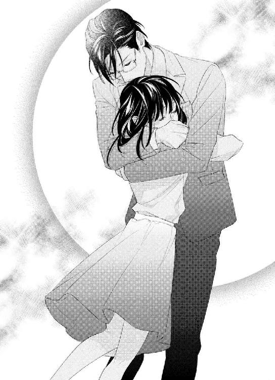
それからキスをされ深いものに変わって行く。
「ん......っぅ」
濡れた音を繰り返すキスに、由良の頭はどんどん痺れて行く。
「好きです」
キスの合間に言うと、その言葉さえも唇にのみ込まれてしまいそう。痛いくらい唇を吸われて、濡れた音を立てるそれがリアルだった。
いつの間にかベッドに下ろされていて、由良は一色の首に手を回す。
「一色さん、すき......っ」
「......っ、もう黙りなさい」
これからされる事を、由良は明らかに身体と心で期待していた。
身体が鳴ると言う事を、この日身をもって体感したのだった。
12
ベッドに下ろされたあとすぐに、首筋に顔を埋められた。耳の後ろに唇を感じ、そこが唇で軽く食まれて、濡れた音を立てるのが聞こえた。それだけで由良の心臓は強く脈打って、ドキドキしてしまう。
服の下に入って来た大きな手が、ささやかな胸を揉むのが恥ずかしい。彼の手に由良の胸は小さいから、揉み応えはないと思うのに、ゆっくりと優しく揉み上げる。そうされたかと思ったら、胸の先を摘ままれて身体が震えてしまう。
「胸、弱いな、由良」
「だって......一色、さん、が......っ」
「僕が、何かな？」
言いながら由良の胸を揉み、それからスカートの中に手が入って来て、めくり上げる。すでに足は露わになっていて、内腿を撫でられると身体が変になってしまう。鼻にかかった息を吐くと、耳元で一色が微かに笑った。
「いい声」
胸を揉む手が止まり、背中に手を回したかと思うと、胸の緊張感がなくなり、下着ごとブラウスが鎖骨の辺りまで上げられる。胸が直に空気にさらされ、一色の目にさらされているのだとわかった。
「もっと声、聞かせて欲しい」
言いながら、由良の露わになった胸を揉み、ゆっくりと視線を合わせる。
身体を横たえると、胸がほとんどなくなってしまう。だからまったく色気のない身体をさらすのは、やはり恥ずかしい。
「や......っあ」
「可愛いな」
胸の間に吐息を感じる。唇が押しつけられ、舌が胸を軽く舐める。
「あ......っ」
そうしたかと思うと、胸の先から一色の唇に軽く食まれ、のみ込まれていく。濡れた音が聞こえて、身体がさらに震えてしまう。
乳房の部分を強く吸われて、ピリッとした痛みを感じた。赤い痕が残ったのを見て、息を詰める。
「色が白いから、キスマークが綺麗だ」
赤い痕の部分を彼の舌が触れる。もう一度胸が唇にのみ込まれ、舌がその先端をくすぐる。
腰が勝手に揺れて恥ずかしいのと、身体を縮めてしまいたくなるような感覚は、快感だと由良はわかっている。身体を縮めたくてしょうがないのに、一色の身体が由良の身体を固定しているかのように重なっているから、それができなくて余計に苦しい感じがする。
目を開けると、一色がネクタイを解くところだった。シュッと音がして解いた時に、一色のいつもの匂いを感じる。それが余計に体を疼かせるようで、由良は下唇を噛んだ。
「どうした？」
「一色さんの、香りが強くしたので」
「どんな？」
言いながらネクタイを取り去り、スーツの上着を脱いだ。今日はベストを着ていないらしく、ブルーのシャツをスラックスから引き出す。そうすると余計にそれを感じ、身体がキュッとなるのを感じた。
「いつもの、フレグランス......」
「ああ、好きだよね、由良」
耳元で微かに笑われ、大きな手が由良のささやかな胸を覆う。胸を軽く揉み上げたあとは、由良の服を脱がしにかかった。
「匂いで感じるなんて、君は敏感だな」
クスッと笑いながら言われて、由良は首を振る。
「そんな、事......っ」
一色の匂いに、身体が感じていた事を知られている。顔が一気に熱くなった。
「感じてくれて、嬉しいです」
ブラウスの首周りのボタンを取り、頭からブラウスを引き抜く。腕にブラウスが絡まる形になったところで、由良のスカートのファスナーを下げた。
「それは、好き、だから......っ」
「わかってるよ。煽ってくれますね、君は」
スカートと一緒にストッキング、下着にも手をかけられ、腰がわずかに浮き上がる。
「あ......っ」
腕が上に上げられた状態で、ブラウスが絡まり動かす事ができない。由良は一色に裸をさらしてしまっている羞恥に横を向いた。
「もう何度もしてるのに恥ずかしい？」
そう言って、由良の足を開かせる。さらに羞恥を覚え、声を我慢する。
「声、出して。感じているのに、辛くない？ そんな仕草は僕を煽るだけだ」
足の付け根に大きな手を感じる。そこを何度か撫でたあと、大きな手が足の間を覆う。
「あ......っ」
ただ触れているだけなのに、腰が揺れてお腹の奥底が疼いた。そうして、触れているだけの手が、足の間をゆっくり撫でる。全体を大きな手で撫でられたかと思うと、長い指が由良の中へと入って来た。
「ん......ぅ」
腰が揺れる。両手からブラウスが脱がされ、自由になった手でシーツをギュッと掴む。
中に入った指が音を立てているのがわかる。その間にも由良の胸に触れたり、臀部を撫でたりする手は止まらない。指がもう一つ増えて、由良の中を何度も出入りして、快感を刺激した。
「も......っや」
由良の中を愛撫する指から濡れた音が聞こえる。由良自身、もう限界が近かった。
「こっちも限界、中に入れて」
指が引き抜かれ、由良の足を撫でる。
彼の言葉に何度も頷く。一色がベルトを外すのが見えて、まだシャツも脱いでいないのに、と思う。近くにあるチェストから避妊具を取り出し、パッケージを破った。
下着とスラックスを下げると、反応しきった一色が出て来る。そこを見て、アレが私の中に入るんだ、と想像する。それだけで、身体が疼いてしまって、どうしたらいいのかわからなくなる。
避妊具をつけるのを見て、しないといけないけれど、逸る気持ちが止まらない。
「一色、さ......っ」
手を伸ばすと、その手を取られてキスをされる。準備ができた一色は由良の足をさらに開かせて、腰が近づく。目を閉じ、一色自身が入って来るのを受け入れる。
初めての時はとても痛かったのに、今では痛いというより、入って来る感覚がリアル。由良の中を硬い一色のモノが埋める感覚がいつもより良くて。
「ん......っあ」
一色の腰を足で締めつける。身体が震えて、キュッとなった。
「いつもながら締めつけますね。待っていましたか？」
はぁ、と何とも艶っぽい息を吐きながら言われた。腰を少しだけ揺すって、さらに奥まで入って来る一色に、息を詰める。
「会いたかったから......」
由良が言うと、彼は眉間に皺を寄せて、それからフッと笑った。
「僕も、こうしたくて堪らなかったよ」
そうして、腰を揺すられるともうだめで、広い背中に手を回して強く抱きしめた。
「一色さ......っ」
「たった十日程度で、バカみたいだ」
由良の身体を抱き起こすと、彼もまた強く抱きしめた。奥まで一色が入って来て、由良は身体が震える。
「すぐにでも動きたいけど、待とうか？」
一色の吐息が熱い。耳元で言う言葉も、低くてかすれていて、腰が揺れてしまう。
「動いて、下さい」
由良が言うと、一色が少しだけ身体を離して、由良の顔を上げさせる。唇を唇で塞がれて、舌を絡めるキスをしながら、彼が由良の身体を揺さぶる。
一色から与えられる快感に、息が上がるのは由良の方が先だった。唇を離して彼の肩に顔を押しつけ、鼻にかかった甘い声を出す。
一色の忙しない息が由良の耳に届くが、由良もまた忙しない息を吐き出し、一色にしがみつく。
何度も揺さぶられる身体。一色は由良の身体を作り変えたようだ。これがものすごく気持ちいいなんて、この間まで思いもしない日々だったのに。
「君に触れたくて、身体を繋げたかった」
言葉を聞くと、もっと気持ち良さが募る。
「入りたくて、堪らなかった」
声がかすれている。低くて、重みを増すような声音に、由良の腰も疼きを増す。
一色とこうなる時間が由良も欲しかったのだとわかる。でも、その言葉を上手く言える状態ではなくて。
ただシンプルにしか言えなかった。
「もっと......っい、しきさ......っ！」
もっと腰を揺すって欲しいと思った。まだ欲しくて、という気持ちは初めてだった。腰が震えて、一色を締めつけているかもしれない。中にいる一色がさらに主張するような感じだから。
「そんなに言われると、もっと堪らないな」
ため息交じりに言われて、由良の身体がベッドに戻される。繋がったまま腰を撫でられて、緩やかに腰を揺すられる。緩やかなのに、奥の方へと腰を押しつけられると、身体の奥底がキュッと音を立てるようで、腰が少しだけ浮き上がる。
「気持ち良さそう」
微笑んでそう言われた。その笑顔がすごく色っぽくて、小さく喘いだ声を出してしまう。
「一色さん......っ」
手を伸ばすと、その手を取られてベッドへ押しつける。そのまま腰を断続的に揺らされて、我慢したくても吐息とともに小さな声は出てしまう。
これは一度もイカされていないからかもしれない。でも、一色の体温も、腰を揺すってくれる動きにも、もっとして欲しいと思ってしまう。
腰を強く押しつけてそのまま腰を持ち上げるように揺すられると、強いのに気持ち良くて。こんな自分は初めてだった。
「あ、も......むり......っ」
「いいよ、イって」
由良の手をベッドに押しつけていた手が、胸を揉みながら腰を動かす。胸への愛撫と一色が中にいるのとで、どうしようもなく、ダメになって。
「は......っあ！」
腰が反ってしまう。でも、由良はイったのに、一色はまだ達しなくて。
最高に感じているのに、まだ感じさせるような動きをされると堪らない。
一色と繋がった場所が濡れた音を立てているのがわかる。彼との行為で、由良がいつも以上に感じているのだとわかるだろう。
一色のモノは確かな質量できついくらい満たしているのに、潤ったソコは彼の動きをリアルに感じさせる。
響く、濡れた音が堪らない。
「いつも以上に、濡れているね。すごいな」
一色の声が耳をくすぐる。言葉の威力と同時に彼の匂いも感じて、余計に身体が高鳴る。
彼の由良を触れる手にもいつも以上に感じて、胸を揉まれるだけで疼きが増す。まるで全身が性感帯になったような感じだ。
「あぁ......っ」
声を出して一色を見つめる。腰を左右に揺する動きが、由良の官能を高める。
「だって、それは......っ」
言葉にならないのは、彼が由良の身体を動かすからだ。中に入っている彼のモノが動くと、由良は自分が彼を感じるだけの淫らな女になって行くのがわかった。
「ダメ......そんなに......もっと、音が出ちゃう」
喘ぐように声を出した時、ひときわ強く突かれて、声にならない声を出す。
由良は中が音を立てながら、さらに潤むのがわかった。潤みを増した分、トロリと伝うモノを感じる。きっとシーツを濡らしているだろう。それを考えるだけで、またさらに身体がキュッとなり、潤みを増す気がした。
一色としばらくしていなかったけれど、こんな風に乱れるなんて思いもしなかった。
「あ......青さん......っ」
思わず名を呼んだ。好きだと思って、この人の前でしか、こうなりたくないと思って。心臓が高鳴り、この人だけに、由良の乱れたところを見られたいと思った。
「由良、その顔、僕以外に見せるな」
「しない、青さん、だけ......あっ」
奥を突かれて、身体が震える。また疼きが強くなり、由良はイカされそうだ。胸を揉まれながら、一色の身体が覆いかぶさる。彼の匂いがして、それにもクラクラして、シャツを掴んで身体に頬を寄せる。
背中がしなりそうなほど強く抱きしめた一色は、腰の動きを早くした。由良は限界が近くて、喘ぐように息をすると声が出てしまう。
「ああ......っ」
由良が声を上げると、一色が首筋に顔を埋める。
「こっちも、イキそう」
さらに強く抱きしめ、腰を何度も強く押しつける。そうされると、身体がどうしようもなく感じてしまって、気持ち良くて。
「んんっ！」
中にいる一色を感じながら由良は達した。
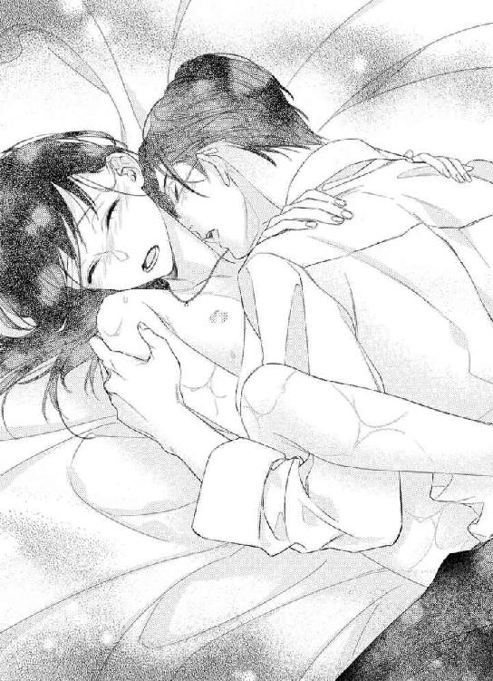
「由良......っ」
呻くように由良の名を呼んで、一色の動きが止まる。彼は小さく腰を揺らして、由良の耳元で熱く息を吐いた。
少しだけ重みがなくなった事を感じ、目を開けると、由良の身体の横に手をついていた。一色が忙しない息を吐きながら由良を見ていた。額ににじむ汗を見て、由良との行為でそうなったのだとわかる。
彼の綺麗な顔が近づき、息が整わないまま深いキスをされ、舌を吸われ息ができないかと思った。
また身体がゆっくりと重なり、一色の重みを受け止める。息が一瞬だけ詰まったけれど、すぐにその重みが心地よくなってしまった。
身体を繋げたまま、抱きしめられ、由良の身体が反転する。
「きゃ......」
頭を撫でられ、下になった一色を見ると、顔が赤くなってしまう。
「由良」
名を呼びながら、由良の腰を撫でる。温かい手でそうされると、腰が揺れてしまいそうだ。
「暑いな、汗かいた」
髪の毛をかき上げる仕草に、ドキッとする。ただでさえ、まだ一色と身体を繋げたままだ。
「こんなの君とだけだ、息が整わない」
お互いに息が整っていない。それだけ熱い時間だったという事だ。由良も一色の事を、青、と呼んでしまっていたし。
「名前、初めて呼ばれた」
「あ......そう、です。つい、呼んでしまいました」
「嬉しかったよ」
頬を撫でる手が熱い。互いの体温がまだ落ち着いていないのがわかる。それに、一色の上にいる事が余計に、由良を落ち着かせない。
「今日は君も欲しがってくれた」
もっと、と言った言葉を思い出し、顔が赤くなる。
「あ......だって、あれは......」
「あれは？ なんですか」
聞き返されて、返事ができなくなってしまう。
確かに由良は、一色を欲しがっていた。
「君の中、いつもより狭くて痛いくらいだった。でも、すごく気持ちよかった」
さらに顔が赤くなる事を言われて、顔をうつむけて一色の肩に顔を埋める。
「嬉しかったよ、欲しがってくれて。いつも僕ばかりかと思っていたから。今日はいい事ばかりです」
由良の身体を宥めるように背を撫でながら言われて、少しだけ顔を上げる。
「そんな事ないです。私の方が絶対先に、一色さんの事好きになったから」
言った言葉が恥ずかしくて、また顔を肩に埋める。
「そうか、そうだったかな......」
頭を撫でながら由良の顔を持ち上げる。
そうしてキスをしながら、由良の身体が反転し、またベッドへ戻る。ひとしきり由良の唇を堪能したあと、自分のモノをゆっくりと引き抜いた。シャツを脱いだあと、避妊具を外してから、またサイドチェストへと手を伸ばす。
「いろいろ考えて損したよ」
「え？」
「由良には僕だけだって、さっきので確信した。この年になってまでバカみたいだな、本当に」
新たな避妊具を手に取り中身を取り出したあと、スラックスを脱ぐ。下着も脱いで、一色の色っぽい身体が露わになって行く。
「君を好きになって、気持ちが通じると、本当に君に恋をしているんだって、気付くよ」
由良の胸に触れて、両膝を開かせて。
「一色さん......もう一度？」
「一色さん、に戻るのか？」
彼の目がじっと由良を見る。彼の綺麗な茶色の目が、微笑んだ。
胸を撫でながら、身体を近づけるのを見て、由良は息をのんで、彼を呼んだ。
「青さん」
「うん？」
優しい目が聞き返すように瞬きをする。
「私は、もっと、って言っていいんでしょうか」
一色の腕に手を伸ばして、触れながら言うと、髪の毛の中に手を入れて頭を撫でた。
由良にとっては恥ずかしいセリフ。でも、彼はそんな由良の心情をわかっていると思う。
「もちろん。また、君のあの顔を見れるなら、たくさん可愛がりますよ？」
言ったあと、小さくキスをした。頬と目蓋にも同じようにして、一色が足の付け根を撫でた。
「由良、入れるよ」
さらに腰を近づけ、由良の身体の隙間に硬いものが当たる。返事もしないうちに、一色の硬いものがゆっくりと由良の身体の隙間を埋めていく。
その隙間が一色で満たされるのはすぐの事だった。
入ったとたんに身体がキュッと音を立てて、一色の存在をより強く感じたのだった。
☆
食卓の上には温かいご飯と味噌汁、それから簡単な煮物がある。筑前煮のような感じだが、由良がお風呂に入っている間にすべて作られていた。先に食べていていいと言われたが、待っていたら苦笑とともにため息をつかれて、現在一緒に食べている最中。
「これは、筑前煮ですよね？」
由良が言うと考え込む仕草をして、首を振った。
「ん......違うかな。作る工程が違うから」
「味は、そうですけど」
「じゃあ、なんちゃって筑前煮かな。本格的なのはもっと時間かかるから。お腹空いていなかった？」
聞かれて、ご飯をほおばっていたので頷く。
「長い時間してたから。セックス、体力使うしね」
箸の動きを思わず止めると、一色が笑う。
「あれだけ感じてくれると、もっとしていいのかな、って思った」
感じてくれると、という言葉に顔が赤くなり恥ずかしさがこみ上げる。
「やめて下さい、一色さん」
頬を膨らませると、由良の唇に手を伸ばす。
「一色さん？」
彼の手にはご飯粒が一つついている。それを食べながら由良の顔を見る。
「青、さん」
「はい、お利口さんです」
頭を撫でて、ご飯を食べる一色は、この上なく甘い気がした。
さっきの何だか不機嫌な感じはまったくない。
「あの......」
「何かな？」
「さっき、怒ってませんでした？ それに、最近素っ気ない感じがしたんですけど......」
ちょっとだけ不安だった期間を考えると、聞きたくて聞いてしまった。こんな事今まで聞けなかったのに、大した進歩だと思う。
「別に、怒ってませんよ、君には」
「私には？」
「ええ、そう。怒っているのは、芽衣子と、高崎ですね」
きょとん、としてしまったのは二人の名前を聞いたからだ。芽衣子は一色の同期で、仲のいい職場友達のようだった。それに、優馬はただの部下で、今回の仕事は一色と関わりが少なかった。
「どうしてですか？ 高崎君と森本さん、何かしました？ 一色さんに？ ですか？」
「まぁね」
食事を食べながらそう言われて、まったく見当もつかないから首を傾げる。
「どうして、ですか？」
「アメリカにはまだ行きませんよ、由良」
一色は、芽衣子が由良にそう言ったのを知っていたのだろう。芽衣子が話したかもしれない。
「でも、青さんはいつも確かに出張が長くなってしまいます。森本さんの言う事は納得できますし......」
「勝手に芽衣子が言っているだけ。こっちに彼氏がいるから戻って来たいだけですよ。きちんと言っておいたから、そこは気にしないように」
芽衣子に彼氏、と聞いてどこかホッとしてしまう自分がいた。戻って来たいのはそんな理由もあったのか、と。いろんな思いは杞憂だった事を思う。
「でも、いつか、行くって事ですよね？」
「そのうちには」
一色の返事を聞いて、そうだよね、と思う。一色のような理想の上司が栄転しないわけがない。
「でもまだ、もう少しは......せめて一年は、日本にいたいと思っているから」
ご飯を口に運びながら言われて、由良は彼を見た。
「市木由良をもう少し一人前にして、一緒に連れて行こうかと思ってます」
「え......？」
「君を育てれば、本社への推薦もできるから。君と離れずに済んで、一石二鳥です」
「で、でも、私のほかにももっと、できる人が......高崎君だって、未來もいるのに」
ふう、とため息をついた一色は、一度箸を置いた。
「高崎も来栖さんも優秀ですが、僕は君を推薦するつもりです。君と付き合う前から決めていたので」
そんな風に思っていたなんてびっくりする。優馬か未來を推薦するのが普通だと思う。それに、デザイン事業部にはもっと優秀な人達だっているからだ。
「君の魅力は向こうでも発揮されるだろうと思うし、日本人特有の、細やかな気遣いは世界に通用します。ＣＥＯも日本をいろいろな手本にするべきだと言っているからね」
「それだけですか？」
「それだけです。それに、君は仕事ができないんじゃなくて、スローペースなだけ。多分向こうの方が合うと思いますよ。みんな、焦ってないから」
そうしてにこりと笑みを向けられ、自分なんかがアメリカに、と思う。
「企画を立てるのは下手じゃない。これからもっと企画を立てたり、手伝いをやらせるから、覚悟しておいて」
そんな、という顔をしていたのだと思う。一色が苦笑した。
「その代わり、すごく甘やかして、愛します。それも覚悟しておいて。それに、一緒に連れて行くという意味、わからないわけじゃないと思うので」
確かに離れ離れにはならない。初めての外国で戸惑うだろう。一色がいたのなら、ホームシックにもかからないだろうし、好きな人が傍にいるのは心強い。
「一緒にいるのは、心強いです」
「それだけの意味じゃないよ？」
含んだように笑う一色を見て、何となく思った事は、これからずっと一緒にいるアレの事。
「まさか、ずっと一緒にいつまでもいるという、事？ ですか？」
「そうかも？」
一色ははぐらかすように笑って、ご飯を一口食べる。
「食べないの？」
「いえ、食べます！」
顔が熱くなってドキドキする。まさかこんな事が起こるなんて思いもしない。人生で初めての事ばかりを一色と経験している。怖いけれど、期待もあるこの気持ちを、どう表現したらいいのだろう。
「アメリカに連れて行くのなら、気兼ねなく口説けるから......君と付き合う前は、そう思って計画を立てていたけど、僕が我慢できなかったから。君はもし僕との関係がバレてしまったら、とか考えていますか？」
それは実際に考えていたので、素直に頷く。
「バレないに越した事はないですが、もしそうなってしまっても、かまわないから」
「それは......どうしてですか？」
「実際に付き合っているのは本当だから。それに、付き合いを正式に申し込んだのは、僕の方だって事を忘れないで」
でも、と思いながらまた箸を止めると、食べて、と言われるから箸を動かす。
「ただ、一年は頑張って隠し通して欲しい、と思います。由良を僕が連れ出すまでは」
連れ出すと言う言葉を聞いて、何だかまるでお姫様みたいだ、と思う。
「でも、未來には、話しました......うすうす感じていたみたいで」
「来栖さんは誰にも言わないでしょう？ 何なら高崎に言ってもいいですよ」
そう言えば、さっき優馬にも怒っている、と言っていたような気がする。
「高崎君のどこに怒ってるんですか？」
「初日の日、何度も君の頭を撫でていたから」
え？ と思ってしまった。意外な言葉を聞いて、由良は目をパチクリさせた。
「高崎君は、誰にでもそうしてます」
「知ってるけど、自分でも年甲斐もなく狭量になっていてね。触るな、って思ったんです。由良は、僕の、でしょう？」
その言葉を聞いて何だか嬉しくなった半面、一色の意外なところを見られたみたいで、楽しかった。
「笑わないで欲しいな。それだけ君の事を思っているんです」
そう言う一色も笑っていた。
「青さんも、森本さんの事、芽衣子って呼び捨てるのやめて欲しいかな、って......欲張りですけど、ちょっと思ってます」
由良が上目遣いで言うと、一色は瞬きして、フッと笑った。
「すみませんでした。気をつけます」
そう言って頭を下げる彼は、上司らしくない。今は彼氏なんだと思うと、くすぐったい気分だ。
「あと、上司命令も、二人の時は、やめて欲しいです、けど？」
もう一度上目遣いで聞くと、考える仕草をして、茶色の目が由良の目を覗き込む。
「できるだけ気をつけるけど、上司命令はこれからもしたいな。だって、由良、上司命令をすると可愛くなりますからね」
顔が急激に熱くなる。上司命令は、いつもエッチな時にされるから。
「でも、言う事を聞かなきゃならない感じになるので。私にプライベートでは名前で、というなら、上司じゃないはずです。二人の時は」
一生懸命言うと、一色はご飯を口に入れて、それから言う。
「ちょっとしたスパイスだと思って下さい。可愛い君を見るため、だから」
由良は下唇を噛む。でも、由良は一色の事が好きなので、許してしまっていると思う。それに、上司命令、をされるとドキドキするのは事実だ。
この間まで憧れだった一色と、こんな会話をし、時間を共有している。
まるで夢みたいな出来事ばかりでふわふわする。
おまけに仕事も上手くいっているなんて、本当に夢の中にいるのではないかと思ってしまいそうだ。
食事を食べ終えると、由良の心情を察したように一色が言った。
「信じられないなら、このあと、またベッド行きですよ？」
「......明日仕事です」
笑みを引っ込めると、一色が微笑んだ。
「若いから大丈夫。服は、今日のままで十分でしょう」
「下着がありません......」
「この前の忘れ物が置いたままだけど？」
いろいろ言いくるめられる由良は、この人に勝てないと思う。
本当にどうして憧れだった人が、たいして美人でも何者でもない自分に、と思うのはしょうがないと思う。
「青さんは、そうしたいですか？」
「望んでいいなら」
そんな事言われては、由良は頷くしかないじゃないか、と思う。
頷くと、一色は椅子から立ち上がり、由良の身体をまた抱き上げた。
「青さん、食べたばかりなので......っんん」
深いキスをされて、舌がからめとられる。
「煮物の味」
顔が熱くなるのは、キスの味がそれだからだ。
「あ、青さんのも、同じ味がするはずです」
顔を赤くしながら言うと、そうだね、と言ってまたベッドの上。
目の前に避妊具のパッケージを見せられて、また目をパチクリさせる。
「いつか、僕のにつけてくれる？」
さらに顔が熱くなる。首を振って、無理、と仕草で示す。
「だめだよ、お互い楽しくて、気持ち良くなるために、次は頑張って下さい」
言いながら由良の上着がスルスルと上へと上げられる。ブラジャーを身に着けていないそこは、胸の先端がもうすでに感じていて。
「可愛い」
クスッと笑って、大きな手が撫でる。
「小さいからですか？」
由良の言葉にさらに笑って、首を振る。
「感じている君が、可愛い」
由良の身体に重みをかける。
「明日からまた上司なので。今日はたくさん、好きにしたい」
言葉が腰に来る。
ずっしりと重くなるのを感じながら一色の首に手を回す。
「優しくして下さい」
こんな風に言うとは思わなくて。
また明日からは仕事だ。上司の一色には報告書を出さなければならない。
それを思うと身体が疼いてしまった。
大好きな上司とずっとこうやっていられる幸せを、噛みしめる由良だった。
あとがき
初めまして、井上美珠と申します。
今まで他社で本を出していましたが、今回は熱心にお声をかけてくれる編集様と出会い、チュールキス文庫にて出させていただけることになりました。何年か他社一本で書かせていただいていたんですが、違う会社で本を出してみたいなぁ、と思っておりました。しかし方法が分からず、仕事も忙しく、という感じでした。
仕事がひと段落しようとしていた時、熱心なメールを頂いて、本当にびっくりしました。今までまったくお声がかからなかったし......（というか、声がかからなくても方法があったと思うのですが）。天の声、という感じで、ありがたかったです。今でも感謝しております。
仕事が早くない私に根気よく、迷惑をかけても優しく対応してくださり、本当にありがとうございます。
そんな編集様との初めてのお仕事が「君にそばにいて欲しい」です。私の本は「君」がついているタイトルが多いので、今回は揃えていただきました。実はこのストーリーはもう本当に何年も温めてきたものになります。書き始めた当時ＨＰの作り方を知らず、ブログから始めました。というのも今でもＨＰの作り方は分からないのですが。
このストーリーが出発点でもあるような気がします。ですから、青と由良を世に出させていただき、本当に感謝しかありません。
ヒロイン由良は自信がない女の子ですが、青と恋に落ちてどんどん変わっていく、可愛くなっていく過程をこの話の中で感じていただけたら嬉しいです。
また、イラストの青がカッコイイので、私も「ああ素敵だなぁ」と思いました。こんなカッコイイ青に溺愛されている由良が羨ましいです。今後もきっとラブラブに過ごし、アメリカに異動した後は自分の権限で由良を呼び寄せ、自分の部下とする。そしてさらに溺愛して、ＮＹのオシャレなカフェで朝食をとったりするんでしょうね。
私はアメリカといえば西海岸しか行ったことがなく、オシャレなＮＹなんて行ったことがありません。アメリカ発の高級ブランドもあるので、由良は青からプレゼントしてもらったりするんでしょうね。
この手に取りやすいサイズの本を読みながら、そんな先のことも想像していただけると嬉しいですね。
最後に、この本を手に取り、読んでいただいた方、本当にありがとうございます。
心からの感謝を申し上げます。
井上美珠
「市木さん、爪、綺麗じゃん。もしかして初ネイル？」
会社の先輩、しかも男の人から言われて、由良は目を伏せて笑みを浮かべた。
「はい、初めてなんです。私爪が小さいから......おかしくないですか？」
「可愛いよ。綺麗だね」
彼は誰でも褒めるから、みんなは女を転がすのが上手い、と言う。
「ありがとうございます」
頭を下げて、先輩に書類を渡すと、ありがとう、とデスクへ戻る。
由良もまた自分の仕事をしなければならない。先日の展示会が成功したので、次回の展示会の一部を任されたのだ。
「私ちょっと、資料室へ行ってきます」
デザイン事業部の資料室は、テーマを決めたスタイル別のレイアウトなど、由良に必要なヒントが詰まっている。
いつもはオフィスの出入り口にある資料室のカギがないので、首を傾げていると、社員の一人が言う。
「資料室は、今、部長使ってるよ？ そのまま行ったら？」
「.........はい」
一瞬返事が遅れたけれど、変に思われなかったらしく、社員は自分のパソコンへと視線を移した。
オフィスを出て数歩進み、すぐ近くにある左手のドアを見た。
一度深呼吸して、ドアノブを捻って押し開ける。
「誰？」
開けた音が聞こえたのだろう。声を出したのは部長の一色青だった。
「市木です。失礼します」
由良が名乗って顔を見せると、一色は微笑んだ。
「由良」
今は二人っきりだから、由良と呼ばれても大丈夫だ。
「カギ、かけてくれる？」
笑みを浮かべている彼に、言われるまま由良はカギをかけた。
「部長がここにいるの、珍しいです」
「この間の展示会の資料を、やっとまとめたからね。君こそ、どうしました？」
「私は......次の準備のために、資料を見直したいと思いました」
一色を見上げて言うと、彼は由良の頭を撫でて、手にしていた資料を棚に戻した。頭を撫でていた手が、頬に移動して優しく撫でる。
「そうか。次も頑張りなさい。期待しています」
「はい」
笑顔で答えると、茶色の目が由良をじっと見た。
「久しぶりに、きちんと顔を見た」
微笑んだ一色が由良の身体を引き寄せる。カギをかけていて良かった。一色の柔らかい唇が、由良の唇にしっとりと重なり、音を立てた。
「っ......ん」
キスが深まる。由良は一色の身体にしがみつく。彼の大きな手が、服の上から由良の胸を揉みながら、先端を摘まむ。
「こんな、ところで」
由良が言うと、キスで唇を塞がれた。
身体がゆっくりと崩れ落ちていく。一色はそんな由良を支えながら、床に膝をついた。キスのせいで身体が支えきれなくて、床の上にゆっくりと身体が横たわる。喘ぐように息をすると、ブラウスが押し上げられ、下着のホックが外れた。
「最近、君との時間がない。限界です」
耳の後ろにキスをされながら言われて、さらに由良の身体は力が抜けていく。彼の低い声がかすれていた。
スカートの中に手を入れ、下着に手がかかる。
「こんなこと、いいの？」
思っていても、今この状態では、あらがえない。
「いいわけない。嫌なら、拒んでいいですよ？」
一色の声がさらに低くなり、熱のこもった茶色の目が、由良を見つめる。
こんな目で見つめられて、拒む理由はない。由良は首を振って、彼の背中を抱きしめた。
「社内の恋愛って、こんなことするんですか？ もう、ここに来れない......っ」
きっと、ここに来たら、一色と抱き合ったことを思い出すだろう。顔を赤くしながら言うと、彼が耳元で笑った。
「静かに。部長が部下に、会社で手を出していることは、内緒ですよ？ 君の声は、誰にも聞かせたくないからね」
由良の唇に人差し指を当てた。頷くと微笑んだ彼は、キスをしながら由良の足を開かせる。
「......っ」
「それに、社内恋愛は、初めてなので」
ストイックなほどきちっとしたスーツ。上着のボタンを緩め、ベルトを外す彼に、息をのむ。
「僕も分からないよ、由良」
仕事モードの彼が、仕事の場でこうなるのは由良だけなのだと思うと、胸がいっぱいになってしまう。
「青さんが、好き」
由良の言葉に何も言わず、彼は深く痛いほどのキスをする。
背徳感を感じながら、由良は彼を受け入れ快感を得るのだった。
君にそばにいて欲しい
電子第１版発行 ２０１６年８月31日
著 者 井上美珠
発行所 株式会社ジュリアンパブリッシング
東京都千代田区九段北１‐５‐９‐３Ｆ
０３‐３２６１‐２７３５
(c)Mijyu Inoue 2016
※本書の一部、あるいは全部を無断で複製複写（コピー）、転載、上演、放送することは法律で認められた場合を除き、著作権の侵害となるため、禁止します。